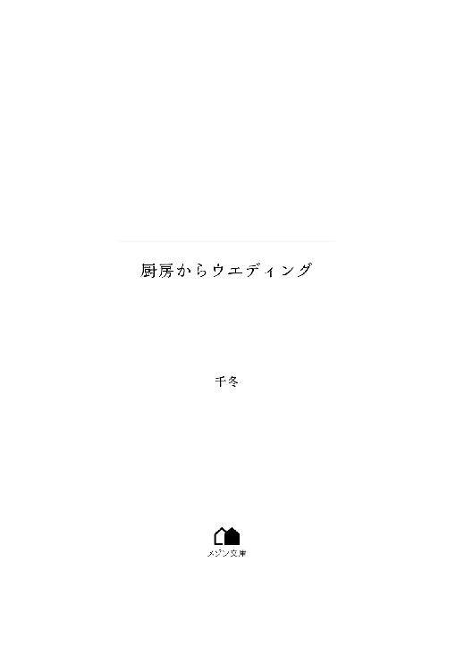

| 厨房からウエディング (メゾン文庫) | |
| 千冬 | |
| 一迅社 (2018) | |

「おめでとう、美姫ちゃん！」
「合格おめでとう！ 春日さん、いつ勉強してたのよ」
春日美姫はこの日、職場に出勤してしばらくすると、急にスタッフに呼び出された。
何事かと思って支配人室のドアを恐る恐るノックした途端、中からドアが開いた。
そのまま、あれよあれよという間にたくさんのスタッフに囲まれて、彼女としては予想もしなかったほど盛大にお祝いをしてもらっていた。
その日は平日で、たまたまご予約のお客様がいらっしゃらない時間だ。
一瞬、何のことかと美姫自身ぴんとこなかったけれど、しばらくして三日前に報告した件だと思い当たる。
鳳支配人に、フードスタイリスト三級の資格に合格しましたと。
美姫にしてみれば本当に大したことではないので、こんなこと報告するものかなと迷っていた。
しかし、支配人は彼女が試験を受けたことを知っていたので、合否をきちんと報告するのが社会人としての常識だよねと支配人室のドアをノックしたのだ。
まさか、こんなサプライズに繋がるとは。
「偉いわねえ、美姫さん。これで資格がまた増えたものねえ」
そう言ってお祝いしてくれる筆頭は、おそらくこのお祝いの場を計画してくれたその人、鳳瑞希支配人、ここ結婚式場の総責任者だ。
いつもツイードのスーツを着て、にこにこしている穏やかで上品な女性にして、この職場のトップである。
飛びぬけて大学の成績がいいというわけでもなければ、特別な特技をもっているわけでもない自分を、何故か採用してくれた奇特な人だと美姫は思っていた。
その支配人がトップを務めていて、美姫が働いているこの職場は、「ラ・マーレ・レビアンタ」。
いわゆる、結婚式場である。
県内にいくつも式場を展開しているグランデ・オオトリチェーン傘下の一つで、その中でもここはゲストハウスウエディングを前面に打ち出している。
敷地こそ広いが、高い建物は全然なく、噴水のある広いエントランスの奥に立つメインの建物は、英国貴族所有のマナーハウスを模したもの。
結婚式場の規模としては、決して大きくない。
しかし、ラ・マーレ・レビアンタは、今や県内のゲストハウスウエディングを代表する式場だ。
そして鳳支配人は、どのスタッフにも気さくに声をかけてくれる、優しくて尊敬する上司である。
小柄で、身長はおおよそ百五十センチほど。
年齢は、五十くらいだろうか。
ちょうど美姫とは親子くらいの年齢差なので、支配人と話していると、スタッフや出入りの業者から親子みたいなどと言われることが何度かあり、美姫としては内心嬉しかった。
それは、美姫の家庭事情が関係していることなので、他の人には言っていない。
当然、支配人にも。
「ほら、まずは美姫さんから好きなのをお取りなさいな。主役はあなたよ」
お祝いとして用意されたのは、パティシエの堤が作ってくれたスイーツの盛り合わせ。
堤自らが、美姫ちゃんどれがいい？ とワゴンの横で控えていて聞いてくれる。
あああ！ なんてゴージャスなの！
これ、私がお皿に取ることで、せっかくの調和が崩れちゃうと思うと、残念で手を出しにくい。
でも、食べないともったいない。
美姫は、目を潤ませながらも並べられたスイーツの数々に感動した。
「迷っちゃうー。堤さんのスイーツ、絶対美味しいんですもん！」
この「ラ・マーレ・レビアンタ」のウエディングケーキやコースの最後のスイーツ全般を任されてる堤の作品である、美味しくないわけがない。
「それにしても、美姫さんたら、フードコーディネーター三級だけじゃなく、フードスタイリストまで。お料理への情熱かしら」
いや、そんな大層なものじゃないです、支配人。お恥ずかしいと、美姫は心の中で大いに照れた。
フードコーディネーターとフードスタイリスト。
その名称は似ているが、当然同一のものではない。
どちらも試験を受けて合否が決まるものだが、スタイリストの方がより正式なライセンスというか、資格という感じだろうか。
フードコーディネーターは日本フードコーディネーター協会が、フードスタイリストは日本フードライセンス国際協会が、その資格を認定してくれる。
どちらも食に関わる資格であり、どちらかというとフードコーディネーターは食だけでなくそこに関わる様々なものや情報などを複合的に考える。そして、フードスタイリストはもうちょっと食について専門的かつ直接的だと美姫は考えている。
そんな美姫の脳内は、今や甘い香りと魅惑的な色彩で占められようとしていた。
ああ、ストロベリーとクランベリーとラズベリーを使ったタルト、絶品！
サクサクのタルト生地って、どうしてこう美味しいんだろう。
ソルベは洋梨、あっさりだけど、洋酒がふわりと。
ああ、いい！
色とりどりのマカロン、みんなが手を伸ばしていて、競争率高いったら！
この芸術作品のようなスイーツを作った堤からも「おめでとう、美姫ちゃん。これからもアドバイスくれよな」と言われ、美姫としてはもう舞い上がってしまうほどの喜びだ。
だと言うのに、それに水を差す人物がいた。
「信じらんねえ、この程度でお祝い騒ぎってなあ」
......やはり来たか。
美姫の眉が、ピクリと反応する。
豪華でありながら重厚でクラシカルにまとめられている支配人室で、みんなが気持ちよくお祝いしてくれるってときに、一人だけ美姫の資格習得にケチをつけてくる奴がいる。
鎌口大、目下のところこの職場内で美姫の唯一の天敵だ。
鎌口はここのシェフの一人で、一番若い二十八歳。
美姫より二歳上だが、二十二歳の大卒ですぐに正式採用された彼女より一年遅れて入ってきたのだから、美姫としては私が先輩だという意識がある。
だと言うのに、ことあるごとに美姫につっかかってくる、彼女の癇に障る奴なのである、この鎌口は。
「二級とか一級とか、祝われるんならそれくらい取ってからじゃねえのかよ。英検だってよ、三級程度じゃ履歴書の資格欄に載せたって威張れやしねえ」
そう言いながら、あんたもしっかりアップルパイ食べてるじゃないか！
堤さんが作るアップルパイはねえ、シナモンがしっかり効いていて、めちゃくちゃ美味しいんだから！
でもって、披露宴にはそんなに登場させないから、レア中のレアなんだから！
文句を言いながらじゃなく、堪能しながら食べるべき！
ちょっとだけ顔はいいかもしれないけれど、スタイルだっていいかもしれないけれど、それがどうした、鎌口大！
美姫がそう心の中で罵っても、仕方ないだろう。それは祝ってくれるスタッフや並べられたスイーツへの侮辱ともとれるからだ。
「なあ、局。おまえも恥ずかしいだろ、こんなに盛大に祝ってもらって」
局じゃないわ、春日美姫だわ。
美姫が心の中でツッコミを入れる。
何故鎌口が自分より若い美姫のことを「局」と呼ぶかというと、「春日」→「春日局」→「局」という恐ろしく単純な理由なのだ。
それを聞いたときの、美姫の中の鎌口の評価の急降下たるや。
鎌口め！ お局様みたいに呼ばれて、誰が喜ぶと？
これでもまだ二十六歳、独身の乙女なんだから！
そこから鎌口が美姫の中で好感度が上がったことは、一度もない。
「えっと、恥ずかしいけど、嬉しいよ、やっぱり」
悔しいので、美姫は猫をかぶってもじもじしてみるも。
「じゃ、辞退すりゃいいだろ」
できるわけがない！
サプライズなお祝いを、入っていきなり辞退したら、空気が悪くなる！
そんなこともわからないの、一番下っ端シェフの分際でぇぇぇと、美姫は表面上は笑顔のまま心の中で叫んだ。
一一八五作ろう 鎌倉幕府
いい禿げ作れ 鎌口大！
結構好きだった日本史の勉強で得た語呂合わせで、脳内で鎌口に言い返す。
それだけでは足りないので、美姫はいつものように鎌口の額に目をやった。
柔らかい髪質、ちょっと広めのその額、それらを総合すると鎌口は将来禿げるに違いない、そういうことにしておこうと美姫の中では決定事項となっている。
やーいやーいと声に出さずに囃し立てれば、少しだけ気分がすっきりする。
そんな美姫たちを、他のスタッフたちは「まあまあ、今日も仲がいいのねえ」だの「喧嘩するほどって言うもんね」だのと微笑ましく見守っているのだが、それも美姫としては不本意だ。
そんなわけないです、皆さん、誤解しないでほしいと言えたら、どんなに楽かと思う。
美姫が空気を読んで極力朗らかににこやかに柔らかく微笑んで対応してるというのに、鎌口大がわかりやすく仏頂面しているのも、気に入らない。
祝う気ないならおかわりするなと思う。
想像するだけで頬が落ちそうなほどさっくり焼けたスコーンに、遠慮もなくクローテッドクリームてんこ盛りにしているくせに、鎌口は全然美味しそうな表情をしない。
きっと、そんな美姫の恨み言が天に届いたのだと思う。
大口開けてスコーンを頬張ろうとした鎌口の後頭部を、小沢が思いっきり張り倒した。
「べらんめえ！ 嬢ちゃんが頑張って努力が報われたってぇ祝いの席に、めでてえの一言も言えねえやつに、厨房を任せられるとでも思っていやがるのか、このコンコンチキめ！」
巻き舌のべらんめえ調で鎌口を叱ってくれたのは、チーフシェフの小沢だ。
東京出身かと思いきや、生まれも育ちもここ新潟が地元なのだという。
頑固親父という風貌だが、人情に厚く口は悪くの典型みたいな人だと、スタッフは皆知っている。
美姫はこの小沢のことも、とても尊敬していた。
何故なら、小沢の作り出す料理が盛り付けられた一品は、いつ見てもため息が出そうな完璧さなのだから。
「嬢ちゃんは、俺らと同じ厨房スタッフだろうが！ 仲間を祝えねえ性根の腐ったやつなのかよ、おめえはよ」
小沢の言葉に、鎌口はわかりやすくむくれて、それでも小声で、超小声で、超超小声で、まるでノミのたてる音の方が大きいんじゃないかというくらいの声で「おめでと」と言った。
心がこもってないことこの上ない。
でも、そんなことよりも美姫は、小沢に「仲間」と言ってもらえて嬉しかった。
そう、彼女は、ここ「ラ・マーレ・レビアンタ」の厨房スタッフの一人なのだ。
正しくは、盛り付けスタッフでシェフではないにしても。
お祝いは短時間で、みんなそれぞれの仕事場に戻っていった。
平日の結婚式場は、傍から見ると暇そうに見えるかもしれないが、そんなことはない。
土日は仕事だというお客様もお見えになるし、ブライダルフェアの打ち合わせに会場の整備に営業にと、みんな忙しく働いている。
式がない日でも、結婚式場はそれなりに忙しい。
しかも、ここは新潟県新潟市で県内ウエディング雑誌の特集に必ずと言っていいほど取り上げられる超有名ゲストウエディングハウス「ラ・マーレ・レビアンタ」。
設備もスタッフもサービスも、お客様のニーズにお応えする真摯な姿勢も企業努力も、何もかも、どこにだって負けないという自負が美姫自身にもある。
厨房もそれは同じことだ。
お客様のご予約が入っていないときは試作もするし、打ち合わせもある。
使うお皿一つとってもどの料理に何が合うか、何組までなら出せるか、コースによって変えるか統一するかという細かい打ち合わせがある。
料理も、新シーズンのコースはどう組み立てるか、材料は予算がどれくらいだから何を使うか、今月は式が何組入っているからバイトは何人くらい必要か、などなど。
厨房スタッフが全員正社員なわけがない。
式がなければ、少なくとも料理の盛り付け係は何人もいらない。
はっきり言ってしまえば、正社員も盛り付けスタッフは現在美姫だけなのだ。
何故盛り付け係が必要なのか、日がまだ浅いスタッフやバイトで来ている人は思っているかもしれない。
シェフが盛り付ければいいだろうと。
しかし、よくよく考えてみれば、それは理に合わない。
百人分のコース料理を切って調理して盛り付けて、それをシェフだけで処理していたら、間に合わない。
見本の盛り付けを一つ作って、それを見ながらシェフ以外のスタッフが分担して盛り付けていくのが一番効率がいい。
そういうスタッフは、特に週末、バイトとして雇うことが多い。
アルバイトとしての待遇は、いい方だと思う、何といっても、まかない飯付き。
調理して余った材料でシェフが作ってくれるから、タイミングさえ合えば豪華なご飯が出てくる。時給も悪くない。
正社員として採用される前から、美姫はそれを身をもって知っていた。
彼女は、大学一年の頃から、結婚式場のバイトをしていたからだ。
そこから計算すると、二十六という年齢にして厨房歴は既に八年。
えっへんと胸を張りたくなる。
「嬢ちゃん、パントリーに行って、ここにある食材の在庫確認しといてくんな」
「はい、小沢さん」
本日、厨房では、二週間後にここで式を執り行うお客様からの特別なリクエストにお応えすべく、料理の試作。
なんでも、新郎はあの鎌口と調理学校の同期だった人とかで、厨房に細かいオーダーを出してきたお客様だ。
きっと、学校時代に鎌口と仲がよくなかったんだ、あいつがデリカシーのない物言いで怒らせてたんだ、それで嫌がらせをしてきてるんだと、美姫は勝手に考えてしまう。
おのれ、鎌口め、こんな素晴らしい職場に私怨をもつお客様を呼び込むなんて。
美姫は、小沢から預かったメモを手に、厨房を横切りがてら鎌口を睨んだ。
もちろん、鎌口は美姫を無視していたが。
いいのだ、美姫が睨みたかっただけなのだから。
午前中、食材の在庫確認を任されて、チェックしたメモを小沢のところに持っていき、そのままの流れで新しく購入する平皿について意見を聞かれた。
ちゃんと仕事の話だというのに、盛り付けしかしない奴が口を出すようなことかと、また鎌口から嫌味を言われて、美姫まで喧嘩腰になったのは仕方ないと思う。
小沢から叱られたのは、もちろん鎌口の方だった。
いい気味と思いながら、美姫は壁にかかった時計を見た。
ランチタイム、今日は本当にお昼の時間に取れそうだと思ったら、嬉しくなった。
式の時間によっては、世間一般のランチタイムに厨房が戦場みたいになっていることがあり、そんなときは変な時間に昼食を食べることになってしまうからだ。
だから、余裕があるときは、ランチタイムを堪能することにしている。
「美姫ちゃーん、お弁当の時間よー」
「苑さん」
美姫がちょうど厨房を出ようとしていたら、苑が呼びにきた。
ここの看板ウエディングプランナーの奈良橋苑は、紺色のスーツがよく似合う女性である。
スーツはここのユニフォームだが、苑が着ると、高そうに見えるのだ。
美姫より十歳上の苑は、ここでの姉的存在で、入社して以来ずいぶんと面倒を見てくれる美姫にとっては頼れる女性だ。
お客様のニーズを上手く聞き出し、時には無理かなと思われるような希望も魔法のように叶えてしまう、もはやここにはなくてはならない多才なプランナーでもある。
苑の優秀さを語るには、どれだけ時間があっても足りないと、美姫はいつも思う。
お客様の要望とはいえ、県内の有名ホテルにしか入っていなかったような高級ブランドのドレスのレンタル契約を、営業と一緒に出かけていって取ってきたり、同じくここでは取り扱ったことのない引き出物を手配して営業担当者に引き継いだり、お客様が考えた不備だらけのプランをあっという間に素敵ウエディングに仕上げたり。
営業から、こっちに来てくれ主任にしてもいいってずっと言われてるのに、自分はお客様とお話して幸せになっていただくお手伝いを直接実感できる今のポジションがいいと断り続けている、長いストレートヘアーを編み込んでお団子にしている苑のことを、美姫は鳳支配人と同じくらいに尊敬している。
その苑と一緒にお弁当タイムにすべく、一緒に出ていこうとしたところ、鎌口がこちらを見ているのに美姫は気づいた。
その視線、私を透明化して苑さん見ているよね。
憧れのお姉さんってこと？
ふふふ、鎌口大、おまえには高嶺の花なのよ、苑さんは。
しかも、苑さんとご一緒にランチするのは、このわ・た・し。
ああ、この優越感！
ちょっといい気分になって、美姫は苑とお弁当を持って外に出た。
この式場は、ガーデンウエディングにも力を入れているので、庭も隙がないほど綺麗に整えられている。
新郎新婦が登場するときに潜る薔薇のアーチとか、誰も泳がないけれどあるというだけでセレブ感が増すプールとか、写真撮影スポットとしては文句なしのウッドデッキとその奥の滝とか。
もちろん、いつ見学のお客様がいらっしゃるかわからないので、美姫たち従業員はウエディングに使われる場所でご飯を食べるなんてことはできない。
それでも、従業員しか知らない、従業員だから利用できるというスペースもあり、ありがたく使わせてもらっている。
ちょうど木々に囲まれて、中からも見えず、なおかつここは一般のお客様立ち入り禁止の場所。
そこに、誰かが廃棄になったウッドベンチを持ち込んだので、そこでお弁当を広げることがちょくちょくある。
「いい天気よねー。毎日こうだといいんだけどなー」
苑が、ベンチに座ったまま大きく伸びをした。
「ですよねー。新潟って冬は雪が降って寒いのに、夏は夏でガッツリ暑くて、しかも湿度高め。こういう抜けるような青空の日って、貴重ですもんねえ」
「ここなら、日差しもあんまり気にならないし。やっぱり日焼けは怖いからさあ」
いくつになっても女の子である、日焼けはよろしくない。
今はまだいい、若いので少し日焼けしてもダメージはすぐ回復する。
しかし、後々若いころの日焼けがシミやソバカス、老化の素になるかと思うと......注意一秒怪我一生。
だからといって、ずっと中に籠りきりになるより、たまには外の空気も吸いたいという美姫と苑の考えは一致していて、そのためのランチタイムだ。
じゃあ時間もあんまりないしと、お弁当を広げようとしたそのとき。
「やぁだぁ、何で二人で食べようとしてるのよう。特に美姫！ あんたは私を差し置いちゃダメでしょ、このおブス！」
出たな、妖怪ビクトリア。
美姫は内心そう呼んでいるけれど、言葉に出ることもある、そんな仲だ。
毒を吐きながら内股で駆けてきたのは、れっきとしたスカート姿の女性、いや、女装の怪人。
たぶん男、どうみても男、声の低さも喉仏も男。
だけど、スカート。
自分のことを「ビクトリア伊藤って呼んでちょうだい」と自己紹介の一発目で言われた美姫の衝撃たるや、今でも忘れることができない。
年齢不詳、美姫のことを平気で「おブス」呼ばわりするこの正体不明の女装の麗人ならぬ怪人は、実は着付けからメイクまで任せなさいというスタイリストとしてもメイクアップアーティストとしても一流の腕前の人である。
眩しいくらいの金髪に染めた髪を短く刈り込んでいる。
わざわざ金髪にしたのにどうしてそんなに短いのかはいまだに謎で、毎日つっこみたいのに他にも気になることがありすぎて、美姫はいつも聞きそびれてしまう。
時間をかけたとわかる濃い目のメイクとそれに負けないくらいすぐに濃くなる髭、スカートの下はきっちり脱毛した脚にストッキング、言葉遣いはオネエ。
こんな正体不明な生物と、ここではないどこかの道を歩いているときに出会ったら、絶対に近付かないと美姫は思う。
そんなビクトリアのことは、苑を間に挟んでおしゃべりをするようになって仲良くなった。
「外って何よ、あんたたち、ちゃんとＵＶケアしてるんでしょうね？ 後で私のサロンにいらっしゃい。いーい美容液仕入れたのよう。試してあげるわ」
親切なのか余計なお節介なのかわからず、つい美姫も言い返す。
「ビクトリア、今日も元気におばはんだね」
「何言ってんのよう！ マダムって言ってちょうだい」
職質されても納得できそうなビクトリアは、実は結構世話焼きでおしゃべりなおばさんみたいな中身の人だった。
二人の会話を、苑はふんわり笑いながら黙って聞いている。
座っていいとも聞かず、ビクトリアが美姫の隣にどっかりと座った。
身長は百八十を軽く超えてるのではないかという長身ぶり。
ベンチが、ぎしっと鳴った気がした。
気だけじゃないと思うので、ビクトリアを睨んでみれば。
「やぁね、あんたまた太ったんじゃないでしょうね」
先ほどの「おばはん」発言に対し、失礼な反撃を受けた。
毎日体重計に乗ってますと、美姫はそこはしっかりと否定させてもらった。
こんな毒舌のビクトリアだけれど、鎌口と違って全然気にならない。
それは、ビクトリア（以前、美姫が彼と呼んだら、般若のごとき形相で訂正を求められた）が美姫のことを嫌っているわけでも下に見て侮っているわけでもないからだ。
落ち込んでいるときにどういうわけか看破され、あっという間にサロンに連れ込まれて、ちょっと施術のモニターしなさいよなんて言われながら、話術と手業でリラックスさせてくれることもある。
頼もしい、頼もしいのだけれど、圧がすごい。
そう、圧がすごい人だというのが、美姫の中で一番しっくりする気がする。
そんな楽しいランチタイムの恒例行事、それは――。
「さ、美姫ちゃん、いつでもいいわよ。心の準備は出来たわ」
「いやいや、心の準備をするのは私じゃない」
「いいから、早くお出し！ おブス！ タイムイズマネーなのよ！」
時は金なり、それくらいの英語は知っている。
この三人の中の誰より、学校生活というものに一番近い年齢なのだ。
そう思いつつもビクトリアに急かされ、苑からも期待の視線を送られ、美姫はランチボックスの中からお弁当を取り出し、蓋を開けた。
「じゃーん！ 今週のお題『わんぱくキッズも満足弁当』でーす！」
「わあっ、可愛い！」
「ちょっと、いいんじゃない、いいんじゃなーい？」
お弁当を覗き込む二人の反応は、今のところ高評価。
本日のお弁当は、つまんで一口か二口で食べられる小さな俵型おにぎりと、同じくピックを刺したミニ唐揚げ、カニカマを真ん中に入れて巻いた卵焼き、ミニトマトと型抜きチーズとカットしたソーセージの串、ブロッコリーのチーズ焼き。
どれも、つまんで食べられるかピックに刺してそのまま口に放り込めるようになっている。
おにぎりは、具をあえて少しだけ見えるようにするために、中ではなく上に置き、それを海苔で巻いてある。
その具がサケフレークとツナマヨなのは、今回のお題が大人用ではなく子供用だったからだ。
そう、実はこのお弁当作り、美姫の訓練も兼ねているらしい。
というのは、美姫本人から言い出したのではなく、ビクトリアからの提案だからだ。
さらに、苑も面白がってやろうと言ったために、スタートした。
美姫の盛り付けセンスをより一層鍛える、そのためのお題なのだそう。
フードコーディネーター三級、フードスタイリスト三級、ここで唯一の盛り付け係としての厨房の正スタッフであるこの春日美姫の腕を、二人して磨いてくれるというのが建前。
本音は......本音も親切心が半分と、面白いからというのが半分ではないかと美姫は疑っている。
「唐揚げのサイズがいいよね。これなら子供も口に入れやすいし、大きすぎると途中で落とすかもしれないし、男の子なんか手が油だらけになるしねー」
「彩もいいんじゃない？ ブロッコリーなんて嫌いな子も多いでしょうに、上手くチーズで覆ったわね。しかも、これ、冷えたチーズが固くならないようマヨネーズ多めよね？」
「うーん、本当はもうちょっと白があってもよかったかなあって思ったんだけど、おにぎりがあるからいいかって」
「ちょっとぉ、そこで妥協しちゃダメでしょ、二点減点だからね」
気を良くして美姫がちょっと謙遜しただけなのに、いきなりの減点。
ビクトリア、厳しいよ！
それでも、今回のお題に沿っているとおおむね高得点をもらった見た目。
次はいよいよ......
「いただきまーす」
「いただいちゃうわ」
運命の瞬間。
美姫が見守る中、二人の口の中に、おかずが一個ずつ放り込まれる。
目を閉じて、咀嚼し、丁寧に味わってくれている。
やがて、ごくりと飲み込む気配がし（苑は気配、ビクトリアは本当にゴックンって音がした）、目を開けて二人同時に言った。
「普通」
「普通よ！」
「ああっ！ やっぱりー！」
早起きして、ちゃんと味見もして作ったのに、このお弁当！
今回こそは味も評価してもらえるんじゃないかと淡い期待をもっていたが、返ってきた答えがいつもと同じ「普通」。
「不思議よねえ、美姫ちゃんて。見た目パーフェクトなお弁当を作ってくるのに」
「見た目はいいのに中身が伴っていないなんて、最近の若い子そのものー。あんた、修行が足りないのよ、修行が。庭の滝に打たれてらっしゃい」
そこまで言うか、ビクトリア。
私が滝に打たれてたら、ガーデンウエディングのお客様全員ドン引きする。
それに、美姫のお弁当のおかずは不味いならともかく、普通の味はしているのだ。
そう、毎回毎回言われるのは、『見た目はいい、でも味がね』という評価。
それどころか、逆に見た目がいい分、絶対に美味しいと思われて口にした途端ありきたりの味でがっかりするという、損な状況という有様だ。
何度でも言う、作っている美姫も味見はしている、そして出来上がったものは不味くはない。
不味くは。
「美姫ちゃんは、盛り付けではあんなに才能発揮してるのにねえ」
苑が、コンビニ弁当をがさがさと開けた。
本日は、炊き込みご飯とサバの塩焼き弁当。
「本当、不思議よねえ。盛り付けのセンスはあの小沢ちゃんにまで認められてるってのに、味はさっぱり上達しないんだから。あんた、本当にフードスタイリスト取れたの？」
「そこまで言う？」
人の合格にいちゃもんつけないで、ビクトリアー！
だったらあんたの弁当、味見させろと、そう思わないでもないけれど、ビクトリアは美容のためという理由でたっぷりのサラダに蒸したチキン、それからやはり美容のためのビタミンとか言ってスムージーもどきを毎回持ってくるから、何をどうもらっていいやらわからない。
しかも、スムージーは何かどろっとしてるので、自ら進んでもらいたいとは思えない。
味見をさせてもらって、おブスと間接キスしちゃったーなんて言われでもしたら、美姫の午後の仕事に差し支える。
残りの時間を気にしつつ、三人はもぐもぐとそれぞれのお弁当を食べた。
「そういえば、美姫ちゃん、今日支配人室でお祝いしてもらったんだって？」
「うん」
そういえば、その場に苑もビクトリアもいなかったなと、美姫は思い出した。
「ごめんね。私の担当のお客様から突然電話があって、引き出物について相談受けてたものだから」
「いいのよ。苑さん、忙しいんだから。それに、たかが三級よ？」
「よりにもよって、私が新しい施術を試している最中にお祝いするんだから、いやぁねえ。パック中のお顔じゃいけないわよう」
「来なくていい、みんな心臓発作起こすから。ねえ、苑さん」
美姫に話題を振られ、苑が吹き出す。
「ちょっとー！ そんなに私の美しさって衝撃的ーっ？」
「別の意味で衝撃的かしら、ビクトリアは」
美姫とビクトリアのやりとりに、ついに苑まで呟いてしまった。
二人の言葉に、「何てこと言うの、このおブスども！」とビクトリアは叫んだが、本当のことだから仕方ないと二人は共に頷く。
顔面パックしながら支配人室に来ちゃダメだと思うよ、ビクトリア。
「そう言えばさ、小娘」
どろどろスムージーをずずずとすすりながら、ビクトリアに話しかけられた。
「おブス」の次は「小娘」呼ばわりらしい。
「あんた、また大ちゃんとやりあったんですって？」
大ちゃん......私のことは「おブスな小娘」なのに、大ちゃん。
「私はいい子だったわよ。オカマ口が余計なこと言って、小沢さんに怒られただけだから」
事実である。
美姫は場の空気を読んで、謙遜までしてみせたのだから、非難される覚えはない。
あいつが絡んできて、小沢さんに頭をぶたれたのは、あいつ自身の自業自得だ。
そのやりとりを美姫の口から聞き、苑がうんうんと頷く。
「小沢さんかあ、渋いよねえ。べらんめえってすぐに言っちゃうのも可愛いし」
そんな苑の言葉に、ビクトリアも同意するかのように頷いた。
「小沢ちゃんみたいな男になってほしいわよね、大ちゃんも。そしたら、いつか私が心からハグしてあげるのに」
あの鎌口が、小沢さんみたいになれるわけがない。
でも、面白いから鎌口はビクトリアにハグされればいい、今すぐにでも何度でも。
そう思ったら、美姫はなんだかすっきりした。
よし、午後からも頑張ろう！
そんなにぎやかで楽しい職場のメンバーたち。
でも、実はあと一人、忘れてはいけない人がいる。
その人は、もはや厨房スタッフと言ってもいいのではないだろうか。
それとも、式場スタッフ？ 非常勤従業員？
しかも、お給料なしの。
いいや、違う。
その人の名は「香苗さん」。
性別は女性、お年は不明。
香苗は、自称「ウエディングケーキナイフの精」である。
なんて信憑性に欠ける存在なの、香苗さん！
それが、香苗を認識した美姫の初対面での感想だった。
あれは、美姫が入社して二年目、あの鎌口が入ってきた年だった。
何故美姫がはっきり覚えているかというと、彼女が香苗に出会ったのが鎌口のおかげだったからだ。
新米の鎌口は、小沢さんだけじゃなく、他のシェフからもいろいろ命じられて、さらにパティシエの堤さんの手伝いに駆り出されることもあった。
あれは、初夏の爽やかな季節を目前に控えた日。
苑が担当したお客様から、面白い提案があった。
挙式されるお二人は、なんでもｗｅｂ上のスイーツ好きが集まるサイトで知り合ったとかで、筋金入りのスイーツ好きだった。
参考までにと美姫は苑経由でそのサイトを覗かせてもらい、すごい数のスイーツの写真がアップされている様子に圧倒された。
和菓子洋菓子から旅先で口にした外国のお菓子、果ては駄菓子まで。
人類の甘味への執着、恐るべし！
お店の情報も載っていて、サイトの会員はお互いに情報交換しては新しい甘味の発見やその感想を書き込んでいるらしい。
そこでハンドルネーム「黒糖さん」のご主人と、「プチシューガール」の奥様は意気投合し、サイト上だけでなく実際にお会いになられ、ますます互いを認め合い惹かれ合って、このたびめでたくゴールインの運びになったというわけだ。
そんなお二人から、両家の両親、兄弟姉妹、親族は別の機会にお食事会という形で宴の席を設けるから、今回はこちらでスイーツ同好の士を集めての立食スイーツガーデンウエディングをしたいとのことだった。
もちろん、スイーツだけじゃなく、ちょっとした前菜も用意してほしいとのリクエストだったが、あくまでも口直し程度。
シェフの小沢さん不機嫌になっちゃうかなと美姫も苑も心配していたが、それは杞憂だった。
「面白ぇじゃねえか。今風ってのか？ ナウいってのは死語だよな。まあ、主役は結婚する二人なんだからよ、それが満足ってえならいいんじゃねえか？」
さすが分別のある大人対応！
快く口直しの前菜作りを引きうけてくれた小沢の評価が、美姫の中でまたもぐんと伸びたことは、言うまでもない。
問題は、大忙し間違いなしのパティシエ堤と、この頃からつんけんしている鎌口だった。
もちろん、鎌口が何を言っても、文句にしか聞こえないような言葉には誰も耳を貸さない。
日々スイーツにどっぷり浸かっているのにちっとも太らない堤は、さすがに日持ちするものを多めに入れたとしても当日までに追いつかないかもしれないからと、鎌口を自分のアシスタントにしてくれと小沢に頼んできた。
それと、美姫にも。
出来上がったスイーツの盛り付け飾りつけは、とりあえず美姫が片っ端からしていくことになった。
もちろん、最後は堤自身がチェックするが。
さすが堤さん、私を選んでくれてありがとう、精一杯頑張りますと、美姫は心の中で誓った。
そんな状況だと言うのに、鎌口は。
「スイーツ主役って、俺らシェフのことをバカしてんですかね、そのカップル。いいんですか、小沢さん。悔しいですよね」
その小沢がいいって言っているというのに、鎌口がごねた。
いっぱしのシェフ気取りめ！ と美姫はカチンとくる。
確かに、小沢の料理は美味しい。
はっきり言って結婚式場ではなく個人のお店を持ったとしても大繁盛間違いなしというくらいの腕前だと、美姫もそこは文句なく同意する。
でもさ、スイーツだってウエディングには欠かせない立派な主役級の立場なはずでしょう。
それを、さもスイーツは料理の付け足しだと言わんばかりの言い方！
あと一言でも鎌口が余計なことを言ったら、美姫は鎌口と言い合いになっていたかもしれない。
それを収めてくれたのが、小沢だった。
「べらんめえ！ 主役ってえのは、当日晴れの舞台を皆さんに祝っていただくご両人のこった！ 俺らの料理は、二人を祝うためのもんであって、主役を主張するためのもんじゃねえ！ てめえの料理への情熱ってえやつとプライドは認めてやってもいいが、見当違いしやがると俺ぁ本気で怒るぜ！」
それと、堤にも失礼だろうがと叱られ、鎌口はさすがに大先輩の堤に謝った。
堤のパティシエとしての腕前も、以前は有名ホテルで働いていたというくらいなのだから、当然のことである。
そうして、鎌口と美姫は堤のアシスタントとして忙しく働くことになった。
日持ちする焼き菓子から順に作っていき、試作を私がお皿に盛って堤さんに確認してもらう。
立食だから、大皿に並べてつまめる一口大のものや小さなグラスの冷菓の他に、その場で切り分けるホールケーキも数種類。
スタンダードな生クリームとイチゴのケーキに、濃厚なチョコレートケーキ、フルーツたっぷりのロールケーキにベイクドチーズケーキ、ホイップクリームを添えるシフォンケーキ。
食べられるエディブルフラワーも一緒に飾ったり、スイーツの色を引き立たせるお皿を選んだり。
やることは、なかなか多い。
そんな中。
江戸っ子ではないけれど江戸っ子気質な小沢とは正反対、ナイスミドルで紳士な堤が、しまってあるケーキナイフを持ってくるように鎌口に命じた。
ケーキナイフと言っても、ウエディングケーキ入刀用のあの大きなナイフだ。
予備も含めて、何本もある。
柄の部分がシンプルだったり細工がされてあったり、長さも幅も違っていて、堤はどのケーキにどのナイフを添えたらいいか頭の中で計算していたのだと思う。
今回のガーデンウエディングの主役である二段のスクエアのウエディングケーキの入刀用に、一番高い銀のナイフを使うらしい。
波のような美しい曲線が金で形作られた、本当に特別という感じのナイフ。
命じられた鎌口は......
こともあろうに自分で行かず、美姫に取りに行かせたのだ。
信じられない！
自分が持ってこいって言われたのに、おまえ行ってこいよ局、おまえ暇だろ、って！
私のどこが暇に見えるっていうの！
もちろん、美姫は言い返そうとしたけれど、鎌口は彼女に命令してさっさと立ち去ってしまった。
何たる無責任！
堤を待たせたら申し訳ないし、美姫自身も厨房スタッフなのだから、きちんと頼まれたらそれくらい喜んでする。
今回の美姫の立場は、堤のアシスタントなのだ。
飛び出しそうになる文句を抑えて、美姫は憎らしい後ろ姿に思いっきり舌を出して、あかんべーをした。
背後でくすくす笑う声が聞こえたので、おそらくその姿は厨房スタッフの誰かに見られたのだろう。
みっともなかったかなと恥ずかしくなりながら、美姫はウエディングケーキ用のナイフが仕舞われている厨房横の物置に行った。
ここには、普段使わない食器や、予備のものも片付けてある。
和食と洋食では器も違うし、お式ごとに招待客の数も違うから、お皿もグラスもカトラリーもたくさん必要で、それをきちんと保管しておかなくてはいけない。
必要なときにすぐに出してこられるのもスタッフの仕事だと美姫は思っているので、彼女は平素から出入りしおおよその物の置き場を覚えていた。
しかし、実はウエディングケーキ用のナイフだけは、美姫はまだ触ったことがなかった。
何故なら、大きなウエディングケーキは美姫の料理の盛り付けとはあまり関係がなく、ナイフも同じ理由だからである。
そういうわけで、仕舞われていたケーキナイフの桐箱を手にしたとき、美姫は感動してしまった。
蓋を開けてしばし見つめる。
ピカピカに磨き上げられた銀のナイフは、うっとりするような優美なフォルムで、ああ、これで二人の初の共同作業であるケーキ入刀できたら気持ちいいだろうなあという感じのナイフだった。
他のナイフより格段にいいケースに仕舞われていたので、きっとこれが一番高級なナイフなんだなあと思いながら、美姫はつい手に取ってしまった。
もしかしたら、自分が花嫁になったときのことを想像して、真似してみたくなったのかもしれない。
誰もいない物置の中だから、つい魔がさして。
「こんな感じかな」
右側には素敵な旦那様がいて、柄を二人で握ると手と手が触れあって、きっと恥ずかしくなっちゃうんだ、なんて美姫は一人で照れていた。
一人だった、少なくとも入ってきたときは。
『そうねえ。一人で持つものではないわねえ。あと、ケーキもないのにこんなところでどうしようっていうのかしら』
一瞬、誰かに見られたと思って、美姫は慌ててナイフを仕舞おうとした。
『ちょっとちょっと。あなた、聞こえているんじゃないの？』
美姫の手が止まる。
きょろきょろとあたりを見回すも、誰もいない。
なのに、声はする。
誰か隠れてるのかと廊下を覗こうとしたら、手の中の箱が震えたように感じた。
蓋の仕方が悪かったかと両手で握ってみると、そこから何やらふわふわしたものが漂い出た。
『もしかして、見えたりするかしら。だとしたら、驚かないでね。お願いよ』
驚くなという方が無理なのではないだろうか。
そのふわふわしたものは、うっすらと女性の形になったのだから。
美姫は、顎が外れそうなほどぽかーんと口を開けたまま固まった。
誰かに見られていたら、ずいぶんな阿呆顔だと言われても仕方ないが、あいにくここには美姫しかいない。
そんな状況で幽霊みたいなものが現れて、それが見えて、しかも話しかけられたのだから。
「............き......っ」
きゃー！ きゃー！ きゃー！
そう叫びたかった。
いや、心の中では叫んでた。
なのに、彼女の声帯は麻痺したみたいに動かず、逃げたくても足も動かなかった。
だ、誰か、誰か気づいて、助けに来てー！
『初めまして。香苗と申します。このナイフの精をさせてもらっています』
聞こえてきた内容に、美姫は恐怖より疑問の方が湧いてきた。
精？ 精って言った？ 霊じゃなくて？
どっちも嫌だけれど！
え、何、これ、まさか呪いのアイテム？
この式場に、そんな曰くあるようなものがあったの？
美姫が頭の中ではてなマークを盛大に生み出していると、徐々に香苗の輪郭がはっきりしてきた。
たぶん、着物姿。
しかも、白無垢なのか白装束なのかわからないが、着物の色は白。
ナイフの精というからには、妖精のような可愛らしいミニドレス姿ではないのかと、どうにも美姫の中でしっくりこない。
これならまだ、幽霊だと言われた方が、納得できる。
年齢は、苑くらいか、それより上かもしれない。
やがて、垂れ目だとか唇が厚めだとかまで判別できるほど人の姿になった。
『私はたぶん精だと思うけれど、どうなのかしら』
その得体の知れないものは美姫に話を振ってきたが、彼女がそれに答えられるわけがない。
生れ落ちて二十六年、精だの霊だのと言った類のものとは縁がなかったのだ。
精と言われて、美姫が最初に思い起こすのは、小さいころに読んだ本に出てきたランプの精。
それと同じだと、目の前の何やらふわふわと浮いているこの存在は主張している。
何て信憑性がないの、この人！ いや、人じゃないけど！
その香苗さんとやら、話を振ったはいいが、美姫の動揺も狼狽もこれっぽっちも考慮してくれない。
『ああ、そうそう、安心してね。どうやら私、このナイフからあまり遠くまで行けないみたいだし、他のものには憑けないみたいだから、あなたが会いに来てくれなかったらお話一つできやしないわ』
憑くって言うのは、霊だからじゃないの？
なのに、あくまでも「ウエディングケーキナイフの精」だと言い切るの、この人？
ツッコミどころがいろいろあったせいで、どうにか美姫は体の硬直が解けた。
ついでに、声の自由も取り戻したけれど、冷静さはまだ戻ってきていなかった。
それに気づいたのは、自分で幽霊に対して発した第一声を理解してからだ。
「初めまして、春日美姫です、私は美味しくないので食べないでください」
動転していたのだと思う。
美姫はこのわけのわからない相手に、自己紹介をしてしまった。
しかも、どこの獣や化け物と混同したのか、食べないでというお願いまで付け加えて。
きょとんとした香苗は、次の瞬間大爆笑した。
精なるものに笑われた女、それは春日美姫。
『食べませんよう！ あなた、面白いわ！ あの男の子と大違い！』
香苗の言う「あの男の子」に、美姫ははっとした。
「そ、それって、シェフの格好した若い男の人でした？」
『そうなのかしら、そう言えば白い調理服を着ていたわねえ。どうやら私の声だけが聞こえたみたいで、真っ青になってぶるぶる震えて、それ以来あまりこちらに来てくれなくて』
やった、鎌口大だ！ 臆病者め！
だから私にナイフを取りに来させたのね！
なんて奴！
美姫にも怖い思いをさせようと思ったのか、それともどうせ彼女なんか精も霊も感じるような繊細さがないと失礼なことを思ったか。
きっとどちらもなのだろう。
『時々お話相手になってくれると嬉しいわ。ね？ 春日美姫さん？』
一発で本名を覚えられてしまった。
香苗は言いたいことを言って満足したらしく、しゅるしゅるとケースの中に吸い込まれるように戻っていって、いなくなってしまった。
その後、美姫は気を取り直し、何事もなかったかのように厨房にナイフを運んだ。
そしたら、鎌口が美姫からナイフを受け取ろうとして、待っていた。
きっと、自分で取りに行ったとアピールしたいのね。
なのに、どことなく落ち着かないのは、香苗さんの声が聞こえるんじゃないかと警戒しているからだと、香苗さんの存在を知った今はよくわかる。
気も小さければ度量も小さい奴ね、鎌口！
そんな美姫の心の声は、当然鎌口には届かない。
「さっさと寄越せ」
「そうですね、重いから十分気を付けて持っていってくださいね」
美姫は、香苗のナイフの桐箱を、鎌口に押し付けてやった。
げっと小さな悲鳴が上がったけれど、気にするもんかとつんと横を向く。
それを堤が見ていたらしく、「あれ？ 鎌口が行ったんじゃなかったの？ 美姫ちゃんをこき使うなんて、十年早いよなあ。ご苦労様、美姫ちゃん」と正当に労ってもらって美姫は内心ガッツポーズを作った。
その背後で、「ぎゃあ！」という叫び声と、床に落ちた箱から飛び出したナイフが、がしゃんと音を立てた。
「こらーっ！ 鎌口ーっ！ ウエディングケーキ用だぞ！ 大事に扱え！」
いつも冷静で澄ました感じの堤が、珍しく鎌口を怒鳴った。
ついでに、それを聞きつけて振り返った小沢からも、しこたま怒られる。
ざまあみろだわと思った美姫は、実はその原因を知っている。
ケースを手にした鎌口に、香苗が『今度は驚かないでね？』と話しかけた途端、鎌口が両手をパっと離して叫んだのだ。
そんな茶目っ気のある香苗だが、ガーデンウエディングでカップルが自分のナイフを使ってケーキ入刀をしているときに、その傍らで心から嬉しそうに微笑んで拍手しているのをたまたま美姫は見てしまった。
それ以来、お客様を祝福してくれるなら、香苗も立派なスタッフの一人だと美姫は思うことにした。
だから、堤が「ナイフ」というたびに、立候補して取りに行くようになった。
そして、お式のあと、綺麗にして片付けながら、どんな新郎新婦だったのと香苗に尋ねるのも美姫の楽しみの一つになった。
厨房スタッフは、ホールスタッフとは違い、直に披露宴の様子を見ることはできない。
厨房にモニターはあるが、調理や盛り付けで忙しいときは、それも忘れるほどだ。
だから、今日のスイーツ好きカップルのガーデンウエディングの様子を、美姫は自分の目で実際に見ていない。
ただ、後から苑がこっそり教えてくれた。
面白エピソードとともに。
甘味好きな新婦が、ウエディングドレスのために一念発起、ダイエットに取り組んで式に臨んだという。
その結果、当日になってドレスに弛みが出て、着付けの段階で最初の騒動があり、さらに朝から絶食してきたということでふらふらしていたので、苑が慌てて新郎新婦の控え室にセッティングされているお菓子を持ってきて、口に入れたのだと言う。
感謝されるかと思ったら、最初に食べるのはウエディングケーキにしたかったと嘆かれたとか。
それでも、式の最中に倒れてしまっては、ケーキを美味しく召し上がれませんよと説得し、事なきを得たとのこと。
しかし、急激なダイエットは、思わぬ部分痩せを招いたらしく......
『今日のカップルはね、指輪のサイズが合ってなくて、ケーキ入刀が終わってナイフから手を離した瞬間、新婦さんの指輪がクリームの中に落ちてしまって、見つけるのに苦労してたわ』
その場にナイフとして同席した香苗が、着物の袂で口を覆って、うふふと笑った。
指輪を拾うために新郎がケーキを指でほじくり返し、もちろん指も指輪もクリームまみれ。
側にいたスタッフが、クリームを拭きとろうと差し出したら、新郎は指輪をスタッフに渡すと、もったいないからと指のクリームをぺろり。
このクリーム、美味しい！ 絶品だ！ などと新郎が叫んだので、はらはらしながら見ていた新婦も招待客も、一斉に吹き出したという。
もちろん、その後のウエディングケーキは切り分けられてあっという間に全員の胃袋に収まった。
パティシエ冥利に尽きるというもので、空っぽになったワゴンとナイフが戻ってきたのを見て、堤がにんまり笑ったことまで、香苗はしっかり記憶していた。
「あー、目に浮かぶ！」
桐箱に香苗が仕舞われる前の、二人のほんの少しのお楽しみ。
こんな同僚スタッフたちとともに、お客様が幸せなご結婚をされますようにと日々願う、これはそんな春日美姫の奮闘の記録。
さて、次はどんなお客様がいらっしゃるかしら。
結婚式場「ラ・マーレ・レビアンタ」。
ブライダル業界大手のグランデ・オオトリチェーン傘下のゲストウエディング専門店。
基本プランはあるものの、最近のブライダル事情とニーズに合わせ、自由度の高いフリープランが売りであり、それを実現するために挙式は多くて一日二組、プランや規模によっては一組としている。
ブライダル専門誌やインターネットでのブライダル関連サイト、ＳＮＳの口コミなどの評価は高い。
新潟市内及び県内でも有数の知名度を誇るそこのブライダルフェアは、いつも盛況だ。
カップルは、当然他の式場も見学し、比較してくるので、スタッフ一同、気を引き締めて丁寧に応対する。
フェア中は、普段裏方であるシェフたちもまた表舞台に立つことになる。
並べられた料理の説明も、顧客ゲットの重要な要素の一つだ。
尋ねられれば、料理の一つ一つを説明するし、パンフレットやフェアに出していない料理も相談にのる。
スイーツのコーナーは、特に女性客の試食で賑わった。
パティシエの堤自慢のスイーツの数々は、ケーキ入刀用の一般的なウエディングケーキから挙式前に花嫁が通ってきて作る手作り用のケーキ、コース料理の最後や立食式で出すものなど、こちらも自由度が高く種類が多い。
スタッフたちが大忙しで働く中、美姫は相変わらず裏方で厨房にいた。
シェフならともかく、盛り付け係なのだ。
彼女の仕事は、料理が客の前に運ばれていくまでが勝負。
あとは厨房に控えていて、試食用の料理を盛り付ける。
フェア中は、披露宴での料理も試食できるため、厨房も大忙しだ。
年に数回行われるフェアが終わったある日。
『気になるカップルがいるのよ』
その日のフェア開催時間が過ぎ、片付けをしていた美姫は、手に取ったウエディングケーキナイフから話しかけられた。
一番大きなケーキの傍らに飾られていたナイフは、今日は実際には使われていない。
それでもいつも収納されている桐箱から出されて一日飾られていたので、綺麗に磨かれて戻される。
「気になるカップルなんて、たくさんいるんじゃない？ ここはフリープランが売りの一つだもん。びっくりするようなプランを持ち込んで相談してくる人だっているでしょ」
美姫は、その声に小声で答えた。
ナイフの声は、自称ウエディングケーキナイフの精の香苗である。
そんな精なんかいるのか、本当はナイフに取り憑いている霊なんじゃないかとか、付喪神にしてはナイフはそこまで古くないとか、美姫はいろいろ考えるものの、どれも確証はないため、一応香苗自身は主張する精ということになっている。
何故か美姫には香苗の声が聞こえるし、しゅるしゅるとナイフから出てきて姿を現すときはそれも見える。
初めて出会ったときはひどく驚いたものの、今では香苗とおしゃべりするのも楽しみの一つとなっている。
何せ、美姫は裏方なのだ。
実際にカップルに接する機会も、挙式を直に見ることもほぼない。
『でも、挙式する気は満々なはずなのに、とても困った顔をしているのよ、女性の方が』
「困った顔」
『そうなのよう。お料理のコーナーでもスイーツのコーナーでも、一見幸せそうな顔はしているのだけれど、男性が見ていないところで俯いたり顔をしかめたりしていたの』
「いつも思うけど、香苗さん、よく見えるよね」
『それはそうよ。だって、ナイフから出てきて、ケーキの側で見ているんですもの』
「出てきてるんだ！」
もし自分以外にも香苗さんの姿が見えるような人がいたら、この式場には幽霊が憑いていると悪い噂が立つのではないかと、美姫はドキドキした。
『一応、聞いてみてね。あなたのお友達が担当しているかもしれないから』
「ええと、苑さんのこと？」
『そう。確か男性の方は高橋さん、女性の方は榊原さんだったかしら。それじゃあよろしくね～』
いやいや、よろしくと言われても。
そうツッコミたい美姫だったが、言いたいことを言ってしまったナイフは沈黙してしまった。
無駄に記憶力のいいナイフだよねと思いながら、美姫は桐箱の蓋をしてナイフを片付けた。
「ああ、高橋光也様と榊原亜希様。ええ、私が担当しているお客様だわ」
フェアから数日後のランチタイム。
お互いのタイミングが合い、美姫はプランナーの苑と着付けメイク担当のビクトリアと共に昼食をとっていた。
ガーデンの片隅の、スタッフオンリーのひっそりとした場所に置かれたベンチ。
そこがこのトリオの集合場所の一つである。
「そのお二人がどうしたの？」
「あー、うん。香苗さんがね」
「相変わらずおしゃべりだわね、おブスな霊の分際で」
香苗の存在は、苑とビクトリアにも話している。
変な目で見られるのではないかと思いつつ、美姫が実はね、と言ってみたところ。
「知ってるわ！ 私、見たことあるもの！ やっぱりいたのね、いやだぁ、怖い！」
などと、ビクトリアがごつい手を胸の前で合わせて怯えたように体を震わせたのだ。
いや、ビクトリア、香苗さんより震えるあなたの方が迫力あって怖いよとは、美姫は言葉には出さないでおいた。
「見たことあるんだ、ビクトリア」
「もちろんよう。私ってば、ほら、霊感が強くて繊細なアーティストなわけじゃなーい？ 金縛りにだってびしばしあっちゃうのよ」
香苗さん、霊じゃなくて精だから霊感関係ないし、金縛りもビクトリアなら気合いで解けそうだよねと、美姫は生暖かい笑みを浮かべた。
そんなビクトリアだが、ナイフを手にしている美姫を見かけて「そこ！ そこにいるでしょ！」と指さしたのはいいが、美姫の右側に出てきていた香苗に対し反対の左側しかも斜め上を指さしたので、見えている発言は限りなく怪しい。
しかし、美姫がいるといいビクトリアが見えると言ったので、見えない苑も否定することなく、三人の間で香苗は何となく公認の存在になっていたのだ。
「新郎さんに気づかれないように、すっごく困った顔をしていたらしいよ」
「え、そうなの？ 何か私に不備があったかしら」
「苑に不備があるわけないじゃなぁい？ 苑ってばこのラ・マーレ・レビアンタの輝けるプランナーの星ですもの！ 私の次に輝いているわ！」
「うんうん、ビクトリアは別の意味で輝いてるよね、貴重な生き物だ、たぶんこんな生き物、ここでしか生息してない」
「うるさいわね、小娘！」
小声ながらもぎゃあぎゃあ言いながら、三人はそれぞれ弁当を広げた。
苑はコンビニの唐揚げ弁当とサラダ。
ビクトリアは、いつものサラダと材料不明のスムージー。
そして、美姫はというと。
「じゃーん！ 今週のお題『お父さんいつもお仕事お疲れ様お弁当』でーす！」
美姫がいつもよりやや大きめの弁当箱の蓋を開けると、覗き込んだ二人は「まあ」「あらー」と声を上げた。
ご飯の上には卵のそぼろと刻み海苔、その上にサンマの蒲焼が乗り、おかずは小松菜とじゃこの炒め煮、トマトソースのからんだポークソテー、さつまいもと切り昆布の煮物。
「今回は、ご飯をちょっと平らにして上にサンマの蒲焼を乗せたからご飯の場所を広げることになって、おかずは少ないけど栄養と彩は考えたよ」
美姫は一つ一つ説明した。
「働き盛りのお父さんの体を考えて、青魚を取り入れたのがこの蒲焼。卵のそぼろは半個分だけね。高血圧や高脂血症の予防を兼ねて、食物繊維の多いもの、カリウムとかカルシウム、マグネシウムも取れるものを考えたらこうなったの」
小松菜とじゃこでカルシウム、それと緑の彩。
トマトソースのついたポークソテーで、肉も食べられる満足感と、豚肉に含まれるカリウム、トマトのリコピン、彩は赤。
さつまいもと切り昆布は、さつまいもの食物繊維と黄色い彩の他に、昆布のマグネシウム。
刻み海苔も同様の気持ちで添えた。
「小娘、ちょっとはりきりすぎじゃなーい？ 一家の主婦はそこまで考えて毎日作れないわよお」
「作っている人だっているって。それと、今回はこのテーマの一回目だから」
「彩は確かにいいわね。おかずが赤と緑と黄でしょ。魚と肉両方入っているけれど、男の人は肉がある方が嬉しいって人多そうだし、いいんじゃないかな」
「でしょでしょ！」
力を入れすぎて、理屈っぽい弁当になったことは、美姫も認める。
ただ、もし娘が毎日ではなくその日だけお母さんと交代してお父さんのために作ったならば、これくらいはりきってもいいかなと思いながら作ったのだ。
「いただきます！」
苑とビクトリアが、同時に箸を伸ばした。
苑は小松菜とじゃこの炒め煮を一旦コンビニ弁当の蓋に取り、ビクトリアはサンマの蒲焼をご飯ごと大きめ一口拾い上げ、そのまま口に入れた。
「んん......お出汁の効いた薄めの味付け。不味くはないけど、リピートしたいかっていうと......」
「缶詰使ったから、味付けはそのままよね。予想できる味だわあ」
「つ、つまり......」
「普通かな」
「普通よ！」
「またかああああああ！」
美姫は頭を抱えた。
結構頑張ったのだ、彼女としては。
さつまいもと切り昆布の煮物も、かぼちゃと小豆のいとこ煮という手もあった。
ただ、甘みが強くなったり、それをおかずにご飯を食べるのを男性は好むかと考えたら、切り昆布入りの方になったのだ。
切り干し大根の甘酢和えも考えたが、煮物と酢の物では働き盛りの男性がおかずに満足できないのではないかと、次回に回した。
しかし、普通、評価は普通。
メニューも彩もそれなりに高評価としても、味は普通。
「はあ......小沢さんや堤さんのような神の舌がほしい」
「何てこと言うの、小娘の分際で！ 小沢ちゃんも堤ちゃんも、天才でありながら努力して今の彼らがいるのよ。あんたなんか、まだまだひよっこじゃないの！ 落ち込んでるなら、スムージー一口飲ませてやってもいいわよ。お肌にいいから」
「それはやだ。髭が生えてきそうで」
「おブスったら、言うこともおブスね！ 私の美容一筋コラーゲンとヒアルロン酸たっぷりのスムージーに何てこと言うのかしら！」
ぎゃあぎゃあ言い合う、美姫とビクトリア。
苑は、笑いながらコンビニ弁当を口に運んでいく。
時間は限られているので、言い合っていた美姫もビクトリアも、そのうち静かになって昼食に集中した。
自分の弁当を口にした美姫は、やはり肩を落とす。
味見をして、そのときはこれだ！ と思って詰めてくるのだ。
なのに、こうして食べてみると、二人が言うように確かに普通の味付け、誰にでも出せそうな味であり、リピートしたいかと言われたら娘の手作りという設定くらいがリピートの対象だろうか。
「それで、榊原様だけど」
先に食べ終わったサラダのカップの蓋を閉めながら、苑が美姫に弁当を広げる前の話の続きを振ってきた。
「最初にこちらにお見えになられたとき、高橋様のお母様もご一緒でいらしたのよ」
「わかったわ！ その義母っていうのが息子べったりで、榊原ちゃんのこと煙たがってたんでしょ！ いやだわあ、もう嫁姑問題発生なのね」
私の直感当たってるでしょと自慢するビクトリアに、苑は首を横に振り、美姫はぶふっと吹き出した。
「それがね、逆なのよ」
「逆？」
「逆って何よ、苑。早く言いなさいよ」
「高橋様のお母様はね」
お嫁さんになる榊原様のことが大好きなのよと苑から言われ、美姫もビクトリアも「は？」と声に出してぽかんとした。
苑曰く。
男の子ばかり三人兄弟の高橋家の母は、結婚しない長男と次男に文句いっぱい、三男と結婚してしかも同居までしてくれる嫁の榊原に感激して、念願の娘が出来たわ！ と大喜びなのだという。
「もうね、息子の意見なんてどうでもいい、榊原様にはどんどん我儘言っていいのよ、お色直しもたくさんしましょうねって、それはもう上機嫌で」
苑は、そのときの様子を思い浮かべてなのだろう、苦笑気味だった。
聞いている美姫もビクトリアも、微妙な表情だ。
「えっと......お嫁さんとお義母様の仲がいいのは、いいことだよね？」
「けど、うっとおしいわね、そのババア。二人に任せとけっつーの」
「まあねえ......榊原様をご自分の娘さんと思っての発言なんだけど、実のところ高橋様のお母様、ご自分の夢を押し付けていらっしゃるんじゃないかしら」
たとえば、お二人はお料理はプラン通りの和洋折衷をご希望なのに、お母様が洋食のフルコースがいいとおっしゃっているとか、お色直しも回数は少なくと考えているのにあれもこれも着ればいいのよと押してくるとか。
そういうことが、榊原様の心痛になっていらっしゃるんじゃないかしら、と苑は自分の考えを話した。
「ただ、そういうお客様って結構いらっしゃるのよ」
親が付いてくると、どうしても口を挟みたくなる。
そんなパターンもよくあるのだと、プランナーで一番お客様と打ち合わせをする仕事の苑が言えば非常に説得力がある。
美姫は、そういうのを上手くまとめる苑ってすごいなあと素直に感心した。
カップルに不満が残っても、親の機嫌を損ねても、式としては晴れやかなものになりにくい。
妥協点を探り決断をするのは当事者同士であっても、親身になって話を聞いてときにはアドバイスをしいくつか案を提示する苑に頼り切ってしまうお客様も多いのだと言う。
美姫は、改めて苑を尊敬した。
「で、どうするの。幽霊は気にしてんでしょ。まあ、たかが幽霊の戯言だから、無視してもいんじゃないのかしらね」
どっちにしろ、スーパー美女な花嫁さんに私がしてあげるから、ご満足いただけるはずよ、おほほほと高笑いをするビクトリアに、美姫は思い切り手を振った。
「そーじゃないでしょ、ビクトリア。その榊原様は、たぶん自分が綺麗な花嫁さんになるかどうかなんてのを心配してるんじゃないと思うよ。悩みが解決しないまま、俯いて笑顔のない花嫁さんなんて、いくら綺麗でも可哀想じゃない」
「そうねえ......やはり最高の笑顔が私のメイクには映えるものねえ」
あんたのために笑顔になるんじゃないわよと、美姫はビクトリアを箸でつつこうとし、ビクトリアはスムージーの残り汁ぶちあけるわよと応戦する。
それを、まあまあと、苑が止めた。
「実はね、明日の三時に榊原様だけがいらっしゃるのよ」
お仕事を少し早めに切り上げて、メイクとヘアアレンジ、小物なんかの打ち合わせにねと、苑はいつも持ち歩いている分厚いスケジュール帳を出した。
これは、苑の宝でありここにすべてが詰まっていると言っても過言ではない。
今はタブレット式の端末に全部打ち込んでしまえばいいようになっているのだが、苑はそれをした上でさらに字に起こしていた。
その方が、いつでも振り返れて、チェックできるし、自分の中に入るのだという。
「あら、そうだったわね。私のところに予約が入っていたわ」
そのときに苑が聞き出してくれるといいなあと、美姫が考えていると、苑が何か閃いた顔で美姫を振り返った。
「その席に、美姫ちゃんも同席してもらいましょう！」
「は？」
「何言ってんの、苑。このおブスは単なる盛り付け係なのよ？」
「いいからいいから。そこは、私が上手くやるから」
苑は、何か思いついたらしかった。
美姫は、ビクトリアと顔を見合わせるばかりだった。
「やっぱり似合うわあ！」
「うひゃー！ 恥ずかしいよう、苑さん！」
美姫は、自分の姿を鏡に映してみて、真っ赤になった。
いつもの厨房での調理用白衣ではない。
隣で微笑む苑と同じ、紺色のスーツ姿なのだ。
昨日帰る前に苑から「明日はあまりヒールの高くない黒のパンプスで来てね」と言われていたが、まさかスーツを着せられるとは思ってもみなかった。
普段もジーンズやレギンスでいることの多い美姫は、今日もレギンスにソックス、ぺたんこヒールのパンプスといういでたちだったため、苑からストッキングを借りる羽目になった。
「こ、こんな格好で外に出たら、他のスタッフさんたちに不思議がられるからあ！」
「大丈夫よ。支配人にね、美姫ちゃんはまだまだ若いんだから、表のお仕事も体験した方がこれからのお仕事に役に立つと思いますってお許しもらったから」
「鳳支配人に言ったの？ お、おかしいって言われなかった？」
「その通りねえって笑ってたわ。きっと、何か企んでるって勘づいてるんじゃないかしら」
「それで許す支配人って一体！」
髪は苑のようにお団子を作れるほど長くない。
厨房で髪が落ちて不衛生にならないよう、縛って調理帽の中に入れられる程度の長さなので、肩にも届いていない。
その髪を、苑が後ろでバレッタで留めてくれた。
「苑さん、何でも持ってるのね」
「いざというときに、使えるようにこまごまとね。これでどうかしら」
後は所作だが、苑を真似て動き、後は後ろに控えて口を閉じているということになった。
「ただし、何か引っかかることがあったら、美姫ちゃんからも尋ねてみてね。もちろん、榊原様の気持ちを害するような質問はダメよ？」
「が、がんばる！」
元々は、美姫がもってきた話なのだ。
ウエディングケーキナイフの香苗の言葉を聞いて。
なので、美姫は自分の言葉を信じてくれた苑に恥をかかせないよう、きちんとしなきゃと決心した。
にもかかわらず、その決心は更衣室を出て一分と持たなかった。
通路で、美姫はよりにもよって鎌口に出くわしてしまった。
この職場で、今のこのスーツ姿を一番見られたくない相手である。
案の定、鎌口の顔がしかめっ面になり、何か言いそうになるのを、美姫は赤面しながら見ているしかなかった。
「局、何でそんな......」
「こんにちは、鎌口くん。午後から美姫ちゃんに表の仕事も体験してもらおうって研修なの。似合うわよね、美姫ちゃんのスーツ姿」
機転を利かせて側にいた苑が鎌口の言葉を遮ってくれたことに、美姫は心の中で手を合わせた。
先に苑に研修だと言われ、鎌口は一旦は口をつぐんだ。
だが、やはり一言言わずにはいられなかったらしい。
無言で二人の脇をすれ違うように見せかけて、美姫は自分にだけ聞こえるような鎌口の小声で囁かれた言葉を聞いた。
「すっげえ似合わねえ。奈良橋さんとは月とスッポンだな」
「！」
美姫は、眉尻を吊り上げて振り返るも、鎌口はそのまますたすた歩いて角を曲がってしまった。
どちらが月でどちらがスッポンかなんて、言うまでもない。
それでも、あんたには言われたくないわ！ と美姫は見えなくなった鎌口の曲がった角に向かって、心の中で叫んだ。
七九四うぐいす 平安京
泣けよ鎌口 そのまま禿げて！
今日一日で広い額がさらに一ミリでも後退しますようにと、美姫は心中でどこかの神様に祈った。
一番会いたくない相手に最初に見られたせいか、そのあとは他のスタッフに見られても、美姫はにこやかに挨拶することができた。
一緒にいる苑がそのたびに「美姫ちゃんの研修なんです」と言ってくれたのも、美姫にとっては頼もしく感じられ、背筋を伸ばして歩くことができた。
しかし、それも相手がスタッフたちだからであることは、美姫もすぐに思い知ることになった。
苑と共にフロントで新婦となる榊原を迎えて挨拶をし、榊原から困惑の視線を送られ、美姫は緊張のあまり自己紹介をするので精いっぱいだった。
「榊原様。本日は、新人の研修としてこちらの春日を同席させていただいてもよろしいでしょうか」
苑の言葉に、美姫も「よろしくお願いいたします！」と頭を下げた。
美姫とそう歳の違わないであろう榊原は、「そういうことでしたら」と快く了承してくれた。
美姫が初対面で感じた榊原亜希の印象は、控えめで優しそう、派手な美しさではなく上品さをもっている人だということだった。
苑に促され、美姫は榊原にコーヒーを運んできた。
コーヒーに砂糖を一杯入れてかきまぜる左手の薬指に、婚約指輪が光っていた。
「本日は、お式と披露宴のメイクとヘアアレンジ、小物などの打ち合わせをさせていただくことになっておりましたが、よろしいでしょうか」
「はい」
「では、サロンにご案内します前に、ご確認させていただきます。お式は神前で白無垢、披露宴はお持ち込みのウエディングドレスで始まり、色打掛、カラードレスのお色直し。こちらでお間違いはございませんでしょうか」
「......はい」
苑の言葉に同意しながらも、そこに一瞬の間があったことを、美姫は感じ取った。
それは、苑も同様だったらしい。
美姫が尋ねる前に、苑の方から榊原に聞いた。
「榊原様。差し出がましいようですが、もしご衣装に何か問題がございましたら、まだ日にちの余裕もございます。いくらでも変更させていただきますが」
「い、いえ。変更だなんて。あの、大丈夫です、本当に」
大丈夫だとは思えない慌てようだが、それ以上は口にしようとはしない。
そんな顔で結婚式をするなんて、切なすぎる――！
そう思った美姫は、苑から事前に注意されていたにも関わらず、つい口を開いてしまった。
「榊原様。私どもは榊原様がお式をかけがえのない一生の思い出にしていただけるよう力を尽くします。なので、もし悩んでいらっしゃることがあるのでしたら、教えていただけませんか」
春日さんと普段呼ばない姓で苑に窘められ、美姫は慌ててすみませんと謝罪して小さくなった。
「失礼いたしました、榊原様。研修生ですので、まだ教育が行き届かず、失礼を申し上げたことをお許しください」
「失礼だなんて。あの、こちらこそ」
赤くなって縮こまっている美姫は、榊原が自分の方を見つめているのに気づいた。
「心配してくれてありがとうございます。でも、私の悩みなんて、今更なことだし、こんなことを言ったらきっとお義母さんに嫌な思いをさせてしまうから......」
その言葉に、美姫と苑は顔を見合わせた。
どうやら、榊原の悩みは、やはり相手の母親に関係することらしい。
「あの、本当に失礼なことばかり申し上げているかもしれませんが。どうか、榊原様のお悩みをお聞かせ願えませんか。私たち、榊原様に幸せなご結婚をしていただきたいんです！」
意気込んだ美姫の言葉に、榊原が目を丸くする。
さらに言葉を続けようとする美姫を、苑がすっと遮って言葉を続けた。
「榊原様。私どもはこのラ・マーレ・レビアンタで結ばれる皆様に、最高の幸せの瞬間を差し上げるべく努力しております。ここで榊原様が憂いていらっしゃることをお聞きすることなく心残りのあるお式を挙げてしまうことは、非常に悲しく思います。どうかお力にならせてください。榊原様」
さすが苑さんだと、美姫は人知れず感嘆のため息をついた。
自分ではこうはいかないだろうと痛感した。
力になりたい思いは一緒でも、美姫はつい感情的に自分の思いをぶつけてしまう。
それに対し、苑は穏やかにこちらの心情を伝え、訴える。
頼りがいが違うよね、ああ、私もいつかは苑さんみたいになれたらいいのに――
沈黙が流れた。
美姫も苑も、榊原の決断を待った。
ここで言わないことを選んでも、それは榊原の意思だ、無理強いはできない。
言わずにひっかかりを胸の奥深くにしまい込んで式を挙げる、それもまた彼女の選択なのだ。
美姫には、これ以上暴きようがなかった。
やがて、榊原がおずおずと口を開いた。
「あの......ウエディングドレスを......いえ、あの......」
迷う榊原を、美姫も苑も励ますように見守った。
「あの......！ 私、ウエディングドレス......どうしたらいいのか......っ」
一度言葉に出したら、それは止まらなかった。
「実は、ドレスが二着あるんです」
「二着？」
美姫と苑は、同時に声にした。
「私の母は、私が高校生のときに病気で亡くなって、それ以来父と弟と三人で暮らしてきたんです。亡くなる前に、母から何度もウエディングドレスのことを聞かされていました。いつか、私が結婚式を挙げるときは、自分が着たドレスを私にも着てもらいたいって。お金のなかった両親が、身内だけで式を挙げたときに、母は手縫いのドレスを着たんです。その手作りのドレス......私も着るつもりでした」
やがて、夫となる高橋と出会い、高橋の家族に紹介され、大歓迎を受けた。
結婚に反対する者は誰もおらず、結婚していない兄二人も榊原を快く迎えてくれて、彼女は非常に安心した。
中でも高橋の母は家族の中で女性が自分だけだったせいか、娘ができると大喜びで、それはもう榊原を可愛がってくれた。
「買い物や食事にも誘われるようになって、あんまりお義母さんが連絡をくれるものだから、光也さんがお義母さんを叱って喧嘩になったこともありました」
ここにビクトリアがいたら、ほら、やっぱりうっとおしいババアじゃないのと言いそうだと、美姫は思った。
嬉しいのはわかるが、義理の母親からそんなに熱烈な誘いを受けてばかりでは、榊原もさぞ気が重かっただろうと、美姫は思った。
「私は、二人目のお母さんだと思うことにしたから、それは全然平気だったんです。高校生で自分が母親役をしてきたので、ようやくそれから解放されるみたいな、そんな気持ちになって」
そして、いよいよ結婚の話が出たとき、それは義母から言い出されたのだそうだ。
「お義母さんもご自分のドレスを持ってらして、それを私にって」
『息子ばかりで、もう孫にしか着せてあげられないと思っていたから、嬉しいわ。これは私が主人とハワイで式を挙げたときに着た思い出のドレスなの。豪華でしょ？ 少し形は古いかもしれないけれど、今でもしみ一つないのよ。これを亜希さんが着てくれたら、私、もう思い残すことないわ』
「そんな風に言われたら断れなくて......お義兄さんたちもまだ結婚していないし、お相手もまだいないみたいだから、お義母さん、諦めかけてらしたみたいで」
自分の母からもドレスを託されているのだと言いたかった。
でも、言えなかった。
言えば、きっと落胆させてしまう、自分のことを実の娘みたいに可愛がってくれているのに、と。
それに、実の母の手作りのドレスは、非常にシンプルでレースの一つもついていない地味なもの。
対して義母のドレスは、三十年ほど前のものとしては華やかで、裾に白地に白糸と銀糸で花模様が刺繍されており、お金がかかっているのが一目でわかった。
比べれば比べるほど、母のドレスはみすぼらしく見える。
このまま黙って義母のドレスを着れば、義母も夫となる光也も喜んでくれる。
「でも、母の思いはどうなるのかなって。それに、父も弟も、母のドレスのことは知っているから......」
自分が義母のドレスを着て、母のドレスを着なかったら、自分の家族はどう思うだろうかと。
そう思うと、式が近付くにつれ、自宅にいても気が休まらなかった。
「私はどちらのドレスを着たらいいんでしょうか、奈良橋さん、春日さん」
二人の母のドレス――どちらも愛情がこもっているドレスを前に、苦悩する花嫁。
誰も彼女を悩ませる気はなく、幸せになってもらいたい、その一心でウエディングドレスを託したのだ。
どちらをと聞かれ、美姫も苑も答えられなかった。
榊原の亡き母のドレスを着れば、彼女の家族は喜ぶだろうが、義母はショックを受けるだろう。
義母のドレスを着れば、父と弟は落胆し彼女をなじるかもしれない。
二人が答えに窮していると、ドアがノックされ、ビクトリアが入ってきた。
予約時間が過ぎてもなかなか現れない榊原のことを探しに来たのだ。
「榊原様。お話はお済みかしら。大丈夫ですわよ、私と一緒に女神様みたいなゴージャス花嫁になりましょうねえ」
私と一緒にってどういう意味だビクトリアと心の中で盛大に突っ込んだ美姫は、はっと思いついた。
「さ、榊原様。一度、両方のお母様のドレスをこちらにお持ちになられませんか」
美姫の突然の提案に、ここにいる全員がえ、という顔になった。
「ぜひ両方のドレスを拝見させてください。わ、私はまだ見習いのようなものですが、奈良橋はベテランですし、こちらのメイク担当者も多くの女性の着付けまで担当してきておりますから、きっと良い案を榊原様にご提案できるかと！」
何のことかわからないまま巻き込まれたビクトリアには悪いと思いつつ、美姫は榊原に何度も頭を下げて頼み込んだ。
初めは困ったような顔をしていた榊原も、美姫の熱意に押されるような形で、了承した。
「母のドレスは明日にでも持ってこれますし、義母もメイクやヘアを合わせてみたいからと言えば、貸してくれると思います」
「ありがとうございます、榊原様！」
美姫は、榊原がビクトリアとともに他のドレスや色打掛の打ち合わせのために出ていくまで、頭を下げ続けた。
ドアが閉まり、数秒間の沈黙。
苑が吐き出したため息の音に、美姫はびくっとなった。
「ご、ごご、ごめんなさい、苑さん！ 私、でしゃばってしまって！」
「そうねえ、美姫ちゃん。強引だったわねえ」
最後はごり押しのような形で、ドレスを持ってきてもらうことになってしまった。
感情任せのような流れは、決して苑の本意ではなかったに違いない。
「でも、榊原様の心につかえていたことがわかってよかったわ」
「苑さん......」
「でもね、美姫ちゃん。ここまでしてドレスを持ってきてもらうことになったんだから、絶対にいい結果を出さないとラ・マーレ・レビアンタの名折れになるのよ。いいわね？」
「う......はい！」
美姫は、ぐっと拳を握りしめて返事をした。
香苗の言う通り、榊原には思い悩むことがあった。
それを聞き出すことに成功した。
問題は、これからだ。
ここで結婚式を挙げる二人に、最高の瞬間をプレゼントしたい、その気持ちはこの職場に就職したときから変わっていない。
冷えたコーヒーの残るカップを下げながら、美姫は自分ができることをやろうと決心した。
それから二日後、二つのドレスがビクトリアのサロンに掛かっていた。
「どういうことかと思ったわよ、まったくこのおブスったら」
後から説明を受けたビクトリアからお小言をもらいながらも、美姫は苑とビクトリアと共に二つのドレスを比べ見た。
一方は手作りにしてはしっかりとした縫製のシンプルなドレス。
もう一方は、華やかでレースたっぷりの豪華なドレス。
榊原の母親のドレスは、丸い首周りにノースリーブ、丈はちょうどくるぶしが隠れるくらい。
ストンとした形の飾り気のないものだ。
高橋の母親のドレスは、ハワイで挙式したからか当時としては胸元が広く開き、袖は肩から肘まで総レース。
腰から下は裾まで三段の膨らみがあり、裾に向かって大きく広がり、刺繍は最後の段から続いている。
マリアベールもセットでついている豪華さである。
「そうねえ、こうやって比べたら、確かにお義母さんのドレスの方が見栄えもするわねえ」
苑の率直な意見に、美姫も頷いた。
だが、見栄えだけで決めてはいけないのだとも思う。
「で？ 小娘、あんたはどうするの？」
「それは私にもまだわからないんだけど」
「ちょっと！ ノープランなの、あんた？」
「でも、試してみたいことがあるの」
そう言って美姫が取り出したのは、ウエディングケーキナイフの入った桐箱だった。
「香苗さん、出てきて」
美姫が、ナイフに語り掛けて、箱の蓋を開ける。
箱の中のナイフが外気に触れ、ナイフの刃がきらりと光ったかのように見えた。
そこからしゅるしゅると煙のようなものが出て、人の形になっていくのを、美姫は見守った。
『誰かに呼ばれて登場するなんて、変な気分。うふふ』
厚めの唇に指を当てて、着物姿の香苗が笑った。
きっとこの姿は二人には見えていないのよねと、美姫は苑とビクトリアの様子を窺った。
苑は、どこを見ていいのか困ったように視線を泳がせている。
一方のビクトリアは、香苗から一メートルは離れているであろう上を指さして叫んだ。
「出たわね、幽霊！」
これ、絶対に見えてない、声も聞こえてないと、美姫は引きつった笑みを浮かべた。
香苗が出てきた気配は感じているような気もするが、いつも明後日の方向を指さすのだ。
そんなビクトリアにかまいもせず、香苗は並んだドレスを見比べた。
『どちらも思いのこもったドレスねえ』
「わかるの、香苗さん！」
『そりゃあね、これでもナイフの精ですもの』
ナイフの精がどうしてドレスに込められた思いがわかるのかと、美姫は首を傾げた。
そんな美姫の様子にかまわず、香苗はふわふわと漂うように榊原の母親の手作りドレスの方に近付いた。
そして、ドレスに触れて呼びかける。
『出ていらっしゃいな。形くらい作れるでしょう？』
何に呼び掛けているんだろうと美姫が凝視していると、不意に手作りドレスから煙が立ち上ったように見えた。
もしかして、燃えてる――？
「嘘！ 何で？ 大変！」
美姫が大声を上げて慌てると、苑とビクトリアが驚いたように美姫を見た。
「どうしたの、美姫ちゃん。香苗さんが何か言ってるの？」
「え......だって、ドレス......」
「ドレスがどうしたのよ。幽霊がドレスに憑いたってんじゃないでしょうね」
どうやら、二人には何も見えていないようだった。
そうか、自分だけなんだと、美姫は思い直して集中してドレスを見た。
煙のようなそれは、徐々に香苗のように人の形になっていった。
やがて、それは痩せた中年の女性の姿になった。
地味な顔立ちの女性は、榊原に似ていて、ああこの人、榊原様のお母さんだと、美姫は確信した。
『美姫ちゃん。見える？ この人は、幽霊じゃないのよ？』
「じゃあ、何？」
『そうねえ、何と言えばいいのかしら......物に残された思いのようなものかしら』
「思い......」
『よっぽど強く思ったのねえ。こんなに残っているなんて』
それは、思念のようなものなのだろう。
霊とはまた違うと、美姫は香苗から教えられる。
これほど思いが残っているのは、心残りや思い入れが非常に強かったからだとも。
「話、できるの？」
『どうかしら。私もあまり物に残った思いに話しかけたことがないから』
もっぱら自分を扱う人間にばかり話しかけ、ほとんどは声が届かないままだったという。
その声を美姫と鎌口は聞き、鎌口は怯えるばかりで返事を返してくれることはなく、姿まで見えて会話をしてくれるのは美姫だけだった。
『ねえねえ、あなた。何を考えているのかしら』
香苗が話しかけても、ドレスからほとんど離れずに俯いている女性は反応しない。
代わりに、ぽつぽつと呟く声が美姫の頭の中に流れ込んできた。
『娘に幸せになってもらいたい』
それは香苗よりもずっとずっと小さな、囁くような声だった。
これが、榊原の母親の声なのだと、美姫は感じた。
残された思いが、このドレスのことを、そして娘の亜希のことをどう思っているのか聞き逃さないよう、美姫はその声に集中した。
『幸せになってほしかったからドレスを託したのに、それはあの子を苦しめるだけになってしまった......』
自宅でドレスを前に、榊原はずっと亡き母に問いかけてきたのだろう。
私はどうしたらいいの、と。
それを聞き続けてきたドレスに残った思いは、辛そうに身をよじる。
『それなら、こんなドレスを残さなければよかった。このまま......このドレスごといなくなってしまえたら......』
自分がいなくなればと、ドレスも何もかもなくなってしまえたらと、ドレスに残された母の思いが嘆く。
その言葉を美姫が二人に伝えると、苑もビクトリアも顔色を変える。
『待ってあげて。ここにいる人たちを見なさいな』
ナイフに繋がったまま、ふわりと香苗が動き、ドレスの女性の傍らに移動した。
『あなたのお嬢さんの幸せを願う人たちが、集まってくれているのよ？ きっといい方法を思いついてくれるから、消えてなくなるのはそれからでも遅くはないでしょ？』
香苗の説得も、榊原の母親の念に届いたかどうか。
何しろ、幽霊とはまた違うらしいのだ。
物に宿った強い思いが、ただつらつらと独白している、そんな様子に見える。
『一生懸命作ったのねえ。わざわざ手縫いしたの？』
自分の言葉が届いていないかもしれないというのに、香苗はそんなことはおかまいなしに榊原の母に話しかけた。
『聞きたいわ。あなたのこと。お嬢さんのこと。どんな風に暮らしていたのかしら』
そう、それが何か手掛かりになるかもしれないと、美姫は榊原の母親が何でもいいから語ってくれるのを待った。
すると、いなくなりたい、消えてしまいたいと、悲しそうにドレスに頬を寄せていた榊原の母親が、ふっと顔を上げた。
その視線は、美姫たちも、もちろん香苗のことも見ていない。
何かを思い出すように、懐かしむように、何もない場所をぼんやりと見ている、そんな風だった。
『近所の方から足踏みミシンも借りて、手縫いとミシン、半々くらいかしら。一針一針、刺していくたびに、ああ、私嫁ぐのねって嬉しくなって』
当時は、足踏みミシンが一般的だったのか、もしくは電動ミシンは高価なもので、なかなか手に入らなかったのか。
美姫も足踏みミシンを使ったことはなかったが、家庭科の教科書やテレビ番組でそれを見たことはあった。
榊原の母親が、足踏みミシンを踏んで白いドレスの布を丁寧に縫っていく――それは、どことなく胸に迫るような、まるで夕暮れが似合いそうな、そんな風景なのかもしれないと、美姫は感じた。
やがて、ドレスの話から娘の話に移っていく。
『娘が生まれて、手作りのものを着せてあげたくて、無理してミシンを買って......ひまわりの柄のワンピースは、あの子の夏のお気に入りだった......』
自分が作ったものを、娘が喜んで着てくれる。
それは、どれほど嬉しかったことだろう。
『あの子がお昼寝をしている間に、お夕飯の煮物をことこと煮ている間に、少しずつ作っていって......あの子の笑顔が見たくて......』
『そんなお母様の姿を見て育ったんですもの。きっと、同じように家庭を大切にして、暖かいお料理を食卓に並べ、生まれてくる子には何か一つでも手作りのものを与えてあげられる、そんな素敵なお嫁さんになるわ』
香苗が語り掛ける言葉をそのまま美姫が口にすると、苑とビクトリアも力強く頷いて同意を意を示した。
苑などは、目を潤ませている。
香苗が励ましているというのに、うっとりと思い出に浸っていたかのような榊原の母親の表情が、みるみる曇った。
『でも、私のドレスと、あのドレスとは大違い......』
隣に掛けられたドレスに視線を移し、微笑みが消える。
『私のドレスは、主役どころか脇役にもなれない粗末なもの......あんな......あんな豪華なドレスの方が、ずっとあの子を綺麗にしてあげられる......』
なのに、自分がいるばっかりに、ああ、消えたいと、またしても悲観的な言葉に戻ってしまった。
「そんな悲しいこと言わないで」
届かないと分かっていても、美姫は榊原の母親に呼び掛けた。
確かに、煌びやかで華やかなドレスは美しいかもしれない。
新郎の高橋の母親のドレスは、二十年以上経っているとは思えないほど保存状態もよく、デザインも古臭くなっていない。
それでも、美姫は手作りのドレスに込められた愛情を知ってしまった。
娘のためにミシンを踏む母親の姿を想像してしまった。
どうしたらいい――やはり亜希さんにはお母さんのドレスを着てもらいたい。
正直に向こうのお義母さんに話せば――でも、着てもらえないことになったら、落胆させるだろうし、そうなったら亜希さんも申し訳ない思いで式を喜べないだろうし。
どうしたら――どうしたら。
「......苑さん。両方のウエディングドレスを着るなんてこと、おかしいかな。普通のお式では、そんなことしないよね？ やっぱり変かな？」
「美姫ちゃん？」
どちらかを選ばなくてはいけなくて、しかし選べないというのならば......。
どちらの母親の気持ちも汲んだ式にする――それを考えていた美姫は、まとまらないまま自分の考えを口に出していく。
「選べなかった理由、両方着た理由も、きちんと披露宴で言えたらいいんじゃないかな......でも、やっぱり新郎のお母さんのドレスが目立っちゃうかな......」
ならば、いっそのこと結婚式と披露宴で分けて着てしまうのはどうだろうと、美姫が呟いた。
そこに、苑が口を挟む。
「美姫ちゃん。高橋様と榊原様は神前結婚をご希望されていて、白無垢に決まっているの」
「それは難しいわねえ。ちょっと、苑。何かこう、使える情報とかないの？ 二人の担当なんでしょ？ たとえば......そう、たとえば、新婦も手作りが好きで、新郎に何か作ってあげたことがあるとか！ そこから、新婦の母も手作りが上手で、このドレスを作ったんです、とか！」
「残念ながら、そういったお話はされていないわねえ。でも、そうね......何かあったかしら......」
苑もビクトリアも、一生懸命アイディアをひねり出そうとした。
このラ・マーレ・レビアンタのスタッフである彼らも、美姫に負けず劣らず、幸せな結婚式を実現してあげたい気持ちでいっぱいなのだ。
苑は、ちょっと待っててねと部屋を出ると、しばらくして手に一冊のファイルを持って戻ってきた。
苑は、担当したカップルの式のプランや当日までのスケジュールなどの他に、二人の要望や嗜好、会話の内容など、事細かに書き記したメモも綴じて残している。
このファイルは、高橋と榊原のものだった。
「ええとね......私が聞いたのは、お二人の馴れ初めと、趣味と、喧嘩したことと......」
「喧嘩？ 高橋様と榊原様が？」
一度だけ会って話をした榊原は、上品で優しそうな女性だった。
どんな喧嘩をしたのだろうと、美姫はつい聞き返してしまった。
「よくあることなのよ。新郎と新婦、それぞれ当然別々の家庭に育つわけでしょう？」
その家にはその家の味がある。
それが、衝突の原因だったと苑は苦笑した。
「当たり前だと思って女性が出したお料理に、男性の方がこれはおかしいって言って、それで喧嘩になるの。男性は、自分のお母さんが作ったお料理が一番だと思っているんじゃないかしらね」
それで文句を言われたら、女性としては腹も立つだろうと、美姫も喧嘩の原因に納得した。
心を込めてふるまった手作り料理を、ありがたがるならともかく、この味は違うなどと言われたら、それは喧嘩にもなる。
「そう言えば、面白かったのよ。喧嘩になった原因のお料理は、カレーだったんですって」
「カレー？」
手作りだと聞いた美姫は、てっきり肉じゃがとか、もっと手の込んだものだとばかり思っていた。
美姫にとって、カレーは簡単な料理のイメージだ。
野菜を切って、肉を炒めて、そこに野菜を加えて水を入れて、柔らかく煮えたらルーを投入して、とろみがつけば完成。
何故カレーで喧嘩になったのだろう――。
甘口とか辛口とか？
でも、それだけで喧嘩になるかな――。
「苑さん！ もうちょっとその話、詳しく聞かせて！ もしかしたら、今回のことに使えるかもしれない！」
まだ美姫の中に確証があるわけではない。
ただ、カレーと聞いて、喧嘩の理由を想像し、思いついたことがある。
そんな美姫の様子に、苑は慌ててもう一度メモを読み上げた。
二人がカレーで何故喧嘩になったのか、どこに喧嘩の原因があったのか。
「えっとね、使っていたルーが違って、お肉も違って、高橋様がこれは違う食べ物だなんておっしゃったんですって。それを聞いた榊原様は、出したお料理を全部引っ込めてしまって」
カレーは高橋の大好物の一つだったのだという。
そう聞いて榊原が張り切って作ったであろうそれを、違う料理だと言ってしまえば、それは喧嘩になるだろう。
「榊原様は、豚肉でカレーを作ったのですって。でも、高橋様のお母様はいつも牛肉で作るそうなの」
結局その後、二人でスーパーに行き、ルーを選び、二人で台所に立って、高橋家のカレーを再現しようとしたらしい。
スーパーでは、牛肉を買い、カレーのルーは高橋が母に聞いて同じものを購入した。
「調理するときに高橋様は、うちではこれくらいの大きさでって野菜の切り方も説明して、榊原様もその通りにして。それでも、高橋様のご自宅のカレーの味にはならなかったのですって」
――二つの家庭の二つのカレー。
――二人で作った新しいカレー。
それを聞き終えた美姫は、力強く頷いた。
「苑さん！ 私からちょっとした提案があります。もし、それがいいと思ったら、高橋様と榊原様にお話して、プランを変更してもらうことはできますか？」
悩んでいたのが嘘のように、意気揚々とする美姫の様子に、ずっと目を丸くしていた苑が真剣な表情になった。
「聞かせてちょうだい、美姫ちゃん。私は何をしたらいいの？」
「私にもやれることあるんでしょうね、小娘」
「もちろん。私にだってあるんだからね。厨房も巻き込んで、素敵な式にしちゃうから！」
美姫と苑とビクトリアは、顔を突き合わせて美姫の思い付きを形にしようと話し合いを始めた。
勝手に盛り上がり始めた三人に、香苗はやれやれといった風に笑うと、まだ嘆いている榊原の母親に語り掛けた。
『よかったわねえ。あなたのお嬢さん、きっと幸せな花嫁さんになるわ。こんなに親身になってくれる人たちがいるのだもの。安心なさいな』
香苗の声が聞こえているのかいないのか、榊原の母親の念はそのまま揺らめいて消えていった。
『さあ、どうするのかしら。お手並み拝見だわねえ』
自分の仕事は終えたとばかりに、香苗はあとは観客として楽しもうという気持ちらしかった。
この日、美姫と苑とビクトリアは、これからのことと変更するプランについて、遅くまで残って打ち合わせをした。
そして、式当日――。
白無垢に綿帽子をかぶった榊原改め、高橋亜希の姿が神前にあった。
職場が一緒で一つしか歳が違わないという新郎と、幸せそうに三々九度の杯を酌み交わし、榊を神前に奉じ、指輪も交換した。
式は両家の家族と親族の前で行われ、写真も同様だった。
友人や会社の上司同僚は、披露宴からの出席となっていた。
厨房では、披露宴のための料理が次々に出来上がっていく。
今回は、洋食のフルコースだった。
新郎新婦はベーシックプランの和洋折衷コースにしようとしたのを洋食のフルコース、しかも金額的にランクアップしたのは、新郎の母親の希望だと言うのは、厨房では美姫だけが知っていた。
「よし、前菜を盛り付けてくんな！」
「はい！」
美姫は、前菜が飾られるように盛られたガラスのプレートに、小エビとジュレの入ったカクテルグラスを乗せた。
「これを見ながら盛り付けをお願いします！」
シェフの小沢と盛り付け係の美姫だけでは、到底盛り切れない。
アルバイトの女性たちに、美姫が盛り付けの指示を出した。
「イクラをこぼさないように気を付けてね。アスパラ、重ならないように」
細かい指示を続けながら、美姫はカクテルグラスの中にスプーンですくったジュレを入れていった。
モニターは、披露宴会場の様子を映し出している。
シェフの耳元のイヤホンから、式の進行状態が厨房に知らされる。
「サラダのほうれん草頼む！ フォアグラのソテー、できてるか、鎌口！」
「はい！」
もはや美姫に披露宴の亜希を気に掛ける余裕はない。
どうか成功して――力を貸して、香苗さん！
その香苗は、本日のウエディングケーキ入刀用として既に会場に準備されていた。
一瞬だけ香苗に祈り、美姫は自分の仕事に専念した。
披露宴会場では、まさに新郎新婦が入場しようとしていた。
両開きのドアのところで、苑が亜希の手にそっと触れた。
カサブランカを束ねたブーケと――それに相応しい義母からもらった華やかなドレス。
亜希の顔に、もう迷いも苦悩もなかった。
音楽と共にドアが開き、新郎新婦が足を踏み出す。
会場で、新郎の母が満面の笑みで拍手をする。
マリアベールはかぶっていなかったが、ティアラの輝きがライトを反射して美しい。
晴れやかな表情で新郎と共に各テーブルに挨拶をしながら会場の一番前まで来て招待客たちの方を向いた二人に、割れんばかりの拍手が送られた。
手慣れた司会者が、新婦の輝かんばかりの純白のドレスは新郎の母から受け継いだものですと言うと、拍手は一層大きなものとなった。
やがて、宴は進み、二人は一回目のお色直しに消える。
再び入ってきた二人は、今度は和装。
新郎は紋付き袴、亜希は赤が主体の鶴が舞う打掛。
友人たちが新郎の元に酌をしにかわるがわる訪れ、新婦の友人たちはカメラ代わりに自分たちの携帯電話を手に集まってきて、一緒に記念写真を撮る。
新郎新婦の家族もまた、席を立ってそれぞれテーブルを回っては酌をし、二人をよろしくと挨拶をしていった。
同様に、運ばれてくる料理も写され、早々にＳＮＳ上にアップされていく。
友人や同僚の歌やパフォーマンスを楽しみ、またしてもお色直しのために席を立つ。
二人が戻ってくるまで、披露宴会場の招待客たちは料理を楽しんだ。
黒毛和牛と薫り高いトリュフ、添えられた温野菜。
満足気な客たちが、メインの肉料理を食べ終わる前に、司会者から新郎新婦がお色直しを終えた旨が伝えられた。
拍手で迎えるため、客たちはカトラリーをテーブルに置く。
最初のウエディングドレスでの登場の時は、ファンファーレとともに登場し、和装の時は琴の演奏で入場してきた。
今度は、クラシックの厳かな曲が流れる。
やがて、ドアが開き、客たちはどよめいた。
新婦が再びウエディングドレスを身にまとっていたからである。
普通のお色直し用のカラードレスよりずっと質素なそれに合わせてか、手にしたブーケも白薔薇とグリーンを組み合わせたもの。
髪にも同じ白薔薇の生花を使っている。
白いフィンガーレスグローブが肘の上まであり、袖の代わりに腕の大半を覆っていた。
そのドレスは、亜希の母親のものだった。
最初の白ドレスより華やかさはないが、みすぼらしい感じはまったくない。
むしろ清楚に仕上がっているのは、着付けやアレンジを担当した人物のセンスか。
新郎の母親が、驚きで口を開けたまま固まっているのも、新婦の父親と弟が涙ぐみながら喜んでいるのも、厨房の美姫には届かない。
新郎新婦は、テーブルの上のキャンドルに火を移しながら回り、最後に前方のひな壇脇に用意されたハート型の大きなキャンドルに火を灯した。
礼をする二人の装いを、司会者が再び解説する。
これは、亡き新婦の母の手作りで、生前から娘に着てもらいたいと言っていたこと。
着るかどうか迷っていたけれど、やはり母の思いを受け止めたかったということ。
さらに、厨房から一皿追加で運ばれてきた。
メインの肉料理の後はデザートだと思っていた客たちは、目の前に給仕された皿に驚く。
三つの仕切りで区切られた皿には、いずれも一口大のご飯が盛られ、その上にカレーがかかっていた。
どれも小さめの肉が入り、ルーの色も違うことから、三種類の異なるカレーだということはわかる。
それにしても、洋食のフルコースの、しかもこのタイミングで提供するには、あまりに違和感のあるもの。
司会者は、まず一番右端のものをどうぞと客に勧めた。
それから、左側のもの、中央のものと順に。
右側のカレーライスは、豚肉を入れて市販のルーで作ったもの。
左側のカレーライスは、牛肉を入れて市販のルーに独自のスパイスのミックスを入れたもの。
中央のカレーライスは、内緒。
司会者は、マイクを新郎に渡した。
「これは、僕の妻の亜希から両方の両親へ送るメッセージです」
隣に、亜希も並ぶ。
「僕たちが生まれ育った新潟は、カレールーの消費量が全国でもランキング上位に入るほどです。かつては一位だったこともあるくらい、どの家でもよく作られています。僕も彼女も、小さいころからカレーが大好きでした。給食のカレーも楽しみでした。皆さんはいかがですか」
新郎からの問い掛けに、テーブル席の招待客のほとんどが頷いた。
「まず、右のカレーを食べてみてください。右のものは、彼女が小さいころからお母さんに作ってもらって食べ慣れてきた味です。僕は、彼女に作ってもらうまで、牛肉のカレーの方がポピュラーだと思っていたのでびっくりしたのを今でも覚えています。もちろん、給食は豚肉でしたが、それはあくまでも給食だからであって、普通の感覚だと牛肉だと思っていたからです。でもって、彼女が使うルーは甘い。あの有名な、果物と蜂蜜が入っているのが売りのカレールーで育ったそうなんです。ちなみに、付け合わせは真っ赤な福神漬けだったっけ」
新郎の解説の横で恥ずかしそうに笑っていた花嫁の亜希が、さらに赤くなって頷いた。
口に運んだ客たちの多くが、これこれと言う顔をした。
そのカレーの味で育った記憶が、今も舌に残っているのだろう。
「左のものは、僕が幼いころから母にずっと作ってもらってきたものです。うちは牛肉が定番なんです。母は他県から嫁いできて、やはり幼い頃から牛肉のカレーを食べてきているんだということを、そう言えば昔聞いたことがあったと今更ながら思い出しました。父も転勤族だったので、行く先々で様々な味と出会い、母の牛肉のカレーを我が家の定番にしたんだと思います。ちなみに、付け合わせはらっきょう漬けでした」
左のカレーを食べた客たちは、これは中辛か辛口だな、とか、お店で出そうな高級な味だ、とか感心して囁き合った。
それほど対照的な味だったのだ。
美姫が二人に提案した、厨房でもできること。
それは、両家の味を一つにして、自分たちの味にしたらどうかということ。
それを聞いた二人から、それならもうありますよ、と出てきたのが、この中央にあるカレーだった。
二つのドレスを着ることに対して違和感をなくせるよう、イベントとしてゲストに楽しんでもらう。
そうすることで、新婦の、どちらか片方の母を立てるのではなく、両方の母親を大切にしていくのだという気持ちを、両家と招待客全員に示してはどうかというものだった。
だが、洋食のフルコースにすると披露宴のメニューは決定している。
そこへ、カレーライスを入れようと言うのだ。
洋食のフルコースのどのタイミングでこれを入れるか、そもそもそんなことが可能なのか。
二人と美姫の願いを聞いて、最初はシェフもなかなか首を縦に振らなかったのだと新郎は明かした。
「それに、僕は母がてっきり市販のルーだけを使って作っているんだとばかり思っていました。彼女に頼んでカレーを作ってもらったカレーは、母と味が違うのでそれでちょっと、まあ、その、喧嘩になったこともありました」
マザコーン！ などと友人から失礼なヤジが飛び、男性客は笑い、女性客はどちらかというと苦笑いのような表情を浮かべた。
もしかすると、『これだから男って』と思ったのかもしれない。
自分の息子の話に、親族席に座っている新郎の父や兄弟たちも笑ったが、母の顔だけ笑いはなかった。
彼女と喧嘩して帰った日、母にカレーのことを聞いて、そこに母が自分なりに調合したスパイスを入れていたことを知って、急いで彼女に謝罪のメールをしたことも素直に明かした。
「そこから試行錯誤して、中央のカレーライスで二人とも納得したんです。肉は豚肉、そこは彼女が食べ慣れてきて、これからも作ってくれるだろう彼女の味を優先して。でも、ルーは市販のもので母の味に近いものを選びました。母からスパイスをもらうのは簡単です。いずれ、彼女も母からいろいろな料理を習うかもしれません。ただ、彼女が慣れ親しんできた味を我慢して封印することはない」
一度は諦めようとした実母のウエディングドレスのように。
「どちらもありでいいと思います。だって、これからはどちらの家族も僕たちの家族になるんですから」
新郎の話を招待客たちは聞き入っていた。
彼らの目の前の皿には、中央のカレーが残るだけ。
「なので、この中央の味、これは僕と彼女がどちらも納得した僕たちの新しい家庭の味です。これに辿り着くまで、彼女のご家族はどれくらい試食の犠牲になったことか。本当にすみませんでした」
新郎が新婦の親族席の父親と弟に頭を下げる。
二人の顔に苦笑が浮かんでいたのは、新郎の言うことが本当だったからだろう。
中央のカレーの味は、やや甘口寄りの中辛で、聞けば市販の甘口と中辛のルーを半分ずつ入れたのだそう。
まろやかさは甘口の方から、スパイシーさは中辛の方から。
カレーは、家族全員で食べる。
子供ができたら、最初は子供専用のものを作ることになるだろう。
幼児用のカレールーが売っている時代だ。
その子が成長すれば、両親と同じものを食べる。
その時、口にするのが、この味となる。
「両親と同居しますが、カレーライスだけは彼女に作ってもらったこの味と母のカレー、その両方が食卓に並ぶことになると思います。大丈夫、ぼくら兄弟、カレーはいつも二杯以上食べるんでちょうどいい」
新郎の言葉に、まだ独身の兄二人は、早く嫁さんのカレーを食わせろー！ と囃し立て、会場全体が笑った。
「兄貴たちに食わせるのはもったいないですが、家族なもんでわけてあげることにします」
兄弟間の暖かいやり取りの後、客たちはようやく中央のカレーを勧められ、口にした。
なるほど、辛さは控えめになったが、その分万人受けしそうな味だし、誰でも再現できそうな庶民的な味になっている。
「今日のような完璧なフルコース料理のような高級感はないかもしれないけれど、僕たちの新婚生活のスタートにはぴったりです。どちらの実家も大事、その片方を取るのではなく、両方のいいところをもらいながら二人に合った生活をたくさん話し合って実現していきたいと思っています」
どちらの実家も大事。
それは、亜希のドレスのことも含んでいる。
亜希が悩んでいることを初めて打ち明けられた時、新郎はどうして言ってくれなかったんだと責めてしまった。
その後、彼女に謝りながら、ちゃんと話し合って決めていこう、一人で悩まないでそれを自分にも分けてほしいと言い、彼女に嬉し泣きの涙を流させた。
両方の家庭のいい部分を受け継ぎながら、自分たちのスタイルを築いていく、新郎の決意は亜希の決意でもあった。
付け合わせはやっぱりらっきょうかなあと会場で新郎が言うと、それくらい両方用意します、買ってきて袋を切るだけですからと亜希が返して、笑いをとる。
「こんなことも言わないでいるとあとからきっと不満が残る。そんなことのないよう、僕たちはこれからも努力していきます。どうか暖かく見守ってください」
新郎がマイクを控えていた会場の担当者に渡し、二人一緒で礼をすれば、会場からは拍手が送られた。
最初の通りの進行であれば、この後デザートと食後のコーヒーもしくは紅茶のあとに、両親への手紙を自分の親に読むことになっている。
しかし――。
ホール担当者たちが、新郎の両親と新婦の父をひな壇の前まで案内する。
披露宴の締めに、披露宴会場の一番後ろで行うと思っていた親たちは、両家とも困惑しながら並び立った。
通常は、花嫁が自分の親に手紙を読み上げるパターンが多いが、親への手紙がない式もある。その後は、新郎もしくは二人で、出席した客たちに感謝の言葉を述べる流れだ。
しかし今回、新郎は新婦の父親の前に立ち、新婦は新郎の両親の前に立ったのだ。
新郎は、驚く新婦の父に対して、彼女がどれほど仕事でも生活でも自分を助けてくれたか、実はドレスのことを自分はまったく気づかず、彼女だけを悩ませてしまったことを詫びる。
その上で、これからは彼女にどんなことも相談してもらえるよう頼れる夫になることを誓った。
新婦の父は、それこそ男泣きに泣きながら、娘をよろしくと新郎の肩を何度も叩いた。
その姿を見て、多くの招待客たちはハンカチを取り出し、目元に当てた。
次に、新婦の亜希が新郎の母親に向けて、手紙を読む番だった。
「お義母さん。
初めて挨拶に訪れた自分を、暖かく心からもてなしてくださり、ありがとうございました。それが、私にとってどれほど嬉しかったことか、言葉で言い表せません。
私の母は、既に亡くなっています。母に甘えることを久しくしてこなかった自分に、新しいお母さんができるんだと実感して、心の底から嬉しかったのです。
なのに、お義母さんからドレスを勧めてもらって、本当だったら喜ばなくてはいけないのに悩んでしまいました。亡き母からもドレスを託されていて、私はどちらを着ればいいのだろうと。すぐにお義母さんのドレスを選べなくてごめんなさい。
でも、この式場のスタッフの方々のおかげで、どちらも母なのだからどちらも着ていいのだと言ってもらい、今日それを実現することができました」
亜希は、これまでの葛藤もすべて素直に話した。
最後に、遠慮しすぎてお義母さんを傷つけるところでした、これからは本当の娘のように自分を叱ってくださいとお願いしながら、涙をぽろぽろこぼした。
そんな彼女の頬へ、黒留袖の新郎の母親がハンカチをそっと当てた。
側に控えていたスタッフが向けたマイクが、新郎の母の言葉を拾い、会場全体に届ける。
言ってくれてよかったのよ、とっくの昔にあなたは私の娘なんだから、ドレスよりもカレーよりも、あなたのことが何百倍も大切――
お母さん！ と新婦が抱き着いて泣き、それを囲むように新郎や両家の父親が集まり、二つの家族が一つになった。
その姿に、会場はその日一番の拍手を送り、感動の涙を流した。
「やだ、もう、泣けるー！」
会場の一番下手の入退場用のドアを細く開けて外から見ていた美姫は、思わずハンカチで目を覆った。
デザートの準備も終わり、厨房で余裕ができたので、美姫は小沢に頼んで少しだけ休憩をもらってここに来たのだ。
美姫を見つけた苑が、中を覗かせてくれた。
両方のドレスを着ることはあのとき思いついた美姫の案で、その場で苑もビクトリアも賛成した。
苑は、それを亜希に納得させ決意させるために言葉を尽くし、ビクトリアはほつれたドレスを縫い直してさらに地味ではなく清楚で厳かに見えるよう、ヘアースタイルを提案し直し小物も手配した。
料理に関しても、美姫からの提案だった。
ドレスだけでもいいけれど、両家を大事にしていきたいという気持ちと同時に、自分たちの家庭も新しく築いていくのだと言う決意表明として、カレーを出すイベントにしてはどうかと相談したのだ。
後は、彼女や新郎と一緒に、厨房のスタッフたち、とりわけシェフを説得し演出に協力してもらうだけだった。
シェフの小沢が柔軟な思考の持ち主だったので、美姫の案は通すことができた。
「よかったわー。美姫ちゃん、プランナーにならない？ 私のノウハウ全部伝授するけど？」
いたずらっぽく微笑む苑に、美姫はハンカチを握りしめながら笑った。
「無理無理。今回は偶然上手くいっただけだし、一人じゃ無理だったもの。香苗さんが教えてくれて、苑さんやビクトリア、それにシェフや他のスタッフがみんなで亜希さんたちの幸せを願って動いてくれたから、実現できたの。私なんか、まだまだ厨房の盛り付け係、しかも二番目の新米」
もちろん、一番の新米は鎌口だ。
そこは、美姫としても譲れない。
会場では、イチゴとフランボワーズのムースとジェラートが出されていた。
新郎新婦が客を見送るために出てくる前に戻らないとねと苑に言われ、美姫はそれじゃあと厨房に戻った。
その際、苑から「私に心残りになるような式をさせないでくれてありがとう」と言われた。
ブライダルプランナーとしての苑の矜持を垣間見た気がして、美姫は誇らしい気持ちで厨房に戻った。
そのまま、披露宴後の後始末に入る予定だったのだが。
「おい、局。おまえ、モニターに映ってたぞ」
厨房に足を踏み入れて早々に、鎌口に声をかけられて美姫はどきっとした。
考えてみれば、新郎新婦の入場のタイミングもあって、モニターには会場の出入り口も映し出されることになっていた。
そこに、会場を覗く美姫の姿が映ってしまったのだろう。
小沢たちシェフは、けらけら笑っていたが、鎌口だけは嫌味たっぷりだった。
「たかが盛り付けの裏方が、でしゃばってんじゃねえよ。研修で一回くらいスカート履いたからってよ」
何だとう？ スカートなんか何度も履いてるわ！
美姫の闘争心に火がつくのは早かった。
「でしゃばるって何ですか。ちょっと現場リサーチさせてもらうののどこが悪いんですか。お客様の満足度って大事なんじゃないですかねー。私、謙虚なもんで。自己満足で鼻高々になるより、ずーっとましですよねー」
「それって、俺が自己満足で料理してるってことかよ！」
「さあ、誰のことですかねー」
二人はぎゃんぎゃんと言い争い、シェフの小沢が間に入って主に鎌口を叱り飛ばしてくれた。
「めでてえ日にいい加減にしねえか。ったく、おめえはよう」
パティシエの堤も、笑いながら小沢に賛同する。
「まったくだ。おまえ、本当に美姫ちゃんによく絡むなあ。それより、僕たちもまかないを兼ねてカレーの残りをいただこうか」
多めに作った三種類のカレー。
新郎新婦の二人に来てもらい、試作して味と材料を確認し、今日披露宴に出したものは小沢たちが作った。
まさか、ここで市販のルーを使うことになるなんてなあと、小沢が笑いながらカレーを口に運んだ。
「僕も小さいころは、この味で育ったなあ」
パティシエの堤が、亜希の実家の味だという甘口カレーを食べて、しみじみと口にした。
「俺もだなあ。大きくなるに連れて、嗜好が変わるってぇよりかっこつけて辛口に手を出すようになって、こいつを食べなくなってなあ」
「そうそう。懐かしいなあ」
小沢と堤、五十代後半の二人が、目を細めて甘口カレーを頬張る。
対して、鎌口は新郎の母の味だというスパイシーなカレーを食べた。
美姫は、その中間の、二人のこれからの味。
「私、給食のカレー、大好きだったんですよ」
美姫の発言に、一様にスタッフたちが頷いた。
誰もが子供の頃の味には思い入れがあるらしい。
あそこに入っていたウズラの卵の数で男子と女子が言い争いになって、学級会にまで発展したというスタッフの話に、わかるー！ という声まで上がった。
『成功してよかったわあ』
後片付けで、ケーキ入刀に使われたナイフを桐箱に入れた美姫に、香苗がこっそり囁いた。
「だよねえ。やっぱり結婚式はみんなが幸せにならないと」
『そうなのよ。その幸せに貢献できて、ナイフの精としてはこの上なく満足よ。カレーにナイフは必要じゃあないけれどね』
二人は声を潜めて、くすくすと笑った。
本当に成功してよかったと、あの覗き見た式場内の様子を何度も思い返す。
美姫には、亜希の気持ちがよくわかった。
何故なら。
美姫もまた、母親を失って久しいからだ。
しかし、病気で亡くしたのではない。
美姫の母は、彼女が幼いころに離婚し、家を出ていった。
家と父と彼女を捨てて。
最後に覚えている母の姿は、どことなく朧げで。
本当は最後なんかじゃなく、その後も何日間か一緒に過ごしていたはずなのに。
美姫の中でその姿のまま残っているのは、あまりにも強烈な印象だったからだろうか。
自分の家の何倍も何十倍も広い部屋、煌びやかな明かり、豪華な料理、着飾った人々。
あれは、母の従姉妹の結婚式だったはず。
いや、母の一番下の妹の結婚式だっただろうか。
小学校に入学してすぐ、美姫は両親とともに生まれて初めて人の結婚式というものに参列させてもらった。
幼い弟は式の途中でぐずってしまうだろうからと祖父母宅に預けられ、自分は一緒に行くことが許された喜びに胸がはち切れそうになりながらも、美姫は両親の期待に応えようといつも以上にいい子を演じていた。
子供にとって大人の話は面白いものではなく、何度もあくびを噛み殺した。
式のときは、花嫁の綺麗な着物を眺めて、自分だったら白じゃなくて赤がいいなと、美姫はまだ白無垢も色打掛もよくわからないまま想像していた。
披露宴は、家で見たこともない料理が次々に並べられ、しかも美姫には子供用ということで大好きなハンバーグにウインナーにスパゲッティーにと、心躍るメニューが用意されていた。
周囲の女性たちは、誰もかれもお姫様のように美姫の目に映る。
絶えず流れる音楽は、お城のよう。
これは王子様と王女様のためのダンスパーティーかもしれないと、読んだことのある絵本の一ページを思い起こしていた。
やがて、新郎新婦が退場するために席を立つ。
拍手の音は、まるで嵐のように美姫の耳を襲った。
びっくりして、持っていたフォークを落としてしまった。
怒られるかと思って、母の顔を見上げたときに、聞いた言葉。
「あなた。別れましょう」
何のことか、美姫にはわからなかった。
母のその言葉に、父はなんと返しただろう。
いや、父の声はあのとき聞こえなかった。
美姫の耳には聞こえなかっただけで、母の耳には届いていたのだろうか。
笑顔の人々、轟轟となる拍手、音量を上げた音楽。
それらが回るように美姫を取り巻く。
母の顔が見えない。
泣いていたのだろうか。
それとも、笑っていたのだろうか。
父の声が聞こえない。
母を叱責したのだろうか。
それとも、許したのだろうか。
母が遠い、遠くなる、遠ざかる。
ピピ ピピ ピピ
ピピピピ ピピピピ ピピピピ
電子音に向かって、美姫は思い切り右腕を伸ばして、手探りで目覚ましを止めた。
仰向けのまま、うーんと伸びをし、そのまま天井を見上げる。
「夢か......久々に見たなあ......」
母親のいない新婦の悩みを苑たちと解決したのはいいが、それがきっかけになったのだろうか。
ここ最近、しばらく見ることのなかった母親の夢を久しぶりに見てしまった。
「普通、結婚式場で離婚話切り出すもんかなあ......」
おかげで、美姫は結婚式場に対して特別な感情とこだわりをもつことになってしまった。
今の職場、ラ・マーレ・レビアンタに就職したのも、母の思い出があったからかもしれない。
その式場がどこだったかなんて、美姫は覚えていなかった。
ただ、母が父に「別れましょう」と言ったことだけが残っている。
少なくとも、美姫は両親が喧嘩をしているところを見たことはなかった。
温厚な父と愛情深い母。
そうであったはずだ、何故ならそのときまで美姫の記憶は幸せなものしかなかったのだから。
母の式場での言葉に、美姫はわけもわからず不安になり、家に帰りつくまでずっと母の手を握りしめていたのを覚えている。
母も、娘が何となく感じ取っていると気づいていたのかもしれない。
帰宅するまで、美姫の手を放すことはなかった。
その後も、いつもと変わらない父と母に、美姫はもしかしたら何でもなかったのかもしれないと安堵した。
ある日、学校から帰ってきて、ランドセルを下ろしながら「ただいまぁ！」と元気よく玄関から居間に駆け込むと、夕方にはまだ早い時間だというのに父がいた。
「お帰り、美姫」
「あれ？ お父さん、もう帰ってきたの？ お母さんは？ 買い物？」
いつものように、一度洗面所に行って手を洗い、うがいをする。
タオルで口を拭いている美姫の耳に、父の声が飛び込んできた。
「お母さんは、出ていったんだよ」
「............え............」
父が何を言っているのか、美姫にはすぐには理解できなかった。
それから、母の姿を求めて家中くまなく探した。
当然、見つからなかった。
母の持ち物が、いくつか消えているのにも気づいた。
お気に入りのコート、好きな作家の小説、いつも三面鏡の前で髪をとかすのに使っていたブラシ、美姫と一緒にココアを飲むのに使っていたマグカップ。
もう母はいないのだとようやく理解し、美姫は声を上げて泣いた。
どうして――どうして――どうして。
私、悪い子だった？ どうしてお母さん一人でいなくなっちゃったの――。
どうして連れていってくれないの？
お母さん――お母さん――お母さん。
不意に、美姫よりも大きな泣き声が上がった。
昼寝をしていた弟が目を覚まして、泣いたのだ。
きっと母が出ていったことにまだ気づいていない弟は、それでも「ママー、ママー」と母を呼びながら泣いた。
居間の父は、ソファに腰かけたまま動かない。
お父さんのせいなの？ お父さんがお母さんをどこかにやったの？
そう聞けなかったのは、いつも広くて暖かい大好きな背中が、とても小さく見えたから。
その日から、母は一度も家に帰ってくることも、電話をしてくることも、手紙をよこすこともなかった。
数日後、母方の祖父母がやってきて、父を怒鳴りつけたり、かと思うと平謝りに謝ったりした。
きっと、母のことなんだと美姫は思ったが、子供は部屋に入れてもらえなかった。
長い間父と話していた祖父母は、どういう話し合いがなされたのか、客間から出てきて、美姫と弟を抱きしめた。
ごめんね、ごめんね、ごめんなさいねと、何度も謝られて、美姫は何も言えなかった。
今でも母方の祖父母は健在で、年に数回連絡をとることがあるが、一度も母の話題が出たことはなかった。
「まいったなー......」
美姫は、二度三度と寝がえりをうってから、勢いよく体を起こした。
「せっかくの休みの日だっていうのに......」
窓のカーテンをさっと開けると、眩しい日の光が差し込んできた。
昨日寝る前に見た天気予報通り、晴天である。
美姫は、パジャマから愛用のジーンズと生成り色のカットソーに着替えて、家族の朝食を用意すべく自分の部屋を出た。
母の記憶を、ベッドと脱ぎ捨てたパジャマの中に押し込んで。
「おはよう。遅くなってごめんね。今、ご飯作るから」
美姫は、ようやく縛れる長さになった髪をゴムでまとめながら、新聞を読んでいた父に声をかけた。
バスを降りて、美姫は携帯の情報を確認した。
ここは、市内の古くからの繁華街で、その名も古町。
かつては百貨店や商店街を中心に多くの人々で賑わっていたが、今は新たな商業地区や郊外の大型店舗に客をとられ、閉店のシャッターを下ろしている店も少なくなかった。
駐車場が少ないという理由もあるのかもしれない。
十代、二十代という若い子たちにとって、魅力的な街並みに感じられない古さも残っているのだろう。
美姫は、そんなところも含めて、古町とその周辺の散策が好きだった。
古くからあった百貨店の一つは潰れてしまったが、高層のビルに区役所が移転してきたことで、この地域の活性化が今後期待できるかもしれない。
美姫は、信号が青になるのを待って、大通りを渡った。
アーケード街の中を歩き、手の中の携帯を時折確認しながら歩いていく。
通り過ぎた店のいくつかは、入ったことがあった。
老舗の文房具店に、餡がぎっしり詰まった薄皮のあんぱんが美味しいパン屋。
一人一人に違うコーヒーカップやティーカップを出してくれる喫茶店。
所狭しと店頭にもびっしり物を置いている百円均一の店。
それらを通り過ぎ、銀行の横の道を曲がろうとして、美姫ははたと立ち止まった。
なんだろう、妙な胸騒ぎがする。
こんなに晴れて気持ちのいい日なのに、いや、アーケードで青空は見えないけれど。
そう思いながら、前方を見た美姫は、「げっ！」と乙女らしからぬ声を上げてしまった。
美姫にそんな声を上げさせた人物も、近くまで来て美姫に気づき、「あ」と言った後、みるみるうちに渋面になった。
鎌口大――美姫の職場、ゲストハウスウエディング専門の式場ラ・マーレ・レビアンタの新米シェフにして、天敵。
ジーンズ姿にチェックのシャツ、その上からデニムのジャケットを着て、デイパックを右肩にかけている。
二人は立ち止まったままたっぷり十秒以上は見つめ合っただろうか。
傍から見ていると見つめ合いだが、本人同士は睨み合いのつもりだ。
「なんでこんなとこにいるんだ、局」
「それはこっちのセリフだし、私は局なんていう名前じゃないんですけど」
夜で周囲が暗ければ、二人の間にバチバチと散る火花が見えたかもしれない。
何て縁起が悪いの！ そうか、それで夢見が悪かったんだ！
鎌口の出現と今朝の夢を結びつけ、美姫の機嫌はますます下降した。
いけない、こんなところで時間をくっていて、目的の場所が満席になったら困る。
そう思って、美姫が歩きだすのと、鎌口が足を踏み出したのは、同時だった。
しかも、歩いていく方向が同じだ。
「ちょっと、鎌口さん。ついてこないでくれますかね」
「それはこっちのセリフだ。来るな、局」
「私はこっちに用があるの！ それと、局じゃないっていつになったら理解できるの！」
「おまえが美姫なんて大それた名前もってんのが悪いんだろ。姫なんて柄かよ」
「それはうちの両親に言ってよね。鎌口さんこそ、名前のわりには器は小さそうで」
「ああん？」
ぼそぼそと小声で応酬しながら、美姫も鎌口も相手に負けないよう早足で歩いた。
もうすぐだ、あの角を曲がればカジュアルブランドの服飾店が見えて、その二階が今日の最初の目的の――
「............」
「............なんで鎌口さんがここで止まるんです？」
「俺はここに来るつもりだったんだ。おまえこそ、どっか行けよ」
「冗っ談！ 私だってここが最初の目的地なんだから！」
二階に上がる狭い階段を、争うように上っていくと、自動ドアではない木製のドアが見えた。
それさえも相手に負けないように開けると、ちょうど近くにいた店員の女性が、笑顔で二人を迎えてくれた。
「いらっしゃいませ。お二人様ですか。お煙草はお吸いになられますか」
お二人......お二人......。
お二人ってこいつと――？
鎌口も同様に思ったらしく、二人同時に「違い...」と言いかけたが、それよりも早く。
「こちらの窓側のお席にどうぞ」
と、案内されてしまった。
このままドアのところで動かないと、店員だけでなく他の客からも不審な目で見られそうである。
しかも、ここは美姫の目的の店なのだ、鎌口に遠慮して引くわけにはいかない。
先に座ってやろうと美姫が店内の狭い通路に足を踏み出すのと、鎌口が歩きだすのもまた同時だった。
どちらも譲らず、気が付けば二人は向かい合って座っていた。
気まずい空気の中、店員がメニューとお冷、おしぼりを運んできた。
ご注文がお決まりの頃にお伺いしますと言って、銀のトレイを手に立ち去る。
こうなったら徹底的に無視してやるとばかりに、美姫はメニューを開いた。
彼女のお目当ては、季節限定のワンプレートランチだった。
三種類の中から選ぶ。
一つは、サフランライスとハッシュドビーフにロメインレタスとスプラウトのサラダ添え。
一つは、チキンのハニーマスタード焼きで、付け合わせが温野菜とソテーした野菜。
一つは、塩気の効いた蕎麦粉のガレット、その横には厚切りのベーコンとカップに入ったコールスローサラダ。
どれも、単品と飲み物のセットのどちらかで注文するようになっている。
美姫は、ハニーマスタードチキンのプレートと、アプリコットティーを選んだ。
彼女がメニューを閉じると、正面の鎌口も同様に閉じる。
まるで嫌がらせかと思うほど同じタイミングだった。
メニュー表をテーブルの上に置くと、それを合図と見たのか、先ほどの女性店員がやってきた。
「お決まりでしたら、お伺いします」
「チキンのハニーマスタードのプレートと、アプリコットティーをください」
絶対に、お先にどうぞなんて勧めてやるもんかと、美姫は鎌口に遠慮することなく、さっさと自分の選んだメニューを店員に伝えた。
先を越されたのが悔しかったのか、正面から小さな「チッ」という舌打ちが聞こえたのは、美姫の気のせいではないと思う。
こんな公共の場で舌打ちなんて、普通する？ 信じられない！
応仁の 一四六七しい 京の町
鎌口の 額虚しい 日が透ける
年号を語呂合わせにして覚えるのは、高校時代にハマって、今でもかなり覚えている。
美姫は、心の中で鎌口の広い額に置き換え、ちょっとだけ自己満足を覚えた。
そんな彼女の心中など、当然鎌口に伝わることなく、彼は定番メニューのサンドイッチとコーヒーを注文した。
なんてもったいないんだ、鎌口め。
期間限定プレートだって言うのに。
いつでも食べられるサンドイッチなんか――。
そう美姫が思っていると、鎌口はデイパックを下ろして、中から本を取り出した。
時々書店でつけてくれる紙のカバーをかけてるので、本の題名はわからない。
文庫本だということは、大きさからわかったが。
鎌口は、無言で本を開いて、読み始めた。
あたかも、美姫が目の前にいないかのような無視ぶりである。
そっちがその気なら、こっちもよ！
美姫も、自分の脇に置いておいたデイパックを開き、中から小さめのスケッチブックとぱんぱんに膨れたペンケースを取り出した。
ポーチと言っても差し支えない大きめのペンケースの中身は、カラーボールペンにサインペンにクーピー。
彩色専用のものだとすぐにわかる。
鎌口がちらりと美姫の出したものを見た気配がした。
むすっとした顔の眉間に、またも皺が一本増える。
おそらく、「何出してんだ、局」と尋ねたいのだ。
しかし、この状況で先に相手に興味をもっているかのように話しかけるのは、どうにも癪で我慢ならないのだろう。
二人は一切会話せずに、料理が届くのを待った。
「お待たせしました。こちら、チキンのハニーマスタードプレート温野菜添えとアプリコットティーになります。ティーポットを置いていきますから、たっぷりどうぞ」
「はい。ありがとうございます」
ティーポットごともらえるのは嬉しかった。
美姫は、さっそく紅茶をカップに注いで、それを顔の近くまで持ち上げた。
アプリコットのフルーティーな香りが、鼻腔に入ってくる。
うっとりと香りを堪能してから、それを一口飲み、カップを置いた。
その間に、鎌口の前にもサンドイッチとコーヒーが置かれ、鎌口はサンドイッチをくしゃくしゃと齧りながら、本を読み続けていた。
一言いってやりたくなる気持ちを抑え、美姫はじっとプレートを見下ろした。
使っているのはニンジン、大根、蕪、レンコンの根野菜と、ブロッコリーとクレソン、紫キャベツといったサラダ系の野菜。
ハニーマスタードがたっぷり塗られたグリルチキンは、中央に置かれている。
美姫は、ナイフとフォークを手に取ると、そっとそのチキンを動かした。
中央ではなく、やや手前へ。
それから、クレソンとブロッコリーももう少し離して、全体にグリーンが散るようにする。
その側にニンジンを置き、緑と赤の彩で料理全体の印象をはっきりさせる。
あれはここに、これはもうちょっとずらしてと、器用にナイフとフォークで場所を調整し、全体をじーっと見てから、美姫は満足してカトラリーを置いた。
それから、スケッチブックを開き、白い部分にプレートの絵を描き始めた。
絵の練習を専門的にしたことはないし、今もおおよそプレートのどこに何が置かれているのかがわかる程度の大雑把な線画だ。
そこに、ペンケースからペンやクーピーなどを出して、色を付けていく。
料理が冷めるのもかまわず、美姫は描く作業に没頭した。
「おい......おい、そこの迷惑客」
ようやく描き終え、サインペンを仕舞っていた美姫は、正面から声をかけられ、相手をキッと睨んだ。
「迷惑って何ですか」
騒いでいるわけでもなければ、料理を食べないわけでもない。
「食わずにそんなへったくそな絵を描いてたら、つっこみたくもなるだろ。局、おまえ、料理を作ってくれた人に失礼だと思わないのかよ」
冷めるってことに関しては申し訳ないと思うが、何故食べないなんて失礼な思い込みをするんだろうと、美姫はかちんときた。
へたくそなのは自分でもわかっているから、そこは反論しない。
描き終わったらそれでおしまい、お金を払って帰るとでも思っているのかしらね、この勘違い男は。
美姫は先に描いてしまうだけであって、その後はもちろん料理を食べるつもりでいた。
美姫は、ナイフとフォークを再び手に握ると、今度はチキンを一口大に切り、頬張った。
「食うのかよ」
「食べますよ。ははーん、さては今流行りのＳＮＳに映えるって理由で料理注文して、写真撮りまくる人と一緒にしてますね？」
図星だったのか、むっとした顔のまま黙り込んだ鎌口を放っておいて、美姫は黙々と料理を食べた。
美姫がここに来たのは、趣味兼仕事の腕を磨くためだった。
休日は、特別な用事が入っている日を除き、美姫は食べ歩きをしていた。
地元のタウン誌やネット上の口コミなどを見て、二～三軒はしごする。
目的は、やはり盛り付けだった。
もちろん、雑誌に載ったり口コミで噂が広まるような店を中心にチェックするので、大きな外れはない。
記事として載っている写真やサイトに掲載された写真を見て、その店の料理の盛り付けに興味が湧いたら、そこに出かけていってそれを観察する。
自分だったらこうするという位置に料理を動かしたり、量を調整する場合は取り分けたりして、それをスケッチして残す。
ようは盛り付け係の感性を磨くための食べ歩きなのだ。
写真を撮ってしまえば、綺麗に記録として残し、料理もすぐに食べられるのは分かっている。
しかし、自分の手で描き残した方が、何となく自分の中で消化して感覚として身に付くような気がするのだ。
そう言えば、あのラ・マーレ・レビアンタの看板ブライダル・プランナーである苑も、分厚いスケジュール帳を愛用していた。
仕事の記録を残すために、パソコンも使用しているはずだが、それとは別に字で書き残している。
それと変わらないのだと思うと、美姫は自分のやっていることは無駄なことなんかじゃないという気になる。
自己満足と言われればそれまでだ。
単に食いしん坊なだけだと指摘されれば、そうかもと返事をするかもしれない。
実際に、食べ歩きのときは注文した料理を残さず食べるようにしているので、多いときはランチ、スイーツ、そのあともう一度スイーツや食事用の一皿を食べることがある。
胃がはち切れそうになりながらも記録をし続けて、スケッチブックはもう三冊目の終わりの方だ。
ばくばくと食べていく美姫に、鎌口は不機嫌な表情のままサンドイッチを口に運びながら、目は本に戻った。
その様子に、どっちが迷惑な客、いや、失礼な客だと思ってんのよと、美姫もむっとする。
いや、待てよ、もしかすると今読んでいるのは料理と関係のある本かもしれない。
読書自体似合わないけどね！ と失礼なことまで考えてしまうのは、普段からの軋轢があるからだ。
「鎌口さんの方こそ、失礼ですよねー」
「ああん？」
本から目を上げて睨んでくる鎌口に、美姫も睨み返す。
負けるもんか、こんなやつに。
「何の本を読んでるのか知りませんけど、料理も見ずに食べるなんて、それこそ失礼なんじゃないですかね。味だってわかってないでしょ」
「俺の仕事はなんだ、局」
「結婚式場の新米シェフ」
「年下のくせに、生意気言ってんじゃねえよ、たかが盛り付け係のくせに」
その、たかが盛り付け係がいなかったら、百人分の料理の盛り付けおまえがするのかよ、鎌口。
盛り付け係なめんなと、美姫は心の中で毒づいた。
「味くらいわかってる。何度も来て食ってるからな」
「へー、常連ですか」
意外だった。
てっきり、評判か何かを聞いて来店したのかと思っていた。
女性客が多いこの店は、静かな雰囲気のせいかどちらかというと客の年齢層は高い。
ファストフード店やファミレスのような喧噪はない。
ちらほらと男性客もいるので、鎌口が来ていても不思議じゃないのかと、美姫はちょっとだけ納得した。
だからと言って、料理に目もくれずに機械的に口に運びながら本を読んでいるのは、マナーがてんでなってないし、それでよく自分のことを迷惑客だなんて言えたもんだと美姫は思った。
てか、きちんと見ないからおまえの盛り付けセンスがダサいのよ、鎌口、わかってんの？
そんな美姫の心の声は、当然ながら鎌口には届かない。
「この店は静かだから、飯食いながら本読むのにちょうどいいんだよ。何だ、俺が本読んでちゃ悪いのかよ。人の趣味にいちゃもんつけんな」
「趣味......趣味が読書？ 読書？」
「二度も言うな。マジ、失礼な女だよな、おまえ」
自分のことを棚に上げるな、鎌ハゲ。
「ちなみに、仕事関係の本ですよね？ レシピとか食材とか」
「何で休日にんなもん読むんだよ。てか、そんなもん読まねえし、って、おい！」
美姫は、思わず手を伸ばして、鎌口が読んでいる文庫本を取った。
ぱらぱらとページをめくり、中表紙を見る。
そこに書かれている本のタイトルと著者に、美姫は固まった。
「あ、馬鹿、どこまで読んだかわかんなくなるだろう！」
ひったくるように鎌口に本を取り返されても、美姫はしばらく動けなかった。
自分の目で見たものを、脳内でリフレインする。
嘘だよね？ たまたまだよね？ きっとどんな内容か知らないで買ったんだよね？
「何で鎌口さんが恋愛小説なんか読んでるの！」
「だから、人の趣味に文句つけんなって言ってるだろ！」
「恋愛小説が趣味！ せめて、推理小説とかホラー・オカルト物とか！」
「休日にまで頭使いたくない」
「恋愛小説は頭使わないの？」
「こういうもんは、感覚的みたいなもんだろ。局は読まなそうだもんな。だから彼氏ができないんじゃないのか」
どうして彼氏いないって決めつけるんだ、いないけど！
鎌口の意外な趣味、休日は恋愛小説三昧、と。
よし、明日出勤したら、苑さんとビクトリアにも話しちゃおう！
美姫から本を奪い返した鎌口は、先ほどまで読んでいたところまでページをめくり、再び字を追い始めた。
美姫も、再びカトラリーを手にして、皿に残った野菜をすべて食べた。
紙ナプキンで口元を拭き、皿を通路側に押しやる。
アプリコットティーの二杯目をカップに注ぎ、口に運んだ。
店内に流れるＢＧＭは、クラシックではないが、ジャンルとしてはイージーリスニングの類だろうか。
カチャカチャと食器とカトラリーのたてる音、小声で交わされる会話。
それらがすべて一体となって、ゆったりした店の雰囲気に溶け込む。
美姫は、アプリコットの香りを吸い込み、味わった。
思考は、今朝見た夢に自然と流れる。
こうして自分が結婚式場で働くようになったのも、盛り付け係というぱっとしない仕事を選んだのも、母の影響かもしれないと思った。
式場での母の一言を、忘れた日はない。
新郎新婦の幸せな姿を見ながら、別れを切り出した母の心境は一体何だろう。
華やかで広い式場、頭上で煌めくシャンデリア、豪華な料理の数々、店頭ではお目にかかれない巨大なウエディングケーキ、周囲に飾られた花々、酔った招待客の大きな笑い声と女性たちの高級感のあるドレス。
あの幸せな空間の中にいたら、あのときの母の気持ちがわかるだろうか。
そう思わなかったわけではない。
だったら、ホールスタッフになって給仕した方がいつも式場内にいられるのだが、それは何となく違う気がした。
何故なら、母から受け継いだと思われるのは、料理の盛り付けの感性だったからだ。
料理の腕前は、悪くなかったと思う。
特別に美味しいという味付けではなく、たぶん普通、平凡な味。
今の美姫と同じように、決して不味くはない、けれどプロのような味は出せない。
ただ、盛り付けは、いつも心踊り目を奪われた。
色彩や量、位置、どれもが絶妙で、絶対に不味いはずはないと確信できるような、そんな見た目の料理を毎食食卓に並べてくれた。
一口食べると、やはり味は平凡で、そこも美姫の弁当と同じなのだが。
幼稚園の週に一度のお弁当の日は、いつも蓋を開けるのが楽しみだった。
キャラ弁のときもそうでないときも、母の作る弁当は鮮やかで、美姫の自慢だった。
小学校で遠足や運動会などの行事で持たされる弁当も、誇らしかった。
弁当を覗き込んだ友達がすごーいと言ってくれるのが、嬉しかった。
料理は、食べる前から人を幸せにすると、美姫は体験してきている。
最初は、視覚から入るのだ。
見て、香りをかいで、箸やフォークなどを通じて料理の感触を手に伝え、ときに焼ける音やナイフが入ったときの音を耳で愉しみ、口腔内で味を満喫する。
人間のもつ五感すべてをフル活用するのが、食事という行為だ。
その中の視覚に働きかける仕事、さらに結婚式場でそれができるとしたら、厨房での仕事なのだ。
美姫は、自分の仕事に誇りを持っていた。
だからこそ、休日も食べ歩きをして、盛り付けの研究もしている。
自分のため、自分の仕事のため――そう思いながら、時折ふっと浮上する思い。
お母さんなら、どう盛り付けるんだろう――
少しは、お母さんが私に与えてくれたわくわくした気持ちを、料理で表すことができているんだろうか――
「......ね......局......」
ぼーっとしていたのか、気が付くと鎌口に名前を呼ばれていた。
手にしていたカップの中身はなくなり、いつの間にかソーサーに降ろされている。
いけないいけない、鎌口の前でぼーっとしたら、何を言われるかわかったもんじゃない。
しっかりしろ、私！
「な、何？」
「おまえ、まだここにいるのか」
見れば、鎌口のサンドイッチはなくなり、コーヒーも空になっていた。
店に入ってから、一時間以上経っている。
「あ、ううん。もう一つ行きたいお店があるから、のんびり歩いてお腹減らして行きます」
「もう一つ？ そんなに食って、まだ食うのか。デブ」
............今、何てった？
聞き捨てならない言葉が、耳に届いたんだけど？
うん？ 「デ」「ブ」って言った？
どこが！
「太ってません！ 痩せてもいないけど、食べ歩きのときはカロリー消費するように、たくさん歩いて回るようにしてるんだから！ 女性にデブとか、どこまで失礼なの、ハゲ！」
「ハ......！ おまえの方が百倍失礼だろう！」
「そうですよね、世の中の髪の寂しい人たち、ごめんなさい。でも、鎌口さんに謝る気はミジンコほどもミドリムシほどもミトコンドリアほどもありませんから！」
「この......っ！」
売り言葉に買い言葉。
睨み合ったまま、二人は同時に席を立った。
同時にレシートを掴み、はっとなって同時に離す。
「私が持っていきます！」
「俺が先に払う！」
険悪な空気を振りまきながら、二人はレジに向かった。
支払いは、当然別々で。
「チキンのプレートとアプリコットティーです！」
「サンドイッチとコーヒー！」
「はい、チキンプレートとアプリコットティーですね。セットで一二八〇円になります」
よっし、私の方が先だ！ と美姫は心の中でガッツポーズを決めた。
横で、鎌口があからさまにむっとしたのを感じる。
反対に、美姫は口元に笑みを浮かべて財布からお金を取り出す。
お釣りとレシートを受け取り、鎌口が支払いを済ませている間に、美姫はさっさと階段を下りた。
これ以上貴重な休日を鎌口と一緒に過ごす気はない。
外に出ると、晴天の明るさが清々しく気持ちよかった。
財布をデイパックに突っ込み、早々に歩きだす。
どうか、同じ方向に鎌口が来ませんように！
美姫の願いが天に通じたのか、後ろから鎌口が来ることはなく、一時間以上歩き回った美姫は、その日二件目のカフェに無事一人で入ることができた。
翌日、ラ・マーレ・レビアンタのランチタイムで、いつもの場所で持ち寄った弁当を広げながら、美姫は思い切り愚痴った。
せっかくの休日を、どれほど台無しにされたか。
「そ、それは大変だったわねえ、美姫ちゃん」
苑の同情の言葉に美姫は、そうでしょう？ と大きく頷いた。
「お店の人の目は節穴かって思いましたよ、本当に！ よりによって、あんなのと同席！ あれでチキンのプレートが期待外れだったら、それもあいつのせいにしてたと思う」
それでも、運ばれてきたプレートランチは、雑誌で見た通りだったし、彩も満足のいくものだった。
スケッチをして料理は少し冷えてしまったけれど、食べたときはまだほんのり暖かく、チキンの甘さと野菜を囲むように皿に描かれたバジルソースの模様は、なかなかのものだった。
実は蕎麦粉のガレットも迷った品なので、もう一度行ってもいいかなと美姫は考えていた。
ただし、鎌口と休日が重ならないときに。
鉢合わせは二度とごめんだ。
鎌口が言っていた、『この店は静かだから、飯食いながら本読むのにちょうどいい』という言葉から、彼がちょくちょく通っているのがわかった。
「まったく、本なら自分ちで読めばいいのに！」
「ちょっとちょっと、おブス。誰がどこで本を読もうが勝手でしょ」
「私の視界に入らないところでだったら許す」
何様のつもり、この小娘と、ビクトリアに呆れられた。
「大ちゃんだって、本を読みながらでもちゃんと食べてたんでしょ。なら、いいじゃない」
「よくない！ 仮にもこのラ・マーレ・レビアンタのシェフが、よその店の料理をちゃんと見もせずに適当に掴んで口に運ぶなんて！ アメリカンクラブハウスサンドイッチだったのよ、あれ。パンがしっかり焼いてあって、ふにゃっとしたサンドイッチじゃなくって、ザクッ、ザシュッって、そんな感じの噛み応えのありそうな焼き加減だった」
ボリュームたっぷりのサンドイッチは、他の店を回らなくてもいいときに、お腹を空かせてだったらいいかもしれない。
あれは、アプリコットティーより、コーヒーが合うだろう。
エスプレッソやカフェラテのようなおしゃれなものではなく、アメリカンをがぶがぶ飲みながら、厚みのあるサンドイッチにかぶりつく。
片手に無造作に掴むのではなく、両手でしっかり押さえて、中身がこぼれないように。
正面からぱくりと。
「中身がこぼれたら、ちょっとした悲劇だと思うのよ。きっと鎌口が上手く食べられたのは、奇跡か何かよね、うん」
「まあ、何度も注文しているんでしょうね。だって、大ちゃん、ほとんど見もしないで片手でひょいと掴んでぱくついてたんでしょ。慣れてるのよ」
「あ、そうか」
本から目を離さなくても、無意識で掴んで口に運べる。
そんな感じで、鎌口が食べていたのを、美姫は思い出した。
「鎌口くん、初めはきっと美姫ちゃんの言う通り両手で掴んで味わって食べてたのよ。リピーターになって何度も注文しているから、きっと今更味を確認しなくても大丈夫なのね」
どうやら、苑もビクトリアも鎌口にはそこそこ好意的らしく、美姫は自分だけがぷりぷり怒っているのがなんとなく悔しかった。
「美姫ちゃんの話を聞いてたら、そこのサンドイッチ食べたくなっちゃったわ」
明日のお昼ご飯は、コンビニ弁当じゃなくてサンドイッチにしようかしらと、空になった容器をビニール袋に戻しながら苑が呟いた。
「じゃあ、今度一緒に行きませんか、苑さん。お休みが合う日とか、仕事帰りとか」
「もちろんいいわよう」
苑より先にビクトリアが返事をしてきたので、美姫は思わずきっと睨んだ。
「何でビクトリアが返事をするの。どうしよう、ビクトリアの大きな口で、お店の料理全部吸い込まれたら」
「んまっ、なんて失礼なおブスちゃんなのかしら！ 大ちゃんと相席でランチタイムなんてしてきた挙句文句ばっかり。そんな子は、次も大ちゃんと一緒になっちゃいますように、美容の神様にお祈りしておくわ」
美容の神様とやらに怖さは感じないが、ビクトリアの祈りなら力技で聞き届けられそうで、美姫はぶるっと震えた。
美姫の愚痴を聞いて、苑やビクトリアより美姫寄りになって味方してくれたのは、自称ウエディングケーキナイフの精の香苗だった。
『それじゃあ、今度鎌口くんが触れたときに話しかけて、脅かしてあげるわ』
「やった！ ありがとう、香苗さん！」
香苗の声が聞こえるくせに、鎌口が怖がってろくに話もせずに不気味がって遠巻きにしていることを、美姫は知っている。
こうしてきちんと話せば、香苗がいかに気さくかわかるだろうにと、美姫は桐箱を撫でた。
『でも、二人が羨ましいわ』
「香苗さん？」
『喧嘩ができるって、幸せなことだと思うもの』
それっきり、香苗は沈黙してしまった。
どういうつもりで香苗は今の言葉を口にしたのだろう。
もしや、ナイフの精になる前に、香苗は人間だったのだろうか。
だったら、何故霊という形ではなく、精などというあやふやな存在になってナイフにくっついているのだろう。
美姫は、香苗の本当の姿のほんの一部を垣間見たような気分になった。
この日、珍しく苑がランチとは違う時間に厨房に来た。
美姫に軽く手を振ると、チーフシェフの小沢に声をかけて、近付いていった。
「おう、看板娘の苑ちゃんじゃねえか。どうしたい。俺に何か用かい？」
小沢は、いつも繊細なフレンチのフルコースを生み出してゲストたちを満足させているのに、口を開くと何故か江戸っ子になる。
生まれも育ちも新潟だというのに、不思議な話だ。
「すみません、小沢さん。厨房の皆さんにご相談したいことがあって」
「へっ、苑ちゃんの相談なら、聞かねえわけにはいかねえや。おい、鎌口。そこの鍋、見といてくれや。それと、新作に付ける付け合わせの野菜のソテー、下拵えしといてくれ」
「はい」
厨房の一番の新米である鎌口は、小沢に言われて素直に頷いた。
何といっても、鎌口は小沢を尊敬しているのだ。
なんでも、就職試験の面接のときに、小沢に憧れてこちらを希望しましたと、堂々と言い放ったらしい。
それを、面接官の一人の鳳支配人が面白がって、それでここでの採用が決まったとか、そんな噂があるほどだ。
苑と小沢は、打ち合わせをするのに厨房の隅に行った。
バインダーを開け、苑が何かを指しながら説明しているのを、美姫はちらちらと見つつ、盛り付け用の皿を作業台の上に並べた。
話は難航しているのか、小沢の表情が最初より険しいものになっていた。
苑も困り切った顔で、小沢にいくつかお願いごとをしている様子だった。
美姫は、気になって仕方がなかった。
やがて、小沢は堤を呼んだ。
堤も、自分がやっていた作業をサブのパティシエに任せて、苑と小沢の元に行く。
もしかして、苑さんが今担当しているお客様、お料理のことで何か言ってきたのかな――。
ラ・マーレ・レビアンタのブライダルプランナーの中でも、とびきり優秀有能な苑は、極力お客様のご要望を叶えてしまう、この結婚式場の花形プランナーである。
やがて、小沢と堤は苑から紙を受け取り、苑は何度も頭を下げて厨房から出ていった。
苑が厨房にもたらした話の内容が厨房スタッフ全員に伝えられたのは、一作業終え、みんなでお茶をというときにだった。
美姫が全員にお茶を淹れ、用意してあった茶菓子を出そうとすると、今日は試作をしたからと堤がプチシュークリームを出してきた
「まあ、使わないことになったんだけれどね」
ははと笑う堤に、美姫たちは首を傾げた。
確か、今月末に挙式予定のカップルの申し出で、クロカンブッシュを作ることになっていたはずで、堤は今日それを作っていたはずである。
クロカンブッシュとは、シュークリームをツリー状に積み上げたもので、フランスの結婚式ではポピュラーなものである。
打ち合わせで美姫が聞いていたのは、各テーブルに小ぶりのクロカンブッシュを置いて、全員で食べられるようにしたいとの申し出だったはずだ。
カスタードクリームを入れたプチシューを積み上げて、それに白とピンクのアイシングをし、粉砂糖も振って、崩れないように飴で繋ぎ合わせて隙間にベリーを飾る。
かなり手間だが、新婦が招待客の皆様に楽しんでいただきたいと言ってきたので、そこは堤の「じゃあ、やろうか」の一言であっさり決まった。
はずだった。
「クロカンブッシュだと、見た目はいいけれど、やはり食べにくいんじゃないかってね」
苦笑する堤に、美姫はプチシューをつまんだ自分の指を見た。
確かにナイフとフォークという食べ方ではない。
むしろ、つまんで口に運ぶことになるだろう。
食べにくいというより、手が汚れる方が気になるかもしれない。
崩れないようにつけた飴の部分に触れれば、どうしてもべたつくのは仕方ないし、クリームも飛び出すかもしれない。
でも、それを承知でのオーダーではなかったのかと、美姫は思った。
指なら、おしぼりで拭けばいい。
見た目も可愛らしく、それぞれのテーブルに登場したら、きっと歓声が上がると思うのだ。
効果的なスイーツだと思う。
「ま、確かに他の料理がフレンチのフルコースだったんだから、仕方ねえわな」
小沢がプチシューをつまんで、口の中に放り込んだ。
指についた粉砂糖を舐めるところは、あまりマナーを守っているとはいいがたいが、休憩中のリラックスしたムードだったので美姫も同じように食べて、指の砂糖を舐めた。
うん、さすが堤さん、中のクリームは甘さ控えめにして、外側の粉砂糖とアイシングの上品な甘さでちょうどよくしてる――
「手ぐらい拭けよ、局。みっともねえな」
小声だったが、美姫の耳にはしっかり入ってきた。
見ると、鎌口は汚れた指をきちんとおしぼりで拭いていた。
小沢さんにもそれ言ってみなさいよねと思いつつ、確かに舐めるのはマナー違反なので、美姫は赤くなりながらおしぼりで指を丁寧に拭いた。
「やはり、ナイフとフォークを使ったものがいいと、今度はフルーツロールケーキを希望してきた」
新婦曰く、切り口から覗くフルーツが白いクリームの中で宝石のように見えるように、色合いも考えてもらいたいとのことだった。
「偏らないようにしてくれってことだから、フルーツを小さめにカットして、まんべんなく混ざるようにしないとだね」
「大変ですね、堤さん」
プチシューを百個作るよりは楽だよと笑う堤に、美姫はそう言えばと思い出す。
この新郎新婦の披露宴は、親しい友人だけを招いた昼食会という感じにしたいと、大々的なものではなく、招待客も四十人もいなかったはず。
ロールケーキを何本か作って切り分ければ、それでいい。
「あとは、どうやって各テーブルに配って給仕するかだなあ」
「え」
「新郎新婦がそれぞれのテーブルを回って、切り分けたいんだそうだ」
ロールケーキを？ と美姫は驚いた。
六人から七人掛けのテーブルが六つ。
お色直しに合わせてケーキを出し、新郎新婦がキャンドルサービス代わりにケーキナイフで各テーブルのケーキを切り分けてふるまう、そういう演出を希望していると堤から聞いて、美姫は心配になった。
いくら堤さんが上手にケーキを作っても、新郎新婦が均等に切ってくれなければ、招待客に不ぞろいなケーキが配られることになるんじゃないかな――
「見えねえんだよなあ、新婦が何を考えてんだか」
堤ではなく、小沢の方が頭をかいて渋面を作る。
その様子に、美姫はピンとくる。
そう、最初は小沢も呼ばれたではないか。
「もしかして、小沢さん。お料理の方も変更が入ったんですか」
「おう」
小沢が頷き、美姫はやっぱりと思った。
「最初に出すアミューズを二品にしてくれってんだわ。それと、魚料理は後の肉料理に響かないように軽いものってことで、ムニエルみたいなクリーム系のソースを使うのはＮＧ、肉料理は黒毛和牛とフォアグラの組み合わせで、肉の厚さは三センチ以上、肉の上にフォアグラを乗せて、使うトリュフは花嫁のベールを連想させる白トリュフ」
「何すか、その細かい指定！」
鎌口が、わかりやすく腹を立てた声を出した。
「そうしてえっておっしゃってんだ。いいじゃねえか、できねえわけじゃねえ」
一見頑固親父に見える小沢は、その実かなり柔軟な思考の持ち主である。
自分の考えに拘らず、客の願いに的確に対応する。
これまで積み重ねてきた経験と、やはり一流の腕前が、多様なアレンジを可能にしているのだろうと、美姫は素直に感心した。
それにしても、お金があるんだなと、美姫はそちらの方を考えた。
白トリュフは、黒トリュフの三倍、四倍の値段がつくのが普通、高額のものは十倍近い値段になることもあると聞く。
それをベールを連想させるようにということは、細かく刻んでソースに混ぜるのではなく、薄くスライスして散らすということなのだろう。
美姫は、この新郎新婦について聞いていることを思い出してみた。
新郎の小竹徹は、四十七歳。
父親がそれなりの資産家ということで、金銭的に裕福な家庭で育ってきた。
製薬関係の企業に勤めている、重役クラス。
この年齢で初婚。
結婚式と披露宴に関しては、新婦の意見を最大限に尊重することが希望であり、自分の希望は特にないと苑に伝え、招待客はごく親しい友人関係のみでという他は、新婦に任せている。
実際、二人揃って打ち合わせに来たのは、ブライダルフェアのときと、最初の申し込みのときの二回だった。
衣装などは、フェアのときに既に目星をつけており、試着も済ませ、仮予約という形でとっておいたものをそのまま申し込むという形で手配を済ませている。
温和で紳士的なイメージがあるが、ずいぶん手際が良く、さすが出世するだけのことはあると、苑が感心しているのを美姫は聞いたことがあった。
一方。
新婦の松田牧子は、四十二歳。
こちらも初婚である。
派遣社員として働いていたが、結婚を機に家庭に入るとのこと。
新郎から式に関わる全般を任されているせいか、細かい希望が多く、変更もたびたび申し入れてくる。
金銭面での余裕はあるらしく、今回の白トリュフといい引き出物の数とランクといい、フリープランであることをフルに活用し、常に高級なものを求めてくる。
料理も、最初は懐石料理だったのだ。
ならばと小沢が献立を組んだところで、主人との新婚旅行に欧州へ行く、主人は特にフランスやオランダ、ベルギーが好きだから、料理も洋式のフルコースでと全面的な変更があった。
苑からの情報によると、衣装も最初は神前結婚で白無垢、その後の披露宴で白ドレスとカラードレスとのことだったが、チャペルでの式に変更、最初からウエディングドレスで、披露宴の際は新たな白ドレスに着替えたい、しかし主人に着物姿も見せたいから一回だけの予定だったお色直しを二回にして色打掛を着たいと試着に来店。
招待客のリストも、最初は主人の仕事関係者を多く含む総勢百人超えの規模の披露宴を希望したけれど、それは後日食事会という別の形で行い、今回は仕事を離れ互いに個人的に親しい人だけにするとこれまた人数の大きな変更。
「この年齢ですからね。年増の中年女性の花嫁姿なんて、主人の会社関係の方に見られたら、主人が職場で笑われるでしょ」
そう苑に言った新婦の松田は自嘲気味に笑ったという。
そんな松田に、苑が抱いた感想は一つ。
「新婦の松田様が一体何を本当にご自身で願っていらっしゃるのかわからない」
客のニーズに応え、自在にプランを練り上げて満足してもらうことにかけてはこのラ・マーレ・レビアンタでトップの苑に、そう言わしめたのだ。
それは、奇しくも小沢が漏らした言葉と同じだった。
苑さんは、こんなにたびたび変更や追加を申し出てくる新婦をどう思っているんだろう。
次のランチタイムの機会に尋ねてみようと、美姫は決めた。
その後、美姫と苑、それから着付けやメイク、ヘアアレンジ全般を器用にこなす自称アーティストのビクトリアの都合がなかなかつかず、三人で弁当を広げる機会が遠のいていた。
その間も、新婦の松田からの変更が入ってくる。
どうも料理に対して、特にこだわっているようだ。
招待客も衣装も引き出物も旅行先も決まった。
席次の打ち合わせも済み、これ以上招待客の人数の増減はないとのことだった。
当日の披露宴会場で使用されるＢＧＭも決まり、スピーチを依頼する友人も手配済み、余興についても同様だった。
タイムスケジュールもでき、最終確認というところになって、またしても新婦の松田から厨房へ追加の注文が入った。
「今度は何なんですか、まったく」
鎌口が不快な感情を露わにする。
美姫は、そこまでの怒りはないが、ころころと料理の内容を変えられるシェフにとってはたまったものではないだろう。
チーフシェフの小沢は、全体のバランスを考えてメニューを決定する。
だから、先日から変更や追加が持ち込まれるたびに、その一品だけでなく他の料理についても吟味し、ときには差し替えたりもした。
客は、小竹と松田だけではない。
他のブライダルの料理もこなしつつの、松田の要望を叶えるための料理のコース作りも行う。
再び口を開こうとした鎌口を、小沢が相変わらずの江戸っ子のような言葉で遮る。
「おうおう、偉そうな口をきくようになったじゃねえか、鎌口。一番大変なのはおめえじゃねえだろうが。俺らはここに何のために雇われてるんだと思ってんでえ、このこんこんちきめ。よその大手さんの式場じゃあできねえ細やかなフリープランてぇのを売りにしてんだ。料理の一つや二つ変えられねえでどうする」
「一つや二つじゃないですよ、小沢さん」
美姫に対して言いたい放題の鎌口も、チーフシェフには強く出ることができない。
そんな鎌口が、珍しく言うことをきかなかった。
「五つも六つもじゃないすか。いい加減限界だって言ってやりゃあいいんですよ」
食材の仕入れのことも考えると、そろそろ変更を控えてもらわないとまずいかなと、美姫も思っていたので、黙って聞いていた。
基本、鎌口には反論したいのだが、今回はわからないでもないと思ってしまうのだ。
最近、苑から連絡が入るたびに、またかとうんざりしたような空気になることがある。
むろん、苑もこのカップル以外の客も担当しているわけで、そちらの方の連絡だとわかると、厨房全体がほっとするのだ。
それは、あまりいい傾向ではない。
相談を持ち込む苑も、非常に申し訳なさそうで、美姫としてはどうにか力になれないだろうかと思ってしまうのだが、盛り付け係である自分が口を挟める機会はまだなかった。
「こんなもんが限界なもんか。それとも鎌口、おめえの方が限界かよ。言いたかぁねえが、最近の若いもんはって口にしちまいそうになるだろうが」
小沢は、鎌口に向かってどんと胸を叩いてみせた。
「痩せても枯れてもこの小沢幸助、そう簡単に音をあげるような生き方はしてねえってんだ、べらんめえ！ いいか、鎌口！ お客様にはお客様一人一人の、俺らなんぞが計り知れねえ深ぁい思い入れがあるんだ。結婚は人生最大の岐路の一つ、簡単に妥協できなくても当然だと思え。てめえのやりたいようにやって客に文句つけんなら、てめえの店の一つももって、好き勝手にやってみやがれってんだよ」
小沢の口上に、鎌口は黙り込むしかなかった。
「まあまあ、小沢さん。そこまで言っちゃあ可哀想だ」
江戸っ子気質の小沢に比べ、ジェントルマンと呼ぶに相応しい堤が、間に入った。
「鎌口も小沢さんの負担のことを心配してのことだろうし、まだまだ若いんだから。今から僕らみたいに老成したら、その方が困るだろう」
堤は、小沢に次いでこの厨房でのトップだ。
チーフシェフの小沢とパティシエの堤、このツートップがラ・マーレ・レビアンタが饗する食事全般を取り仕切り、評判を上げている。
堤の取り成しで、小沢がぽりぽりと頭を掻いた。
「まあ、堤の言うことももっともだわな。悪かった、鎌口。言い過ぎちまった」
「いえ、俺の方こそすいませんでした」
丸く収まってよかったよかったと美姫が胸をなでおろしていると、つい鎌口と目が合った。
「何見てんだよ、局」
「は？ いや、別に」
あんたを見つめていたわけじゃないからと美姫が言いかけたが、それにかぶせるように鎌口の矛先が美姫に向いた。
「盛り付けるだけのやつは、気軽でいいよな。どんな料理になっても、俺らが作った見本通りに並べるだけだし」
「はぁ？ 今、気軽って言いました？」
当然、美姫はかちんときた。
少しでも鎌口の言い分に納得していたのが口惜しい。
小沢に強く言えない分、こっちにしわ寄せを寄越すってどうなの？
ザビエルが 一五四九広めた キリスト教
鎌口の いごよく広がった 脂でこ
どうか毛根が脂で詰まりますように！
中学高校と得意で、特に高校時代に受験用にと覚えた年号の語呂合わせ。
それを使って、こき下ろすことで、美姫は大声でみっともない言い争いをしないで済んでいる。
それに、厨房では美姫の味方も多く、今回も「嬢ちゃんに当たってんじゃねえ、男の分際で」と小沢が鎌口の頭を小突いてくれた。
男の分際でって言うより、鎌口の分際でって言ってやってください、小沢さん――。
心の中で、小沢に拍手する美姫だった。
こうして、小沢と堤のおかげで、厨房がどうにか小竹、松田の新郎新婦の幸せな結婚式の力になろうと団結したというのに。
それは、またしても苑から持ち込まれた話で、もろくも崩れ去った。
「はあ？ 新婦がここで料理をするってぇのかい？」
小沢のあげた声は、厨房中に響き、全員がなんだなんだと注目した。
本日は堤の傍らで、ケーキ入刀後に切り分けられたロールケーキの盛り付けを工夫していた美姫も、顔を上げて小沢と苑の方を見た。
苑が、何度も頭を下げて小沢に頼み込む。
「こちらも、そろそろメニューを決定しないといけない時期ですので、変更はもうございませんかと念を押させていただいたんです。そうしたら、松田様から、変更はこれで最後にするからと今回のお願いが」
下拵えは自宅でしてくるから、当日は厨房を借りて煮込むだけにする、味見をしたら自分はすぐに着付けに行くから、あとはシェフたちに一任する。
それが、新婦の松田から出た願いだった。
「ううむ......」
小沢が呻いた後しばし悩んでいるのを、美姫ははらはらしながら見守った。
こんなに苑に謝らせ、小沢を困らせる新婦の松田に、つい文句の一つも言いたくなる。
いけない、いけない、先日小沢さんも言ってたじゃない――。
お客様にはお客様一人一人の、自分たちなんかには計り知れない深い思い入れがあるって。
そのために全力を尽くす、それだけでよしとしないと――。
そうでないと、鎌口と同類になってしまう。
「とりあえず、その料理とやらを見てみねえとなあ。他の料理との兼ね合いってもんもあるし、下手すりゃあ追加じゃなく他の料理と差し替えってことになるかもしれねえ」
「ごもっともです、松田様も同じようなお考えです。つきましては、一度こちらにお邪魔させていただいて、試食をして考えてもらえればとのことでした」
「そこまでおっしゃってくださってんなら、まあなあ......」
小沢の返事に、苑はほっとした表情を浮かべた。
「よろしくお願いします。松田様、特にお食事には思い入れが強いようで。ご自身も料理熱心な方なんです」
料理教室にも通い、今や食育アドバイザーや野菜ソムリエの資格も取得しているという。
「うん？ そんな熱心な人、どこかにいたなあ」
堤がにやりと笑って自分の方を向いたので、美姫は慌てた。
小沢や苑も、同様に美姫を見て笑っている。
美姫は、突然注目されて、顔を真っ赤にした。
「そういうことかい。そこまで真剣な花嫁さんなら、こっちも気合い入れて面倒見てやらねえとなあ」
「ふふふ。将来の美姫ちゃんの姿かもしれませんね」
「ちょっ......！ 小沢さんも苑さんも、何言って......！」
そこは違うからと、美姫は顔と両手を振って否定した。
四十二歳の新婦さんが将来の私って、もしかして私、婚期遅れるの？
それに私、厨房の大変さを知ってるから、自分が結婚するときは無茶な要望は出さないし。
資格を取るくらい熱心っていうのは、うん、まあ、共感......できるかな。
美姫があたふたしていると、必ずと言っていいほど水を差してくる男が一人。
「むしろ、結婚できるかどうか、そっからじゃねえ？」
な ん で す と ？
あんたに言われる筋合いはなーい！
ここで叫ばなかった自分偉いと、美姫は耐えた自分を心の中で褒めた。
代わりに、周囲の空気が悪くならないように、おどけてみせる。
「あはは、そうですよねえ。まずは彼氏作るところから松田様を見習わなくちゃ」
「無理だろ」
にべもない鎌口の言葉に、美姫の口角がひくりとひきつった。
小沢が「鎌口ぃ！」と睨み、堤は苦笑しながら「女性に対し、それはないね」とやんわりと釘を刺してくれなかったら、美姫自身が言葉で応酬していたに違いない。
おまえこそ、彼女を作ってから言え！ と。
厨房のツートップが味方してくれただけでなく、今日は苑もいた。
「鎌口くん、それ、女性に言う言葉じゃないわ。美姫ちゃんが可哀想」
苑にまで窘められ、鎌口はしどろもどろになって、言い訳をし始めた。
鎌口にとって、苑は憧れのお姉さん的な存在であることは、美姫も周囲も知っている。
その苑の前で失言したのだ、自業自得と、美姫のときとは違って誰も鎌口を庇わなかった。
その様子に、かっとなった美姫はすっきりして、気持ちが落ち着いた。
「よし、それじゃあ苑ちゃん、松田様が見えられる日を調整してくれや」
「はい。他に挙式の入っていない日で、なるべく早い日をお願いしてきますね」
苑と小沢の様子にほっとして、美姫は堤の助手の仕事に戻った。
ロールケーキにはフレッシュなフルーツと生クリームをふんだんに使う。
横にジェラートを添えてみるかとの堤の意見に頷きながらも、チョコレートソースとオレンジはどうですかと美姫からも提案してみる。
それなら溶けるのを心配せずに、最初から皿にソースとオレンジを乗せておき、そこにケーキを乗せればいいだけだ。
ケーキを先に乗せてからでも、さほど手間ではないはず。
本番では、厨房スタッフではなくホールスタッフがその作業をすることになるので、なるべく手を煩わせない方がスムーズにいくのではないかと美姫なりに考えたのだ。
「それもそうか。試してみるかな。美姫ちゃん、それ用の皿を取ってきてくれ」
「はい」
美姫は、ジェラート添え用とチョコレートソースとオレンジ添え用の皿を取りにいった。
チョコレートソースの黒とオレンジの橙色、ロールケーキの断面のカラフルなフルーツの色を生かすなら、こちらは白い皿の方がいいだろう。
ジェラート添えの方は、いっそ黒か藍色の皿でもいいかもしれない、その方が生クリームの白とジェラートの淡い色が映えそうだ。
そう思いながら皿を用意していると、背後からかたんと音がした。
振り向くと、お馴染みの桐箱が見える。
「香苗さん、呼んだ？」
『ここに来て声をかけてくれないなんて、寂しいわ』
美姫にしか聞こえない声で話しかけてきたのは、自称ウエディングケーキナイフの精の香苗さんである。
箱に仕舞われたままなので、声しか聞こえない。
蓋を開ければ、そこからしゅるりと出てきて、人の形になることもできるが、やはり美姫にしか見えない。
今まで霊感があると思ったことも言われたこともないのに、どうして自分にだけ見えるのだろうと、美姫はいつも不思議だった。
「ごめん、香苗さん。今急いでるから、お皿を片付けるときに話をするね」
『今度はどんなカップルなのかしら。楽しみだわ』
「んー......注文の多い新婦さん？」
『まあ！ 早く聞きたいわ』
ナイフと一緒に箱の中にいるのは、退屈で退屈でと訴える香苗に、美姫は苦笑する。
精だというわりに、人間臭い。
自分が見立てた二種類の皿を手に、美姫は堤の元に戻った。
それから三日後。
「松田でございます。このたびはご無理を申し上げてすみません」
苑の案内で厨房に入ってきて、小沢を始めとするスタッフたちに挨拶する松田は、髪を肩の上でばつっと切り揃えて外側に跳ね上げた、強気そうな顔つきの女性だった。
丁寧な言葉遣いながらも、自分の意見は押し通すぞという強さも垣間見えた。
「シェフの小沢です。最初に申し上げておきますが、極力持ち込みは勘弁していただきたいんです」
小沢の言葉に、松田が強張った表情を浮かべた。
目つきがきつくなる。
「プランナーの方にお願いしていたのとは話が違いますけど」
「いや、松田様の料理をお断りしているんじゃありません」
招待客たちの口に入るものである。
ラ・マーレ・レビアンタのチーフシェフである小沢が、ここで饗される料理の全責任を負う。
この厨房ですべて調理されたものならば、何があろうとも責任を取る覚悟が小沢にはあったし、万が一のことも起こさない自信もあった。
しかし、下拵えを自宅でしたものを持ち込まれ、煮込むだけとなったものに、はたして責任を負えるものか。
味よりも安全、それを小沢は指しているのだ。
安全衛生管理上、その言葉に松田も渋々頷いた。
「そうですわね。常識的に考えて、素人が自宅で作ってきたものを、ここの料理に混ぜて提供するなんて、確かに。ですけど、私が全責任を負いますと申し上げてお客様に召し上がっていただけばよろしいんじゃありませんか？」
「それでもです。これは松田様だけにお願いしていることじゃあないんです」
先日、コース料理にカレーを出したいと言ってきた新郎新婦がいたが、その時は試作だけ付き合ってもらい、当日はそのレシピ通りに小沢たちシェフが作った。
そうさせてもらえないかと、小沢は提案しているのだ。
美姫は、ハラハラしながら見守っていた。
どうにも簡単に引き下がりそうにない松田の様子に、心配になる。
そこへ、パティシエの堤が割り込んできた。
「このたびはご結婚おめでとうございます。パティシエの堤と申します。小竹様松田様のお式にお出しするロールケーキを担当させていただきます」
突然話に混じってきた堤に、松田は眉をひそめながらもよろしくお願いいたしますと会釈した。
「実は、料理よりケーキの方が、ご自分で作ったものをお出ししたいというご意見が多いんです」
昔ながらの巨大なウエディングケーキもまだ多く出るが、それよりも手作り感のある実際に食べられるケーキも、最近の主流の一つだった。
どちらかというと、ガーデンウエディングや立食式に、よく見られる。
招待客たちが近くでよく見られるからということも理由の一つだろうし、そこに新婦が作りましたという解説の一つでもつけば、客たちは大喜びで花嫁の株も上がる。
「手土産にクッキーを作られる花嫁さんもおります。ケーキもクッキーも、この厨房で作っていただいております」
ケーキは、パティシエの指導で、時にはその作業の大半をパティシエが担当し、新婦は上にちょこっとフルーツを乗せるだけということも、ないわけではない。
そのときも、「パティシエと一緒に作りました」と堂々と言えるのだ。
焼き菓子も、数を多くこなすには、家庭のオーブンよりこの厨房の方が適しているし、その後のラッピングも管理も同様である。
「松田様のご要望に沿うよう、私もこの小沢も最善を尽くしますので、どうか我々に力にならせてはいただけないでしょうか」
いつもの江戸っ子のような話し方ではなく、あくまで厨房の総責任者としての立場で丁寧に説明する小沢。
柔らかな物腰で、下手に出て頼み込む堤。
その二人を簡単に納得させられないと、松田は判断したらしい。
「わかりました。では再現できるかどうか、召し上がってみてくださいな」
作ってまいりましたと、海外の有名なブランド物の紙袋から、保存容器を取り出した。
何を持ってきたのかと見ていた美姫は、そこから庶民的な容器が出てきて、拍子抜けした。
内心、もしかして厨房によろしくお願いしますという挨拶をこめて菓子箱の一つも持ってきてくれたのかと思ったのだ。
そんな美姫の心情が表情に出ていたのか、ぼそりと鎌口が呟いた。
「菓子だと思っただろう。卑しいやつ」
「違います......っ」
違わない、違わないが、小沢たちに聞かれたら恥ずかしさのあまり逃げたくなる。
余計なことを言うなと、美姫は鎌口をじろりと睨んだ。
松田は、ステンレスの作業台の上に容器を置いた。
「美姫ちゃん。取り分け用の小皿と箸を持ってきてくんな。ここにいる全員分な。みんなの意見を聞きてえ」
「はい」
小沢から命じられ、美姫は取りに行こうとした。
それを、松田が止めた。
「すみませんが、味見はシェフだけにしていただけません？」
「はあ......」
真剣な松田の様子に、小沢は改めて美姫に自分の分の皿と箸をと要求した。
美姫が、小沢用の小皿と箸、容器からの取り分け用の箸を持ってくると、松田が美姫を見て「ずいぶんとお若い方も働いていらっしゃるのね」と声をかけてきた。
美姫は、ドキドキしながら松田に頭を下げた。
視線が妙に痛い。
「これくらいの年齢で結婚できていたら......」
その呟きは、すぐ近くにいた美姫には届いたが、料理に集中していた小沢に聞こえたかどうか。
「こりゃあ、肉じゃがですか」
小沢の驚いたような声に、全員そちらに気を取られた。
松田が持ってきた保存容器の蓋を開けると、そこにはどう見ても肉じゃがに見えるものが詰め込まれていた。
牛肉、ジャガイモ、タマネギ、ニンジン、白滝。
彩に絹さやを入れるといいのに、食育アドバイザーや野菜ソムリエの資格を持っているはずの松田にしては、どうにも手抜かりがあるような出来栄えに見える。
ジャガイモは煮崩れ、箸でつまみ上げた白滝は長かったり短かったりで不揃い。
食べなくても、美姫たちスタッフには、本当にこれを出したいのかと思えるようなものだった。
これをあえてフルコースに入れたいと言ってきた理由は、もしや見た目ではなく味にあるのだろうか。
小沢もそう思ったらしく、匂いを嗅いだ後、肉とジャガイモを口に入れる。
「む......むう......っ」
口に入れた瞬間、小沢が奇妙な声を発した。
美姫は、こんな小沢の顔を見たことがなかった。
訝しむように一噛み、さらに慎重に一噛み。
飲み込むまで、時間がかかったように思う。
小沢が美姫に向かって手を出した。
「んむ......美姫ちゃん、水をくんねえか」
「は、はい」
言われた美姫は、コップに水を入れて小沢に差し出した。
それを受け取った小沢が、一気にそれを飲み干すのを、美姫は目を丸くして見ていた。
どんな味だったのか、興味がある。
もし、あの肉じゃがを披露宴の料理の一つとして出すのなら、盛り付けやそれに使う器を考え提案しないとと、容器の中を覗き込む。
その保存容器の蓋を、小沢がそっと閉めた。
「松田様......悪いこたぁ言いません。こいつは出さない方がいいかと」
「どうしてですか。毒なんて入っておりません。こちらでレシピ通り再現していただけばよいのでしょう？」
そういう話だった。
小沢の説明を、美姫も聞いていた。
それを断るのは、何故だろう。
「さ、試作いたしましょう。そのために参りましたの。レシピも紙に書いて置いていきますから」
松田が、さきほど容器を出したのと同じ紙袋の中から、エプロンと三角巾を取り出した。
着ているものも紙袋もブランド物で日頃から高級なものを身につけているような印象なのに、エプロンは珍しく安価で生地の薄いグレーのチェックのものだった。
胸当てがついており、後ろでボタンを留めるもので、胸元にクローバーの刺繍がしてある。
それを広げて松田が手を通そうとしたのを、小沢が遮る。
「いや、すいません、松田様。どういった意図がおありになるのか、それをお聞かせ願えませんか。申し訳ありませんが、ただコースに組み込むんじゃあ、こいつは――」
この味じゃあ、お招きした方にお出しできません――。
小沢の言葉は、ようするに不味いので出せない、そういう意味だった。
これほどはっきり小沢が新婦に言い放ち、希望を叶えない姿勢を前面に出すのは珍しく、美姫をはじめスタッフ全員が驚いた。
出せないと言われた松田が、着ようと出したエプロンをぎゅうと握りしめる。
「美味しくないのは承知しております。不味く作ったのですもの！」
客に出すものを、わざわざ不味く？
何故そんなことをしようとしているのか、美姫にはさっぱりわからなかったし、おそらくここにいるスタッフ全員も同様だろう。
小沢も、顔をしかめたままだ。
「いや、ですからその理由を......」
「あなた方は、ただの料理人でしょう？ どうして私の個人的な思い出や考えまで話さなければならないんです？ 新婦である私が希望しておりますの。それで十分でしょう！」
「どうか落ち着いてください、松田様。よろしいですか」
ご説明しますからと、小沢は松田を宥めようとした。
まず、お二人のご希望通りフレンチのフルコースを組んでいること。
それに対し、これは和食の惣菜、コースに合わないこと。
さらに、仮に挟んだとして、この味だと前後の料理の味がどれほどよくても、招待客はこの肉じゃがの味だけを印象に残しかねないということ。
「思い直していただくか、どうしてもとおっしゃるならやはり理由をお聞かせ願えませんか」
「嫌です」
にべもなく断る松田に、小沢が辛抱強く語り掛ける。
「でしたら、これから一緒に試作させていただいて、洋風のものやもう少しコースに入れてもいいよう味を整えさせていただいて......」
「それは、ようするにこれでは出せないと言うことですわね。もう結構です！」
ヒステリックになった松田は、握りしめていたエプロンを作業台の上に叩きつけるように置いた。
「どうせ皆様には価値のない料理でしょうから、捨ててくださって結構！ 料理の変更はありませんわ、どうぞ、お好きに作ってくださいな！ 言っておきますけど、私の分は不要です。どうせ食べませんから！」
吐き捨てるようにそう言うと、松田は逃げるように飛び出していった。
そこにいた全員が呆然とそれを見ている。
まさに、止める間もなかった。
気まずい雰囲気のまま、堤が口を開いた。
「全部置いていったねえ。どうだろう、みんなで試食させてもらったら」
もしかしたら、いいアイディアが出てきて、それで松田様も納得されるやり方で料理を出すことができるかもしれないからと、堤がスタッフたちに提案した。
そうでもしないと、小沢に暴言のような言葉を叩きつけていった松田に、全員反感を持ったまま挙式当日を迎えそうだったからだ。
そんな気持ちで祝う料理を作るのは、シェフたちも嫌だろうし、盛り付ける美姫も気が重い。
「いや、しかし、こいつは......」
躊躇う小沢を遮って、堤が美姫に小皿と箸の用意を命じた。
もちろん、シェフたちでなく、堤のサブを務めているパティシエや美姫の分も含めてだ。
美姫は、出してきた小皿を並べると、そこに少量ずつ容器の中の肉じゃがを盛り付けた。
それを、全員の手に渡るよう回していく。
小皿と箸を受け取ったスタッフたちは、興味津々で肉じゃがを口に運んだ。
「うっ......」
「まっずい......」
「ニンジン固いな、こりゃ」
「ジャガイモ、ぐちゃぐちゃで、食べにくい」
「肉が固いし、脂っぽい」
ようするに、不味いのだ。
美姫も食べてみて、ううんと唸った。
味が薄くて、深みも旨味もない。
灰汁をしっかりとったのだろうか、出汁を使ったのだろうか、調味料の量を間違えたのではないだろうか、それとも煮込む時間の問題か、野菜の切り方が悪かったのか、肉の部位は――
「これは......出せないな」
「だろう？」
堤も顔をしかめ、小沢も頷く。
「こんなもんを、俺らの料理の一つとして出そうとしたのか、あのおばさんは！」
はっきりと口にして怒る鎌口に、失礼なことを言うんじゃねえ！ と小沢は叱ったが、いつもより声に張りがない。
鎌口の言い分は、おおむね正しく、他のスタッフたちの感想を代弁していたからだ。
美姫は、どうしてこれをわざわざ作って持ってきたのだろうと、不思議でならなかった。
食育アドバイザーと野菜ソムリエの資格をとり、料理教室にも通ってそれはもう料理に関してはもはや文句のつけようがない知識と技能を持っているであろう松田。
その彼女が、あえてこんなに出来のよくない肉じゃがを持ってきたのだ。
きっと、何か意味がある。
「あ、これ......」
そこには、捨ててくれと言った肉じゃがの入った保存容器の他に、エプロンがぐしゃぐしゃに置いてあった。
まさか、それまで捨ててくれというわけではあるまい。
「あの、私これ、届けてきますね」
美姫は、エプロンを手に取った。
「すまねえな、嬢ちゃん。ついでに、苑ちゃんに会えたら、謝っといてくんな」
「十分気を付けて。かなりヒステリックになっていたようだから」
小沢と堤に心配されながら、美姫はエプロンを手に厨房を出た。
そのまま追いかけず、寄り道をする。
「香苗さん！ ちょっと力を貸して！」
美姫は、食器置き場として使われている物置に入った。
声のトーンを落とし、それでも香苗に聞こえるであろう鋭い声で呼びかける。
エプロンを抱えたまま桐箱を取り出すと、すぐに反応があった。
『どうしたの？ ずいぶんと慌てているのねえ』
「あのね、香苗さん！ このエプロンから何か読み取れないかな。こないだみたいに、何か強い思いとか残ってない？」
美姫が桐箱の蓋を開けると、しゅるしゅると滑るように靄のようなものが漏れて来て、人の形になる。
垂れ目気味で目じりが下がり、唇がぽってりと厚ぼったい、白っぽい着物を着た女性になる。
自称ウエディングケーキナイフの精香苗さんだ。
「香苗さん、この間ウエディングドレスに宿っていた新婦のお母さんの思いを形にして出してくれたでしょう？」
ブランド物を身に着けていた勝気な松田が、持ち込んだ肉じゃがと同様彼女にそぐわない安物のエプロン。
彼女なら、エプロン一つとってもこだわりがあるだろうに。
いや、むしろ、あの肉じゃがだからこのエプロンなのかもしれない。
美姫の剣幕に、香苗は煙のような体を揺らめかせた。
もしかしたら、困惑だったのか、それとも引いたのか。
しかし、そこは期待をかけられた香苗である。
『そうね......確かに、何か強い思いがこもっているわね』
「やっぱり！」
『ただし、これ、まだ存命の人の過去から今に至る強い思いね』
香苗は、もやもやとした腕を伸ばして、エプロンに触れた。
『出てらっしゃいな。あなたが見てきたことを教えてちょうだい』
香苗の呼びかけに応え、エプロンから炎のような揺らめきが立ち昇った。
初めて見たとき、美姫はまるで燃えているみたいだと思ったが、今もそうだった。
ただし、持っている美姫は、熱くも何ともない。
火のようなそれは、ゆらりとエプロンから伸び、女性の形になった。
美姫の知っている松田の姿だ。
ただし、本当の松田本人よりも朧げで安定しないし、何より表情が違った。
はにかむように、ふふっと笑うそれに、先ほどのようなヒステリックな様子はない。
『嬉しいわ。また私を出してきてくれたんですもの』
四十を越えた松田の姿で、エプロンから現れた思念が笑う。
あまりに柔らかい雰囲気に、美姫は意外だと思った。
「えっと......松田様、でいいんですよね」
『あの肉じゃが、美味しくない肉じゃが、二度と作られないと思っていた肉じゃが』
美姫の呼びかけに応えず、エプロンに憑いている思念が歌うように勝手に語る。
『彼が食べてくれるっていうから、これまでほとんど自炊なんてしてなかったのに、作ってみた肉じゃが。不味くて不味くて、捨てるしかないと思って、なのに彼はおかわりまでしてくれたのよ』
「......もしかして、あの肉じゃが、松田様が夫になられる小竹様に初めて手作りした料理ってこと？」
『そんな彼に美味しいものを作ってあげたくて、料理教室に通って、テキストも取り寄せて、一生懸命練習したわ。指も切ったし火傷もした。それでもいいの。彼に美味しいって言ってもらいたかったから。苦手だなんて言ってられない。上手くならなくちゃ。彼に相応しくならなくちゃ。社会的にも立場のある彼が、たかが一派遣社員に過ぎなかった行き遅れの売れ残り、気ばかり強くなった自分に声をかけてくれた、こんな夢みたいなことってある？ 醒めてほしくない、ずっとずっとこのまま......』
うっとりと祈るように両手を合わせる松田の姿。
どうやら、美姫にもわかってきた。
肉じゃがは、松田にとって新郎に恋をする思い出の品だったのだ。
それをどうして披露宴で出したいと思ったのかは、まだわからない。
ただ、とても意味のある料理――それだけは伝わってきた。
言いたいことを言ったせいか、エプロンから立ち昇った思念は、そのまま形を崩し、姿を消してしまった。
『いじらしいわねえ。身分違いの恋ってことかしら』
「身分違いっていつの時代......けど、松田様はそう思っているみたいだね」
それなりに名の通った企業の重役という社会的地位のある新郎の小竹。
婚期を逃し、行き遅れて売れ残った派遣社員の自分。
付き合うのなら、結婚するのなら、彼に相応しい女性にならなければ。
彼が周囲から笑われないよう、後ろ指を指されないよう。
涙ぐましい努力をしてきたのだろう、あの強気な態度はもしかしたら彼女の精一杯の虚勢なのかもしれない。
エプロンに深く染みついた思いは、美姫にそんな風に思わせてくれた。
「ありがとう、香苗さん。私これ届けてくるね。そして、どうにかもう一度私たちにチャンスをもらえないかって聞いてみる」
『頑張ってね、美姫ちゃん』
美姫は、ナイフの箱を片付けると、今度こそ飛び出していった。
まだ帰っていなければいいと思いながら受付の前を通り過ぎると、自動ドアの向こう側で行きつ戻りつしている松田の姿を見つけた。
その場の感情で飛び出してきたのはいいが、このエプロンまで置いてきてしまったことに気づいたのかもしれない。
しかし、あれだけのことを言った後なので、戻るに戻れない、そんなところではないだろうか。
そう思い、美姫は走ってきた荒い息を整えると、ゆっくり歩いてドアを通った。
自動ドアが開く音に、はっとなった松田が顔を上げる。
そこに、エプロンを手にした美姫を見て、再び表情が険しくなった。
「わざわざどうもありがとう。そうよね、置いていかれても困りますものね、こんな安物の古いエプロンなんて」
まだ松田を取り囲む虚勢の鎧は固く、エプロンを持ってきてくれた美姫にも攻撃的な言葉を投げつけてきた。
「いえ、そうではありません。あの......差し出がましいようですが、もしやあのお料理は、松田様の大切な思い出のお料理なのではありませんか」
美姫の問いかけに、松田が息を飲んだ。
「ど、どうして......」
「こちらのエプロンをご持参くださったのは、本日お持ちいただいたお料理とその思い出を共有するお品だったからではと」
エプロンに憑いているあなたの思いは、あんなに新郎への気持ちを語っていたのに。
食べてもらえた喜びも、彼に相応しくなろうと重ねた努力も、みんなみんなこのエプロンが知っているのだと、伝えることができたら。
「勝手に勘繰らないでちょうだい」
だが、どうしてそう思ったのかを明らかにすることができない美姫の言葉は、松田に届くことはなかった。
「汚れてもいいものを持ってきただけです。ふ、古くなっていたから、あの出来損ないの肉じゃがと一緒に捨ててもらってもよかったのに」
「そんな！ そんなことできません！ きっと、このエプロンで松田様はご主人になられる小竹様のために努力をなさってきたのではありませんか。食育アドバイザーや野菜ソムリエの資格をお持ちだと伺っております。その努力を、このエプロンが共に......」
「知った風な口をきかないでちょうだい！」
美姫の言葉は、松田の甲高い叫びで遮られた。
「何よ、あなた、さっきから適当なことばかり言って！」
適当ではない、見たのだ、エプロンに宿った松田本人の思念を。
心の声を聴いたのだ。
エプロンに残された松田の思いは、ひたむきで努力家で自分への自信のなさでいっぱいだった。
それをきつい態度と言葉で隠して、松田はそんな弱い自分を否定する。
「努力ってどういうこと？ あなた、私が努力しないと結婚もできない女だと思っているでしょ。ええ、そうでしょうとも。あなたは若くて、私はこんな年齢ですものね。内心、中年の女が我儘を押し付けてきて面倒くさいと思っているんでしょう？」
「そんなことはありません！」
「だいたい、あなた、一体何なの？ シェフ？ 見習い？」
「厨房スタッフです。私の仕事は、料理の盛り付けで......」
「じゃあ、まったく関係ないじゃないの。どんな料理でもいいんでしょう、寄越されたものを盛り付けるだけのお仕事ですものね。私の願いを聞いてくれるプランナーでも、料理を作ってくれるシェフでもないあなたが、余計な口出しをしないでちょうだい！ 失礼にもほどがあるわ！」
美姫の手に握られていたエプロンが、ひったくられた。
追いかけて引き留めようとした美姫だが、松田は乗ってきた外国車の運転席に座ると、エンジンをかけ、急発進させて出ていってしまった。
あとには、呆然と立ち尽くす美姫の姿だけがあった。
上手く説得できなかった、そんな悔しさを噛みしめながら戻ろうと振り返った美姫は、ぎくりとした。
外での騒ぎを聞きつけて、何人かのスタッフが集まってきていたのだ。
その中には、松田の担当の苑の姿もあった。
心配そうな顔で、美姫を見つめている。
どうしよう――もしかして、苑さんの顔を潰しちゃったんじゃないかしら。
そう思うと、美姫は自分から目を逸らせてしまった。
その先で視線が合ったのは、鳳支配人である。
やはり、騒ぎを聞きつけて出てきたのか、それとも偶然来合わせたのか。
「美姫さん。お話を聞かせてもらうわね」
支配人室に来てちょうだいと鳳に言われ、美姫はうなだれながら「はい」と返事をした。
支配人室には、苑も一緒についてきた。
自分の担当しているお客様なのだと主張してのことだ。
苑の口から、これまでの経緯が語られる間、美姫はずっと俯いていた。
苑は悪くない。
小竹、松田の新郎新婦を担当して、次々に変わる注文も極力叶えようとあちこちに頭を下げてきた。
今回の料理の件も、厨房まで何度も足を運んで、小沢や堤に謝ってばかりだった。
「今回は、松田様がご自分でお料理をされたものをお出ししたいと、その相談でこちらに参りました。厨房でお料理の話をしているものとばかり......担当である私がついているべきでした。申し訳ありませんでした」
「あなたのせいではありませんよ、奈良橋さん。あなたは、別のお客様のお相手が急に入って、てんてこ舞いだったと聞いています」
プランナーは、何組も同時に担当している。
美姫たち厨房スタッフは、一組ずつ料理をしていけば済むが、苑たちブライダルプランナーは一組にかかりきりというわけにもいかなかった。
それでも、苑が手を抜いているのを、美姫は見たことがない。
いや、この式場で働いている人たち全員に、それは当てはまっていた。
誰もが、このラ・マーレ・レビアンタで挙式するすべての新郎新婦の新しい門出を祝福するために、全力を尽くしているのだ。
苑からの話が済むと、今度は自分の番かと美姫は緊張して、着ていた厨房用の白衣をきゅっと握りしめた。
しかし、鳳は重厚なデスクの上の電話を取ると、内線で小沢を呼び出した。
しばらくして、ノックとともに小沢が入ってきた。
苑と美姫の姿を見て、小沢はぎょっとした様子を一瞬見せた。
「支配人。こりゃあ一体......」
「松田様が非常にお怒りになられてそのままお帰りになられたのです。聞けば、松田様は本日厨房に用があってわざわざお越しくださったというじゃありませんか。何があったのか、責任者であるあなたの口からも聞かせてちょうだい」
苑に対しても小沢に対しても、鳳の口調に責めるような調子はまったくない。
顔にも、いつもと同じ微笑みを浮かべている。
にもかかわらず、有無を言わせない雰囲気なのは、やはりこの式場の総支配人として、お客様に不手際があったのではないか確認し、場合によっては責任の所在を明らかにしなければならないからなのだろう。
「実は、松田様がご自分でお作りになられた肉じゃがをお持ちくだすって、試食させていただいたんでさあ。そいつが、何というか......こう......」
お客様がせっかく持ってきてくださったものに、あからさまに「不味かった」とは批評はできない。
小沢の苦しそうな言い方に、鳳も悟ったようだ。
「あなたの立場では、お出しできるようなものではなかったのですね？」
「そう思っていただいて結構です」
「どう工夫しても？」
「そこはこっちも提案させていただいたんですがね、それ自体がお気に召さなかったようで」
どうにか料理を出せないかと、アレンジしたり一緒に練習したりという案を出してみたが、ようするに出せないということだろと怒らせる結果になってしまった。
美姫も、その一部始終を見ていた。
最後に、鳳は美姫の方を向いた。
「それで、美姫さん。あなたは松田様がお忘れになられたエプロンを届けに厨房から外まで追いかけてきた、それで間違いないかしら」
「はい」
その通りなので、美姫は素直に返事をした。
「あなた、松田様に何か言ったのかしら」
鳳に尋ねられ、美姫は自分が松田に対して言った言葉を反芻した。
松田がこれまでずっと努力をしてきたのではないか、その努力の時間を共有してきた大事なエプロンだったのではないかと。
「もう一度松田様に戻ってきていただきたかったんです。苑さんも小沢さんも、松田様のご希望をなるべく叶えてさしあげようと一生懸命でしたし」
「ありがとう、美姫ちゃん」
「すまねえな。気ぃ使わして」
美姫の告白に、苑も小沢も礼を言ってきた。
「わかりました。松田様には私から直接お電話を入れて謝罪しておきましょう。できることなら、こちらでのお式をキャンセルせずに予定通り執り行わさせていただきたいとお願いいたします」
「キャンセル」という言葉に、美姫は大きな衝撃を受けた。
もし、キャンセルということになったら、ことは美姫を叱責するというだけでは済まない。
プランナーとしてこれまで苦労してきた苑の苦労も、度重なる変更にもめげずに注文を聞き続けてきた小沢の熱意も、すべて水の泡になる。
それだけではない、既に発注した諸々に関しても、今からでは取り消せないものがあり、大きな損害が出るだろう。
新郎新婦の小竹、松田両名から、既定のキャンセル料をもらったとしてもである。
さらに、式場スタッフの一人である美姫の不適切な発言によるものだと訴えられでもしたら、ラ・マーレ・レビアンタの名自体に傷がつきかねない。
美姫も今までと同じようには働けないだろう。
必死で引き留めようとしたことが、こんな大きなことになるとは美姫は想像してもみなかった。
これは、社会人として、ラ・マーレ・レビアンタのスタッフの一人として、あるまじきミスだ。
どうしよう、私、どうしたらいいんだろう。
支配人が謝罪するだけで済むことなんだろうか。
私からも当然謝罪しなきゃ......でも、その機会をもらえるだろうか。
運よく謝罪できたとしても、それを受け入れてもらえなかったとしたら......
美姫は、膝が震えそうになった。
自分がしでかしてしまったことに、改めて責任を痛感した。
この式場に就職して以来、初めて感じる恐怖だった。
鳳自らが謝罪の電話を入れるということに対し、大変申し訳ありませんでしたと、苑も小沢も頭を下げた。
美姫も、同様に謝った。
頭を下げながら、勢いだけで空回りして事態を悪化させてしまったこと、そのために多くの人たちに迷惑をかけたことがあまりに不甲斐なく、美姫は泣きそうだった。
苑たちと支配人室を出ていこうとした美姫に、鳳が声をかける。
「美姫さん」
「はい。何でしょうか」
震える小声で返事をし、振り返った美姫に、鳳が言った。
「あなたの熱意は非常に得難いもので、大事にしてくださいね。ですが、今回あなたが松田様に掛けた言葉、本当にあれでよかったのかどうか、考えてみてちょうだい」
鳳の言葉が、美姫の胸に突き刺さる。
苑のことも小沢のことも、鳳は責めなかった。
美姫のことも、表立って叱るわけではない。
だが、美姫の言葉が妥当だったのかどうか考えろと言われたら、やはり今回の騒動をここまで大きくした原因は、自分なのだと思ってしまう。
支配人室を出てドアを閉めると、鳳の言葉を聞いていた苑と小沢に慰められた。
「美姫ちゃんは悪くないわ。一生懸命説得しようとしてくれたんですもの」
「そういうこった。すまねえなあ、本当に。俺の言い方が悪くって、松田様を怒らせちまってよう。嬢ちゃんは、忘れてったエプロンを返しに行ってくれただけだもんなあ。言うなれば、巻き込まれちまったみてえなもんだ」
二人に慰められても、美姫の気持ちは晴れなかった。
自分が掛けた言葉の何がいけなかったのか、何を失敗してしまったのか、美姫はそのことで頭が一杯で励ましてくれる二人の言葉を受け止める余裕がなかった。
そんな様子の美姫に、小沢は少し休んでから戻ってきなと頭をぽんぽん叩いて、厨房に戻った。
苑も、次の予約の客がやってくる。
一人で大丈夫だからと苑に言って、先にその場を離れた美姫だが、気持ちはちっとも大丈夫じゃなかった。
今厨房に戻って鎌口あたりに何か言われたら、泣き喚いてしまいそうだと思うと、まだ戻れない。
そんな美姫の足は、自然と二階にあるサロンへ向いていた。
「あら～、どうしちゃったのかしら、萎れた枯れっ枯れの野草みたいなおブスちゃんが来たわ～」
相変わらず言葉は失礼だが、突然現れた美姫を出迎えるビクトリアの口調は優しい。
「ひどい顔ねえ。あんた、若いからってどんな顔しても可愛く見えると思ったら、大間違いよ」
「ビクトリア......私、失敗しちゃった......」
「失敗くらい誰でもするわよ。私以外はね」
「何それ......」
ビクトリアの言葉に、美姫はようやく少しだけ笑うことができた。
そんな彼女をビクトリアはサロンの中に招き入れると、鏡の前の椅子の一つに座らせ、何やら飲み物を作って持ってきた。
レモンの香りから、ホットレモネードらしきものと判断するも、美姫は説明を聞くまで口にしないでビクトリアを見つめる。
「ちょっとー、早く飲みなさいよ。ヒアルロン酸とコラーゲンとビタミンＣがたっぷり入ったお肌も心もぷるっぷるレモネードちゃんよ。感謝しなさい」
「やっぱり純粋なレモネードじゃないんだ......」
「お得なレモネードなのよ」
美姫は、ふうふう吹いて冷ましながら、一口啜った。
ほんのり甘くて、思ったほど酸味は強くなく、飲みやすかった。
温かい飲み物は、体の中からじんわり効いてくる。
美姫は、今日あった出来事をビクトリアに話した。
香苗のことも、苑とビクトリアになら隠さずに言える。
周囲に人がいたため、苑には今回香苗に見せてもらったエプロンの思念のことは話していない。
全部打ち明けて、最後に鳳支配人から言われた、自分の言葉はあれで本当によかったのかという問いを、ビクトリアにもぶつけてみた。
「そうねえ。やっぱりダメなんじゃない？」
あっさりダメ出しされ、美姫はどうして？ と勢い込んで尋ねた。
「そりゃあ、言い方ってものがあるわよ。わかってないわねえ、あんた」
「お、教えて！ ビクトリア！」
美姫は、藁にも縋る思いだった。
挽回できるチャンスに繋がるのなら、そのヒントだけでももらいたかった。
「だって、あんた、松田様が努力してるって言っちゃったんでしょ」
「う、うん」
「松田様は、旦那様に相応しい女性になるために、ご自分を偽っていらっしゃったのよ。きっと、身の丈に合わない高級なものを着て、高級なものを食べて、自分は高い価値のある女なんだって顔を作ってらしたんだと思うわ」
幽霊の香苗の意見と同じかもしれないけれど、これはあくまでも私の想像だから、間違ってても責任は取らないわよと言いながら、ビクトリアは自分の見解を美姫に教えてくれた。
「お料理だって、もしかしたら、ご主人に美味しいものを食べていただきたいってだけじゃなくて、ご主人のお仕事関係の方をお招きしたときに手料理を振る舞うことも考えてお料理教室に通われたり資格をお取りになられたりしたんじゃないかしら」
すべては愛するご主人のため。
夫となる人に恥をかかせないため、その一心。
「そうして自分では完璧にお高い女を作り上げているっているのに、こんな小娘に努力しているでしょなんて言われたら、立つ瀬ないじゃなーい？ いかにも努力してますってアピールする女は好かれないわよう」
ビクトリアの言葉に、美姫はあっと叫んだ。
松田の努力を認めて称賛するつもりで言ったことが、逆に松田のひた隠しに隠してきた劣等感を抉ってしまったのだ。
「どうしよう......」
協力したかっただけなのに、その自分が一番松田を傷つけたのだと、美姫は青くなった。
「どうしようって、そりゃあまずは謝るところからでしょ。支配人に電話させて終わりなんて、いくらなんでもダサいわ」
「で、でも、私の言葉なんか聞いてもらえると思う？ もっと怒らせちゃったら......もっとみんなに迷惑がかかったら......」
責任をもつということが、これほど怖いことだとは知らなかった。
プランナーとして活躍する苑、お客様にお出しする料理全般を統括する小沢、ラ・マーレ・レビアンタの名を背負う鳳。
そんな彼らをすごいと思い、尊敬し、眩しく羨ましいと、ただ単純に憧れていた。
自分なんかより、ずっと重責を負っていることまで深く考えずに。
そう考えると、結婚式という人生における一大イベントを左右しかねない仕事についている今の自分さえ怖くなってくる。
お客様の幸せを願うだけで済む仕事ではなかった。
「聞いてもらえるかどうかなんて、わからないわよ。でも、やっちゃったことに怯えて、後ろで震えてるだけなんて、それでいいと思ってるわけぇ？」
美姫の恐怖感を理解したうえであえて厳しい言葉を選んで、取るべき行動を促してくるビクトリアに、美姫もぐっと拳を握りしめた。
そうだ、怖いからってこのままにしておいていいわけがない。
「うん......きちんと謝らなくちゃ......松田様に......」
そんな美姫に、ビクトリアはまたしても「だからわかってないって言ってんのよ」と肩をすくめる。
「謝るのはわかったけれど、その後は？」
「え......」
謝罪だけで頭の中が一杯になっていた美姫は、ビクトリアの問い掛けに一瞬ぽかんとした。
「謝って、そして？ そのけったいなお料理とやらはどうすんの？」
「そ、それは......どうにかなるよう考えて......」
「そこよ！ もう、このおバカちゃんたら！」
ビクトリアが、美姫の頬をきゅうっとつねった。
痛い！ と思わず叫ぶほどの強さだった。
「何のために、仲間がいると思ってんのよ。一人で何とかしようなんて、とんだ思い上がりだわ」
一人ですべて解決はできないだろう。だから、もう一度香苗にエプロンから感じ取れたことを相談するしか......。
「あんた、どこで誰と仕事してんの。もしかして、ナイフの幽霊、頼ろうとしてない？」
言い当てられて、ぎくりとなる美姫に、ビクトリアがわざとらしい大きなため息をついてみせた。
「そんなことじゃあ、また空回りしちゃうわよ。まずは、目の前に、自分の近くに、誰がいるの？ ここはあんただけが働いてるんじゃないでしょ？ もっと頼りなさいな。あんたはね、たかだか二十六歳の、全っ然経験の足りない未熟なお子ちゃまなんですからね」
子供扱いされるのは心外だが、美姫は何となくわかってしまった。
そうだ、一緒に支配人室で頭を下げてくれたのは、苑であり小沢だ。
香苗ではない。
真っ先に助けを求める相手、今回のことを乗り切るために協力してもらう相手は、ここのスタッフたちだ。
そう気づいた途端、美姫の中で何かがすとんと落ち着いた気がした。
視野が狭くなっていたのが、急に開けたような、そんな感覚だった。
「そっか......私、単なる厨房スタッフだものね。一人でできることなんて、限られてて当然。むしろ、まずは松田様に謝って、それから自分の仕事をきちんとこなさないと。でもって、松田様のことは、みんなに相談して助けてもらう」
起死回生、一発逆転の方法があったとして、それを自分だけがやろうとしない。
必要ならそれを他の人にお願いして、自分はあくまでも厨房スタッフとして心に残るお祝いのお料理を提供する一端を担う、それに徹しよう。
そんな美姫の決意に、ようやくビクトリアが満足げに笑った。
「そこまで考えられたら上出来ね。あんた、気をつけなさい。香苗さんのことが見えて、それであんただけが知ることのできる事情ってやつもあると思うけど、その全部が全部表に出していいこととは限らないんだから。なんでこの人知ってるのかしらって気味悪がられちゃったらおしまいなのよ？ それと、出過ぎない。分相応っていい言葉だわぁ」
「そ、そうだよね......私、迂闊だった。どうにかしなきゃって気持ちばっかり先走って」
「んまっ！ いかにも若さの特権みたいな言い方しちゃって。けど、熱くならなかったらあんたじゃないもんねえ。仕方ないわ」
いずれあんたもおばちゃんになったら、今度は若者に説教する立場になるんだから、今のうちに若さでやれることをやっときなさいと、妙なはっぱをかけられた。
落ち込んでいた美姫の気持ちが、徐々に晴れてくる。
自分にできること、もう一度松田が戻ってきてくれたらまず謝罪する。それから、彼女の気持ちを最大限に尊重して願いを叶えるためには――。
「ありがとう、ビクトリア！ 何か元気出てきた！」
「やだ、復活早すぎー。ちょびっとだけ垂らしたスッポンエキスと私のおまじないがよかったのね、きっと」
「待って、何それ、スッポン？ レモネードにスッポン？ でもって、おまじない？ 呪いの？」
「失礼しちゃうわね！ 恋するレディの心を鷲掴みにできちゃうようにってきゅんきゅんな乙女心全開になるおまじないよ」
「全壊になりそう......」
女性の自分がレディの心を鷲掴んでどうすると、美姫は心の中で盛大なツッコミを入れた。
そして、この事態に対する策を、美姫は頭の中で組み立て始めた。
今度こそ間違えませんようにと。
鳳支配人直々の謝罪の連絡がよかったのか、その後苑からも謝罪があったのでいつまでもへそを曲げているのは得策ではないと思ったのか、松田はラ・マーレ・レビアンタでの挙式を白紙に戻すことはなかった。
むろん、そんなことをしたら、その理由を夫となる小竹に言わなければならないからというのが、本当のところだろう。
美姫は、苑と小沢にも改めて謝罪した。
「苑さん、ごめんなさい。私、もう少しで苑さんの苦労を台無しにするところでした。一方的に自分の思いを松田様に叩きつけただけだった」
「そこに気づいただけでもよかったじゃないの。これからも頑張ろうね、美姫ちゃん！」
苑は、まったく気にしていないような顔で、逆に美姫を励ましてくれた。
しかし、厨房は、そういうわけにはいかなかった。
支配人に謝罪をさせたことが伝わっていて、勝手なことをした美姫を咎める刺々しい雰囲気が充満していた。そして、これまで以上に厨房が、松田の要望を受け入れなければいけないだろうという落胆が伝わってきた。
それもこれも、こんなに拗らせてしまったのは自分なのだと、美姫は胸が痛くなった。
けれど、逃げないと決めたのだ。
シェフの小沢やパティシエの堤が、そんな空気の悪い中でもいつも通りに振る舞っていてくれたのが救いだった。
「小沢さん。本当に申し訳ありませんでした」
「気にすんねえ！ そういうことだってあらぁな」
かかか、と笑う小沢と、「そうそう、人生は長いんだから。若いうちは失敗した方がいいんだよ」と堤がフォローする。
それに勇気づけられるように、美姫が厨房にいた全員にも頭を下げた。
「今回は、私が勝手なことをして松田様を怒らせてしまいました。それで、皆さんにもご迷惑やご不快な思いをさせてしまい、申し訳ありませんでした！」
さすがに、ここで一番年下の美姫に頭を下げられて、大人げない非難をするスタッフはいなかった。
普段は美姫を馬鹿にする鎌口は、そっぽを向いたままだったが、いつものように喧嘩を売ってくるようなことはなかった。
「もし......もし、許していただけるなら、今度こそ松田様にご満足いただけるよう、松田様のお料理を式に使えるようなアイディアを考えたいと思います」
なんだ、やっぱり反省していないのか、どうせまた勝手なことをするんだろうという空気になりかけたが、美姫はきっぱり言った。
「それには、私は力不足です。私はまだまだ経験も知識も足りません。どうか、皆さんの知恵を貸してください！ 力を貸してください！ お願いします！」
潔く自分の力量不足を認め、これまでで一番深く頭を下げる美姫。
そんな美姫の言葉に真っ先に反応したのは、やはり小沢だった。
「かーっ！ 泣かせるじゃねえか！ ここまで俺らを頼ってくれるとはよう！ おう！ みんな！ ここはどうにかしてやろうじゃねえか！ 若ぇもんがこんだけ頼みこんでんだ。そいつを無下にするなんざぁ、男のするこっちゃねえや、こんちくしょうめ！」
小沢がはっぱをかけたような形になり、小沢が言うならまあやらないこともないかと、その場にいる全員が頷いた。
それを見た美姫は、やっぱりみんなを頼るのが正解だったんだと痛感した。
その日から美姫は、一生懸命厨房の仕事をこなした。
いつも精一杯やっているが、殊更に明るく振る舞い、言われる前に動くように心掛けた。
そんな美姫の様子に、まだわだかまりのあった周囲の雰囲気も徐々に和らぎ、こういうふうにしたらどうだと自分の考えを伝えてくれるものも出てきた。
そんなスタッフに、美姫は顔いっぱいの笑顔でありがとうと伝えた。
心からの感謝を向けられて、嫌な気持ちになる者はいない。
そうやって、厨房はいつの間にかこれまで以上に活気溢れまとまりのある雰囲気に変わっていった。
一番態度が変わらなかったのは鎌口で、一度だけいつものように、
「あーあ、どうせ当日も局が全部仕切るんだろ。やるだけ無駄だ」
などと言い、小沢と堤にしこたま叱られた。
それに対し、美姫は今回だけは口答えしなかった。
「私は松田様に謝るだけにします。後は、小沢さんたち皆さんにお任せして、松田さんが一番望む形で挙式を迎えてもらいたいです」
その言葉に嘘はなく、その後の会議に美姫も参加するも、謝罪後は裏方に回ると宣言した。
式を数日後に控えたある日、松田が式場を訪れた。
ここでは、花嫁に事前にブライダルエステを勧めている。
初回は無料ということになっていて、二回目以降は料金が発生するのだが、一度でもビクトリアの手技による施術を受けた花嫁は、何故かリピーターになってくれて挙式まで何度か通ってくれることが多かった。
松田は、行きつけのエステがあるからと最初は来る予定ではなかったが、今回は謝罪も兼ねて二の腕から指先までのハンドトリートメントと、足裏のリフレクソロジーもお付けしますと言われ、それならばと予約を入れてやってきたのだ。
フロントで苑が待ち構え、改めて前回の謝罪をする。
先にサロンの方に通された松田に、ビクトリアが対応する。
初対面の人は、大概ビクトリアの外見にびっくりするのだが、巧みな話術と絶妙なマッサージにいつしか身も心もほぐされて、施術を終えるころには次回の予約の話になってる。
松田も例外ではなかったらしく、ここに来たときは身構えて固かった表情が、和らいで穏やかなものに変わっていた。
まるで、エプロンに深く染み込んでいて、人の姿をとったときの思念と変わらない素の松田のようだった。
そこへ、ようやく美姫が現れる。
「松田様。先日は、私の勝手な想像で松田様をご不快にさせてしまい、大変申し訳ありませんでした」
香苗から呼び出してもらったエプロンの思念が言ったことを、今は忘れようと美姫は思った。
あれを知らなければ、自分は松田のことをどう思ったのだろうと、何度も何度も思い起こしてみた。
「立派な資格をお持ちで、食に関しての知識も深い松田様と、お持ちになられた肉じゃがの取り合わせをどうしても知りたくて、出過ぎたことをしてしまいました。どうかお許しください」
深々と頭を下げたまま動かない美姫に、松田もさすがにこれ以上責めては大人げないと思ったのだろう。
「謝罪は受け取りましたから、もう顔を上げてください。私も言い過ぎました。お若いんですもの、失言くらい大目に見てさしあげないと」
「ありがとうございます。今後、このようなことがないよう、十分注意してまいります」
その上でと、美姫が切り出した。
「改めてシェフとお話していただけませんでしょうか。私どもは、ぜひ松田様のお料理を披露宴でお出ししたいと考えております」
「えっ！」
松田が、驚いて短く叫んだ。
信じられないとばかりに、目を大きく見開いた後、美姫を睨む。
またこの小娘がいらないことを言っているのではと、思ったのだろう。
「本当です。私たちの考えが足りませんでした。主役は、あくまでも新郎新婦のお二人です。松田様が披露宴にとお望みでしたら、それを実現させ、一生の思い出に残る幸せな挙式をプレゼントさせていただくのが、私たちの務めです。どうか、今一度、私たちにチャンスをいただけないでしょうか。シェフも、松田様のお料理を披露宴でお出しするタイミングについてご相談したいと待っております」
「......また、味を変えたいとか、そういうことじゃないでしょうね」
前回言われたことを、松田は忘れていなかった。
美姫が首を振る。
「いいえ。そのままの味でお出ししたいと考えております」
「で、でも、不味いのよ？ いいの？」
「もちろんです。そうでなければ、松田様が披露宴で肉じゃがをお出しする意味がないのですよね？ ですから、どうか松田様のお味で」
あのままの味でいい――いざそう言われてしまうと、躊躇うのは松田の方だった。
「でも、でも、シェフの作るコース料理を壊してしまうんですのよ」
「それでもです」
何故なら、主役はシェフでもコース料理でもありません。
主役は常に新郎新婦なのですから――。
美姫の言葉に、松田は絶句した。
美姫がいかに真剣にそう考えているのか、伝わったのかもしれない。
美姫は、松田を厨房まで案内した。
そこには、チーフシェフの小沢が待ち構えていた。
「先だっては、せっかくお料理をお持ちいただいたのに、失礼なことを申し上げました。この通りです。許してやってください」
自分より年上の立派ななりのシェフにまで謝られ、松田もこちらこそと頭を下げた。
「まずは、打ち合わせをさせてください。こちらへどうぞ」
厨房の中には、他のシェフたちスタッフがいる。
小沢は、松田を厨房の横の事務室のような部屋に案内した。
美姫は、そこへお茶と茶菓子を持っていき、あとは小沢に一任した。
既に小沢とは打ち合わせ済みなのだ。
いろいろと案を出し合った結果、やはり松田があの料理に拘る理由を聞き出す以外にないだろうということになった。
あとは、小沢や他のシェフが、松田の料理の活かし方を考え、実行する。
それに合わせたコースの組み立てを考える。
美姫は、他の厨房のスタッフとともに、決定した料理の盛り付けに専念する。
それが、何通りも出た案を集約し、ああでもないこうでもないと意見交換をして辿り着いた結論だった。
トリッキーなことをして、松田にだまし討ちのようなことはしたくない。
松田の料理に合わせて、全体的にグレードを落とした料理にもしたくない。
そこから出た結論は、一番シンプルにして一番誠実なもの。
松田の気持ちをとことん聞く、本当はこの料理で何を最も伝えたいのか。
ただ料理を出すことを了承するのではなく、心残りやわだかまりをすべて流した式にする。
そうまとまったとき、美姫は真っ先に自分がきちんと謝って、松田様に許していただいてからこちらにお連れしますと手を挙げた。
松田には納得してもらった上で厨房に来てもらわなくてはならない。
嫌々連れてきて、またも荒れるようなことにならないように。
美姫のその決意のこもった提案を、小沢は真剣に聞いてくれた。
そして、やってみるか！ と頼もしい返事をしてくれたのである。
お茶と茶菓子を置き、美姫は部屋から出た。
厨房では、まだまだやるべき日常の仕事が待っている。
美姫が出ていった後、小沢と松田は長い時間をかけて話し合っていた。
小竹家、松田家の挙式は、チャペルで行われた。
家と言っても、今回親族はほぼ参加していない。
ブライダルフェア後の正式な契約でも、新郎新婦とも年齢的に上だし自分たちの両親はさらに高齢、式場に呼ぶより親族だけでちょっとした食事会をするだけにしておくことにしたのだと苑に話していた。
特に新郎の父親は認知症の症状も出ており、やはり老いた母が老々介護をしていると、事前に苑に家庭の事情を簡単に打ち明けていた。
昔気質の両親なので、十分な蓄えがあるにもかかわらず、父の世話を母は人にあまり任せたくないし、家にも入ってもらいたくないという考え方なのだそうで、新郎が説得してどうにかデイサービスを利用したり週に三度短時間家事をしてもらう人を雇っているのだという。
なので、遠出も長時間の外出もしたくないと、母の方から式への参列を断られたのだと、新郎の小竹が諦め顔でため息をついた。
新婦の側もそれに合わせて、両親を呼ばないのだという。
「もし、両家のご両親様にお二人の晴れのお姿を見ていただきたいとお考えでしたら、こちらでもう一度ドレスの着付けとメイクをさせていただき、お食事会に臨んでいただくこともできますので、いつでもおっしゃってくださいね」
それを聞いて提案した苑の言葉に、新郎は妻と相談してお返事しますと返した。
新婦の松田は何も言わなかった。
そして、挙式当日。
集まったのは、新郎新婦ともに個人的な付き合いのある人たちばかり。
新郎の製薬会社の部下も同僚も、取引先の仕事関係者も、招待されていなかった。
新郎側の招待客は、学生時代から交友関係が続いている同年代の男性がほとんどだった。
一方、新婦が招待した友人たちは、料理教室で一緒だった人たちや新郎の紹介で懇意になった人ばかりで、派遣会社で一緒だった人や幼馴染みなどの昔からの友人は含まれていなかった。
そういう意味では、変わった式だったのだ。
チャペルでの挙式なので、花嫁は父と腕を組んでバージンロードを歩いてくることになっているはず。
にもかかわらす、略式にしてもらいたいと二人からの申し出で、最初から新郎も新婦も入場をしているというところから式が始まった。
四十七の新郎は、いかにも重役らしく恰幅のいい体格をタキシードに包んでいた。
血圧が高めなのか、赤ら顔なのは、式という場に緊張も照れもあるからなのだろう。
花嫁の松田改め小竹牧子は、ハイネックに長袖のドレスで、全身真っ白という姿だった。
首も腕もレースで覆っているため、重い印象はない。
ただ、徹底的に肌を見せないようにしているように見えた。
それは、後ろに長く垂らしたベールにも表れていた。
誓いの言葉と指輪の交換、キスは新郎が新婦の額に。
これも、最初の打ち合わせで新郎から「この年齢なんで、勘弁してもらえませんかね。彼女もそれでいいと言っているもんで」と苑に伝えられた要望の一つだ。
こうして、二人の挙式が済み、会場が移される。
四十人弱という人数に合わせ、本日の披露宴会場は片面の壁すべてが窓という明るい部屋ながら、贅沢に使用された外国製のカーテンでその半分は覆われて、空の青さより庭の緑の瑞々しさが映える、そんな造りになっているホールを使用していた。
披露宴のテーブルは、円形ではなく長方形。
三、四人ずつ向かい合って座るようになっている。
招待客たちの年齢層は、新郎新婦に合わせて普段より高めだ。
客たちが席についた頃を見計らい、新郎新婦の入場を司会者が告げた。
厳かな「ローエングリン」の「婚礼の合唱」に合わせて、開いた両開きのドアから二人が入ってきた。
タキシードもドレスも、チャペルで着ていたものと同じもの。
ただ、花嫁のベールがティアラに変わっていた。
拍手の中、一番前まで進んだ二人が、招待客たちに礼をして、自分たちの席につく。
それでは、これより小竹家、松田家の挙式披露宴を執り行いますと、司会者が開式を宣言した。
なお、今回は新郎新婦お二人と日頃から親しくお付き合いをしてくださっておりますご友人の方々をお招きしての宴席とさせていただきました、ご両親を始めといたしますご親族の皆様方との会や、新郎のお仕事関係の皆様をお招きしての会は、後日改めてとなりますことをご了承くださいと告げられると、招待客の席からが、頷く者もあれば、ひそひそと囁き合う声もした。
つまり、都合三回も、お金がなければできないわね、とか。
どうして一回でやってしまわないのかしら、とか。
新郎側のご実家は資産家だということだから、とか。
仲人がいれば、二人のこれまでの生育や人となりを語るのだが、今回はその仲人もいない。
何から何まで不思議な式だった。
まさに、フリープランだった。
二人についての簡単な紹介は、事前に二人に書いてもらったプロフィールを司会者が紹介するにとどまった。
その後、さすがに乾杯の音頭は招待客に取ってもらうことになり、それは新郎側の友人代表に頼んだ。
全員がシャンパングラスを持って立ち上がる。
新郎新婦も、それに倣って立ち上がった。
乾杯！ の掛け声とともに華やかな曲が流れ、グラスを置いた客たちが拍手をする。
それを合図に、料理が運ばれてきた。
まずは、アミューズを二品。
一つは、スモークサーモンとオニオンを合わせ、そこにケッパーを散らしたもの。
もう一つは、ごく薄切りのキュウリとニンジン、大根でクリームチーズを巻いたもの。
どれも少量で、すぐに前菜の皿に移った。
料理は、食育アドバイザーで野菜ソムリエでもある新婦が、シェフとともに考えたコースとなっていますとの説明に、招待客たちは大したものだと感嘆の声を上げた。
新郎の小竹徹も、新婦の牧子の手をテーブルの下で握って笑いかけた。
あの強気でヒステリックなところまで見せた新婦の牧子は、それが嘘のように嬉しそうに笑ってそれに応えていた。
厨房では、次々と料理が完成して、盛り付けられている。
美姫は、モニターを見ている余裕もない。
「納得いかねえよな。今日の料理なんて、全部小沢さんが考えたもんじゃねえか」
蒸した金目鯛を美姫の方に持ってきた鎌口が、愚痴を口にした。
魚料理も、肉料理の前に重いものは嫌だから、ムニエルやクリームソース系はやめてほしいと牧子が言ってきたので、金目鯛を蒸してそこにホタテ、ハマグリ、ムール貝などを添え、ソースはその貝から出た旨味と白ワインを煮詰めて味を整えたものになった。
「ちゃんと意見を言ってきてこのメニューになったんだから、松田様もコース料理のメニュー考案に参加されたって言ってもいいんじゃないですかね」
貝の位置を直しながら、美姫が答えた。
その答えが不満だったのだろう、さらに何か言おうとした鎌口を、小沢が叱責した。
「鎌口！ 口より手ぇ動かせ！ 美姫ちゃんの仕事を邪魔してんじゃねえ！ まだメインの料理をお出ししてねえだろうが！」
そのメイン、今回はそれが重要なのだ。
美姫は、魚料理の盛り付けを何皿かやって、パートで来ている人たちに盛り付けの指示を出した。
どうか、松田様のお気持ちが皆様に理解してもらえますように――。
そして、松田様ご自身が殻を脱ぎ捨てて変われますように――。
美姫は、そう願わずにはいられなかった。
そのために、心からの祝福を込めて、精一杯の盛り付けをする。
それが挙式の日に美姫ができる、このラ・マーレ・レビアンタのスタッフとしての一番の祝福だった。
魚料理の前に、新郎新婦はお色直しを終えていた。
新婦の色打掛は、青みがかったグレイに芍薬をメインに大きな花々が描かれた、ラグジュアリー感に溢れたものだった。
シチリアレモンのグラニテのグラスが下げられ、いよいよメインの肉料理の皿が運ばれてくる。
招待客たちの前には、和牛ステーキ、しかも厚さがあり、上にフォアグラ、その上にさらに薄切りの白トリュフが何枚も重ねてあり、赤ワインを使ったソースがステーキの周囲にたっぷり注がれていた。
下のステーキは、厚さこそあるが小ぶりのもの。
それも、招待客たちの胃に十分収まるようにとの牧子の要望からだった。
全員がカトラリーに手を伸ばそうとしたとき。
「あっ！」
新郎の席から、叫び声が上がった。
何事かと、客たちの視線が、一段高くなった前の二人に注がれる。
「これは......どういうことだ？」
新郎の小竹は、自分の前に置かれた皿を指さしていた。
問いかける相手は、隣の席の新婦、牧子。
二人の前には、招待客と同じステーキの皿ではなく、そこだけ和食で使う白と藍色の小鉢に盛られた肉じゃがと箸が置かれていた。
牧子が厨房に持ち込み、騒動の元となったあの肉じゃがである。
ざわざわとなった会場に、司会者から説明が入る。
ただいま、新郎新婦の前に出されました肉料理を、皆様にもご紹介いたします――
二人の背後にスクリーンが降りてきて、手元の料理が映し出される。
自分たちのものとは違う肉じゃがの映像に、宴席の動揺とざわめきはさらに大きくなった。
司会者が、新郎にマイクを向ける。
この料理に見覚えは？ と。
「ああ......はい、わかります。これは、彼女が私のために初めて作ってくれた肉じゃがで、ええと、何と言っていいか」
口ごもる新郎から、横の牧子がマイクを受け取った。
「史上稀に見る不味い肉じゃがでございます」
その言葉に、会場はまたしてもざわつく。
何故、それを今、二人にだけ出したのか。
自分が夫に作ったものを、不味いというのはどういうわけか。
マイクを手にしたまま、牧子が立ち上がり、話し始めた。
「私ははっきり言って中年です。何の取柄もなく、生活のために派遣社員として働いて、気が付けば若さをなくしこんな年齢になっておりました。もう一生独身だと諦めていた昨年、派遣先で彼と出会い、話が合い、仕事以外でもお会いするようになって、お付き合いを申し込まれました。そこで、私が一番困ったこと、それは料理でございました」
今でこそ、料理教室に通い、腕前も上達。
食育アドバイザーと野菜ソムリエの資格を取り、さらに他の資格もと勉学に余念がない。
それもこれも。
「実家を出て一人暮らしをしておりましたので、つい出来合いのお惣菜や外食で済ませてしまう習慣が身に付いて、お料理から遠ざかっておりました。実家で親と同居しているときは、当たり前のように母に作ってもらっておりましたので、私は台所に立とうともいたしませんでした」
その彼女が、初めて結婚を意識して付き合うことになった彼のために、手料理を振る舞う。
料理の本を買い込み、自分でもできそうなものは何かと必死で探し。
「ご飯は炊飯器にセットいたしましたし、お味噌汁は乾燥わかめ。売っている鮭の切り身を焼いて、それさえ焦がし、挑戦した肉じゃがはこの通り」
パックからそのままほぐさずに入れた牛肉は丸く固まったまま、不揃いのジャガイモは早くから煮て崩れてとろみがつき、遅く入れたニンジンは固い。
水切りだけしてどうにか包丁で切った白滝は、長さが不揃いでつまみにくく、しかし調理の過程では気づかない。
材料や手順にばかり気がいってしまい、肉じゃがと味噌汁に出汁を使わなかったのに思い至ったのは完成してからだった。
緊張して、味見をしてもどうにもはっきりと味がわからず、美味しくないことだけはわかったが、どうしたら修正できるのか見当もつかなかった。
手土産を持参して訪問してくれた小竹の前で、実はと泣きながら打ち明けると、彼は大丈夫だよと牧子が作ったものを食べてくれた。
「彼が無理をして食べてくれているのがよくわかりました。そのとき、私は決心したのです。この人に、毎日美味しいものを出せるようになろうって。でも、彼とお付き合いして、ご友人の皆様に紹介されるようになって......」
友人宅のホームパーティーに呼ばれ、今まで経験したことのなかった夢のような時間を過ごした。
そのうち、自分も彼の家で同じように客に料理を振る舞うようになるのかと思うと、怖くなった。
下手なものは出せない、彼の顔を潰したくない。
同時に、彼に不釣合いだと思われたくない、着ているものも持っているものも使っているものも、何もかも彼に合わせていかなければ、彼に恥をかかせてしまう――。
「そうして、私はだんだん見栄を張るようになり、値の張るものを選んで当然のような嫌な女になっていったのです」
これまで貯め込んできた貯金を切り崩し、高いものを購入していく。
昔の彼女をよく知らない人たちは、そんな彼女の外見から、互いに釣り合う相手が見つかってよかったよかったと誉めそやした。
「でも、所詮は偽物、メッキは剥がれるものです。皆様と私の幼馴染みの友人や昔の職場の仲間を一緒に呼んで、あまりの変わりようや本当の私を知られるのが怖かった。彼の実家の親族に会うのも先延ばしにしてしまった。限界だったのです」
この式場で挙式することが決まり、料理に細かい注文を付けたり衣装を変えたりしたのも、見栄からだった。
よく見せたい、そんな気持ちが先走っていった。
同時に、いけない、このままブレーキが利かないところまでいってしまっては、いずれ大恥をかき、彼にも顔向けができなくなる。
そんな気持ちが毎日続いて、苦しかったのだという。
「そこで、私の本当の平凡で不器用で見栄っ張りなだけの薄っぺらな姿を告白しようと、この肉じゃがを皆様にお出ししようとしたのです。こんな不味いものしか作れない女、実はちっともセレブでも何でもない女、それが本当の私なのだと」
使い慣れないもの、不釣合いなもので囲まれた挙式をあげ、家庭に入って彼の友人家族と交流をもつようになったら、きっとバレてしまう。
そうしたら彼は笑いものになってしまう。
みっともない女に騙されたと。
「ですが、こちらのシェフに止められました。あの時の味を再現したものを召し上がっていただいたら、あんまり不味くてびっくりされたようで」
代わりに、提案を受けました、と牧子は再び訪れた打ち合わせのときのことを話した。
担当者の苑とチーフシェフの小沢から、肉じゃがをどうしても使わせていただきたい、ただ一番いいタイミングで出したいので、何か思い入れがあったり意図があったりしたら教えてもらえないだろうか、そうしたらこの式場のスタッフは全員あなたの味方となって全力であなたをバックアップできます、と。
「そこまでおっしゃっていただけて......私はいかにこれまで嘘で塗り固めてきたのか告白いたしました。すると、シェフがおっしゃいました」
『だったら、こいつはメインの料理だ。松田様の思いのすべてをこめてらっしゃるんだから、前菜扱いにはできない。これをメインに持ってくることで、式の意味があるってもんです』
「ただし、全員に出さず、お二人で召し上がってはどうですかとも、ご提案いただきました。皆様、シェフに感謝してくださいね。本当に美味しくないんですよ、この肉じゃが」
自分の分の器を手にとって持ち上げてみせ、牧子はどこか吹っ切れたような笑顔を見せた。
あの強気で相手を見下すような表情は、影を潜めていた。
「あなた。徹さん。こんな席での告白ですけれど、もう一度私から聞きますわ。私の中身は、全然成長しないその肉じゃがのままです。それでも、妻となることを許していただけますか」
もしかしたら、この場で怒りだして見捨てられるかもしれない。
そんな不安も抱いていたのだろう、牧子の手の器が震え、落ちそうになった。
それを、立ち上がった新郎の小竹の手が受け止めた。
「牧子、君が無理をしていたことはわかっていたよ。それが私のためだと思うと、なんだか優越感を感じてしまって、君を思いやれなかった。すまなかった」
「そんなこと......」
「私も、この年齢まで結婚したいと思える相手がいなかった。よくぞ、こんな腹の出たおじさんを選んでくれた。ありがとう」
牧子よりさらに五歳年上の小竹徹は、彼女の手から受け取った器をテーブルに置くと、自分の腹をぱんぱんと叩いて見せた。
「私だって、嫌われたくなくて、君にはいいところばかり見せようとしてきた。この結婚式だって、君の好きなようにしていい、金の心配はいらない、だなんていかにも物分かりのいいようなことを言ったが、ちゃんと二人で話し合うべきだった。こんな大勢の場で君が苦しい胸の内を告白しなければならなくなってしまったんだからね」
「いいえ、私が勝手に......！」
「それに、君は一つ、思い違いをしている」
マイクは、いつの間にか小竹の手に移っていた。
人前で話すことに慣れている様子の小竹は、一度テーブルの上に置いた肉じゃがの器を持ち上げて、客たちに見せた。
「実は、これは彼女が言うほど不味いものではないのです」
「えっ！」
牧子が驚いて、口元を押さえた。
「私も告白しないといけない。実は、この年齢になるまで、独身女性の家を訪れて手料理を振る舞われるなんて経験がなかったので、とんでもなく緊張していたんだ。しかも、彼女に夢中で、食卓に食事を並べていく彼女ばかり見ていて、向かい合っていただきますをしたあたりからもう舞い上がってしまって、ろくに味もわからなかった」
炊飯器任せのご飯が一番美味しくでき、出汁の入っていない具が乾燥わかめだけの味噌汁も、焦げた面を下にしても焦げ臭さは隠しようのない焼き鮭も、同じく出汁が入っていないどころか灰汁もとっていない、材料の煮え方も味付けも問題ありの肉じゃが。
それらが美味しいのかそうでないかの判別もできないまま、自分のために作ってくれた料理にテンションがおかしな方へ上がってしまった。
その結果、肉じゃがをおかわりし、出されたものはすべて食べあげた。
「食べすぎました。実はその後、お腹を壊しまして、これは君には内緒にしていたよね。かっこ悪くて言えなかったんだ」
「お、お腹を壊したって......きっと、私の料理が悪かったんです！」
「いやいや、食べすぎたんだ。だから、今日はちゃんと味わって、これを食べたいと思う。牧子！ 見ていてくれ！」
そう叫んだかと思うと、小竹はマイクを置き、代わりに箸を手に取って、器に入っている肉じゃがをかき込むように頬張った。
唖然として立ち尽くしている新婦の牧子。
頬を膨らませるほど詰め込んで、もぐもぐと長い時間かけて咀嚼していた小竹は、テーブルの上にあったミネラルウォーターの入ったグラスを手に取り、流し込むようにごくごく飲んだ。
口の中のものを全部飲み込んで、ようやくぷはーっと息を吐き出す。
「これ、この食感は覚えている！ ジャガイモが柔らかくなっていて、時間をかけてくれていたんだなあと思ったもんだよ」
「違います。ジャガイモはすぐ柔らかくなって、煮過ぎて崩れてしまったんです。それより、やはり美味しくないでしょう？ 水でもなければ喉を通らないくらい」
「まあ、美味しくはないね」
嘘偽りのない感想に、牧子は泣き笑いのような表情になった。
「美味しくはないけれど、あの時の私には最高の味だったんだ。改めて、作ってくれてありがとう、牧子。それから、君は決して平凡でもないし、取柄がないわけでもない。自分が苦手なことを、私のためにここまで勉強して極めてくれたんだ。そんな努力ができる人間が、どれほどいることか！ 君は得難い存在だ。だから、私の方から聞くよ」
――本当に、私の妻になってくれるかい？
「も、もちろんです......っ！」
牧子の瞳から、大粒の涙がこぼれた。
司会者が差し出したハンカチで、小竹がその涙を拭く。
二人のそんな姿に、招待客たちから暖かい拍手が送られた。
厨房のモニターで見ていたスタッフたちは、それぞれ万歳やガッツポーズを作った。
美姫も、堤と共に完成したロールケーキを大きなケーキプレートに置いたところで、その場で飛び上がって喜んだ。
「よっしゃあ！ あの肉じゃがの味を再現したときは、本当に出していいもんだか自分の判断を迷ったもんだが、こりゃあ正解だったな！」
新郎新婦に出した肉じゃがは、新婦の牧子の持ち込みではなく、彼女と共に事前に試作した小沢の作だった。
味見をし、食感を確かめ、どこをどう失敗してこういう味になったのか、確認しながらの作業だった。
「いやあ、俺もこの歳で参考になったってもんだ。どうやったら成功するかばかり考えて料理してきたが、どうしたら不味くなるかを考えるってえこともあるもんだなあ」
「いや、普通ないですよ、そんなこと」
にこりともしないで、鎌口が言った。
みんながよかったよかったと言っている中、そういえば鎌口だけは興奮していなかったと、美姫は気づいた。
新郎新婦があんなに幸せそうに祝福されているのに、嬉しくないなんて――。
どこまで性根が腐ってるの、こいつ！
「俺らはシェフなんだから、美味いもんを追及してなんぼですよね。不味いもんを作らされて、小沢さんの組み立てた完璧なコースの中にそれを入れさせろなんて我儘言ってきたんですよ、あの中年奥さん。有り得ないでしょう」
身もふたもない言い方に、パートで来ている女性たちも顔をしかめた。
この厨房で一番若い男性、外見もそう悪くない鎌口は、黙ってさえいればもてるのに、つい余計なことを口にしては引かれてしまうことが多かった。
それを気にせず、思ったことを素直に口にし続ける鎌口の根性を、見上げたものだと言ってもいいものか、空気を読まずに損をしていると思えばいいのか。
その毒舌に一番晒されている美姫は、ちょっとは空気読め、馬鹿口！ と思った。
「有り得るかどうかなんてなあ、やってみなきゃあわかんねえだろう。挙式をあげるカップルさんは、俺らと違って毎回初心者だ。その初心者さんから生み出されるアイディアってぇのはいつも新鮮で、まだまだ老いて枯れてる場合じゃねえやって思うねえ、俺なんざ」
「そうだねえ。ただ美味しいだけ、見た目がいいだけのものなんて、少し料理をかじれば誰でも作れる。だが、花婿花嫁だけでは到底なしえないことを実現してやるのに手を貸してやれるってのは、僕たちにもいい刺激になると思う」
小沢と堤の言葉に、鎌口以外のスタッフは皆頷いた。
「自分の店ってぇもんをもって料理を出すのもいいさ。それもまた料理人の生き方の一つってやつよ。けどなあ、こういうのもありだと思うんだよ、俺はよ。一つとして同じ式なんざありゃしねえ。十のカップルがいりゃあ十の、百のカップルがいりゃあ百の、料理への思い入れやこだわりがある。そいつを叶えて満足してもらえるのもまた、結構やりがいがある仕事だぜ？」
小沢の言葉に、美姫も力強くうんうんと頷いた。
さすが小沢さん、いいこと言う！
その様子に、またも鎌口がからんできた。
「何頷いてんだよ、局。おまえ、単なる盛り付け係だろ。料理人と関係ないくせに、知ったかぶってんじゃねえよ」
「......なんですってぇ？」
だ れ が し っ た か ぶ っ て る と ？
「単なる盛り付け係かもしれませんけどね！ 料理に文句ばっかり言ってる誰かさんより、よっぽど役に立ってると思ってますから！」
「誰かさんて、俺のことかよ！」
「あー、自覚あるんですねえ。それはよかったですこと！」
小沢の言葉の感動もどこかへ吹き飛んでしまい、美姫も思いっきり言い返した。
さらにきつい一言を言い返してやろうと息を吸いこんだところで、待ったがかかった。
「鎌口！ てめえ、何度言ったらわかるんでえ！ 嬢ちゃんだって立派なうちの厨房スタッフだ！ てめえが面白くねえからって、年下にからむなんてぇみっともねえ真似してるんじゃねえ！ この唐変木が！」
そうだそうだ！ と小沢を応援する美姫にも、今度は堤から一言。
「料理の方はあらかた終わっているから、今度はこちらを手伝ってもらわないと困るんだけどね、美姫ちゃん」
「そ、そうですよね！ すみません！」
このあと、新郎新婦は再びお色直しで登場、その直前に各テーブルにロールケーキが配られ、入ってきた新郎新婦はその一つ一つに入刀していくことになっている。
こちらも、新婦が全員分切り分けたいと言ったが、堤の方から時間がかかってお客様をお待たせすることになりますがとやんわりと忠告してもらい、諦めてもらっていた。
真ん中に新郎新婦が入刀したら、そのロールケーキをホールスタッフが一旦下げて切り分け、全員に出すことに決まっていた。
切り分けたロールケーキに添えるのは、オレンジとチョコレートソース。
美姫の案の採用である。
実際、切り分けたロールケーキの断面は、生クリームの白、イチゴやラズベリーの赤、ブルーベリーの濃い紫、キウイの緑、バナナのクリーム色と、まさに宝石箱のような美しさだった。
そこにない色として、オレンジを添え、味にアクセントを加えたいときのためにチョコレートソースを添えた。
皿は、フルーツやチョコレートソースの色が映えるように、白。
食べ終わって、多少クリームで汚れていても、白なら目立ちにくいとも美姫は自分の意見を説明した。
黒や濃紺の皿も、きっとロールケーキのクリームを引き立たせてくれる。
しかし、ロールケーキを立てたまま最後まで食べ終わるのは難しく、スタッフが各席に運ぶことも考えると、倒した状態で盛り付けることになる。
そうすると、ロールケーキの断面が皿につくのは避けられないし、それだけで生クリームは皿に跡を残してしまう。
色の濃い皿だと、どうしても食べ終わった後にクリームがわずかでも残っているのが見えるから、それならば白い皿の方が目立たなくていいのではないかと。
ソースやケーキ本体がもっと白っぽくて、それほどフルーツを使用していなければ、濃い色の皿もまた高級感が増していいこともある。
あくまでも、今回の場合は、である。
シンプルな皿の方が、堤の傑作であるフルーツロールケーキが主役としても目立つと言ったのも、よかったのかもしれない。
堤は、美姫のアドバイスを聞いて、白い皿を採用した。
「美姫ちゃんの色彩センスの良さは、買いだよなあ」
「なんですか、その買いっていうのは」
「ここの正社員として、雇って正解ってことかな。美姫ちゃんの意見は、頷けることが多い。支配人は、そこまで見抜いて美姫ちゃんを採用していたのもしれないね」
堤に、正式なスタッフとして認められ、しかも厨房の戦力になっていると暗に示され、美姫は先ほどの鎌口とのやりとりも忘れ、小躍りしたくなるほど嬉しくなった。
その後、堤や美姫たちが大きなプレートにカットしていないフルーツロールケーキを盛り、それをホールスタッフが各テーブルに置いた。
司会が、新郎新婦がお色直しを終え、入場いたします、とアナウンスする。
今回も落ち着いた曲が使われているのは、新郎新婦の世代ということもあるのか。
クラシックの曲が流れる中、二人が会場に入ってきた。
新郎は、光沢のある濃いグレーのタキシード。
新婦は、ロイヤルブルーのカラードレス。
今回は大きく肩やデコルテ部分を出すような大胆なデザインだったが、それを上手く隠す同色のボレロを羽織っていたので、やはり袖は肘上まで。
のちに着付けを担当したビクトリアが、「他の部分は私が十五歳くらい若返らせたんだけど、二の腕の振袖がどうしても気になるっておっしゃって......ああん、もったいないことしたわ。それほど気にならなかったのに」と後悔しきりに美姫や苑に訴えることになる。
やはり、年齢は気になるのだろう。
そこは、さすがに訂正も修正もできない部分だ。
二人は、長いウエディングケーキナイフでそれぞれのテーブルのロールケーキに刃を入れる。
それが香苗の憑いているナイフだと、モニターを見ていた美姫は気づいた。
何故なら、その香苗がナイフから抜け出し、新郎新婦の間に混じって各テーブルを回っていたからだ。
香苗さん、特等席で二人を見てる、いいなー。
まさに二人にぴったり寄り添うかのように、全部のテーブルを回り、最後にスタッフの手に渡された途端、その姿はかき消えた。
まるで、見学終了と言わんばかりの消え方だ。
そして、厨房の方はというと、後片付けの作業に移っていた。
美姫一人がモニターの前に陣取って眺めているわけにはいかない。
会場から運ばれてきた皿の残飯を捨て、溜めてある水の中に入れる。
一枚一枚を手洗いするわけではなく、そこは機械任せである。
それでも、時々皿に紙やビニールなどが張り付いていたり、好みではなかったのかそれとも満腹だったのか、料理がほとんど手つかずのまま戻ってくることもある。
そういうときは、水に浸す前にシャワー状に放水しているところで、一気に流す。
乾燥も終えて出てきた皿やカトラリーは、数を確認後に片付けられる。
鍋やフライパンなどの大きな調理器具を洗うのは、シェフ自らの作業だった。
厨房の忙しさは、まだ当分終わりそうになかった。
「美姫ちゃん！ 預かりものよ！」
披露宴が終わり、新郎新婦も着替えて、担当プランナーの苑に見送られて会場を後にした頃。
美姫たち厨房もひと段落ついていた。
パートや大学生のアルバイトたちは、着ていた作業用の調理服を脱ぎ、賃金をもらいに出ていった。
それと入れ替わりに、苑が入ってきたのだ。
「預かりもの？」
何のことだろうと思っていると、苑から美姫へブーケが手渡された。
「これ、松田様から、厨房の若い女の子へって。若いからって見下すような失礼な態度を取ってしまってごめんなさいと伝えてほしいとおっしゃられてたわ」
「ええっ！ いやそんな、だって私............もらっちゃっていいのかな」
新婦の松田が、ウエディングドレスに合わせて持っていたブーケ。
白バラだけで出来ているそれは、幅広のシャンパンゴールドのシルクのリボンで束ねられていた。
「松田様は、ブーケトスをなさらなかったのよ。ご招待された女性のお客様がたのほとんどが、もうご結婚されていらして、必要ないからって」
「結婚してたって、ブーケトスで花嫁さんのブーケをゲットできたら嬉しいと思うんだけどなあ」
「それもまた、新婦のご希望ってことよ？ いいじゃない、美姫ちゃん、きっと似合うわ」
遠慮する美姫に、その様子を見ていた小沢がもらっとけと口を挟んできた。
「今回は、嬢ちゃんも立派に成長したんだ。ご褒美だと思ってもらっときな」
「せ、成長って......私、皆さんにご迷惑をかけて......」
そう言いかけた言葉を、小沢と苑が遮った。
「自分の足らねえ部分を認めて、俺らに助けを求めたろ？ しかも、自分のためじゃなく、お客様のために。嬢ちゃん自身、ここのスタッフの一員だってぇ自覚がしっかり染み込んだ証ってやつじゃあねえか」
「そうよ、美姫ちゃん。それに、自分の非に真摯に向き合って、謝るだけでなくこれまで以上の働きでみんなを納得させたんだもの。偉かったわ。これでもう美姫ちゃんも一人前ね。はい、これ」
二人に褒められ、手渡されたブーケを持ってみた美姫は、何だかちょっとだけ花嫁気分を味わった。
いいよね、ちょびっとくらいは。
今だって、白を着ているんだし。
調理用の制服だけどもさ。
でもって、ベールじゃなくって、頭髪を覆う調理帽もかぶってるんだけどもさ。
「ほら、素敵。似合ってるわ」
「そ、そっかなー......えへへ」
苑におだてられてその気になってみるも、何とも形にならない花嫁だと、自分の姿を想像して美姫は苦笑した。
「すげえ似合わねえ」
背後からの、痛烈な一言。
振り向かなくても、美姫にはそれが誰の言葉かわかった。
おのれ、鎌口めーっ！
奉還は 一八六七ことなし 慶喜さん
失言は いや、ろくでもない 鎌口大！
脳内で年号の語呂合わせをして美姫が怒りを堪えている間に、苑が「そんなことを言うもんじゃありません」と鎌口を窘めてくれた。
それに対して、憧れの苑からの言葉に口ごもりながらも、「局より奈良橋さんの方がよっぽど......」と答える鎌口に、「鎌口も隅に置けないなあ」という堤の冷やかしが入り、「余計なこと言ってさぼってんじゃねえ！」と小沢に怒鳴られたのは、自業自得だ。
小沢に叱られて連れていかれる鎌口に、美姫が思いっきり舌を出し、右目を下に引っ張ってあかんべえをした。
庭のスタッフオンリーの一角に設けられたベンチ一つ分のスペース。
今日は、美姫と苑とビクトリアの三人の予定が合う日で、一緒にランチタイムをすることになっていた。
どうやら最初についたのは美姫で、苑とビクトリアは仕事が押しているのか遅れるようだ。
同じ職場といえど、それぞれの部署では仕事内容が異なる。
お客様あっての式場なのだ、当然まずは客の来訪や予約が優先となる。
ベンチに座って、美姫は大きく伸びをした。
今回の挙式に関わる諸々のことは、美姫にとって考えさせられることが多かった。
口ではここのスタッフだなどと豪語していたくせに、先走って気持ちだけ空回りして、新婦の気持ちに寄り添うことも他のスタッフのことを考えることもしなかった。
情熱だけで解決することはないのだ。
それでも、挙式が無事に終わり、厨房の片付けがすべて終わって帰ろうとした美姫に、鳳支配人が声をかけてくれた。
「頑張りましたね、美姫さん」
鳳に褒められ、美姫は狼狽した。
慌てて、迷惑をかけてしまったことを謝罪すると、鳳はほほほと上品に笑った。
「私は支配人ですからね。あなた方のすることすべての責任を負う身ですもの。当然でしょう」
「ですが、支配人からもらった言葉があったからこそ謝罪ができて、大切なことにも気づくことができました。ありがとうございました」
「その謝罪。それができたことが、大切なのよ。あなたが自分の言葉をよーく考え、不適切さに気づき、しっかり謝罪した。それは、社会人として正しいことで、しかもそれができる人は意外と少ないの」
だから、その気持ちを忘れないようにしてねと念を押しながら、行ってしまった。
そうだ、本来なら厨房でひたすら料理を盛り付けるのが、美姫の仕事だ。
にもかかわらず、ここのところ、裏方のはずの自分が、どういうわけか新婦の悩み事にかかわって奔走することが続いている。
それもこれも......
「香苗さんの存在があるからだよね......」
自称ウエディングケーキナイフの精である香苗と出会っていなければ、両家の母親のドレスの間で悩む新婦の気持ちを聞き出すこともできなかっただろうし、新郎に合わせて背伸びをし本当の自分を隠すことに疲れた新婦の願いを叶えることもできなかった。
もちろんそれで失敗もしてしまうけれど。
本当なら、ブライダルプランナーとして直に新郎新婦と話すことの多い苑に、香苗の姿が見えていたらよかったのにと思うこともある。
もしくは、メイクや着付けで新婦と個人的なことも話す機会のあるビクトリアでもよかったと思う。
何故自分に姿が見えて声が聞こえるのだろうと、美姫は不思議でならなかった。
鎌口ではないが、たかが盛り付け係なのだ。
「香苗さんも、もしかしたら不本意かもだよね。厨房だったら、私より堤さんに声が届いていたらよかったのに」
パティシエの堤ならば、ウエディングケーキやスイーツ全般を担当するから、香苗が憑いているナイフにも触れることが多い。
堤が香苗の存在を認めて、その意見を取り入れる方がよほどスムーズにいくような気がするのだ。
「ごめーん、遅くなっちゃって」
苑が、コンビニの袋を下げて、走ってきた。
その後ろから、ピンクのランチバッグを持ったビクトリアも「お・ま・た・せー！ ちょっとマスカラに失敗しちゃってぇ」と内股で駆けてきた。
「お仕事で遅くなった苑さんは許す。マスカラをしてもしなくても変わらないのに遅れたビクトリアは、今度おやつ持ち寄りの罰」
「なによう、おブス。そうなのよ、私ったら睫毛が長いから、マスカラしなくても目元がばっちり決まっちゃうのよね」
おやつくらい持ってきちゃうわよと言うビクトリアに、全然堪えてないとそのポジティブな思考が美姫には羨ましかった。
「どうしたの、美姫ちゃん。何か悩み事？」
目敏い苑が、隣に座りながら尋ねてきた。
美姫を挟んで反対側にビクトリアが座る。
「うん......香苗さんのことなんだけどね」
美姫は、さっきまで考えていたことを二人に話してみた。
どうして自分なのか、苑やビクトリアの方がよかったのではないか、と。
「うーん、それはなんとも言えないけれど」
苑が、コンビニの袋の中からサンドイッチを出してきて、開け口の部分をぴーっと引っ張った。
「私は美姫ちゃんでよかったと思っているのよ？」
「どうしてですか」
「まず、香苗さんはウエディングケーキナイフの精なんでしょう？ だったら、私やビクトリアが声を聞くことがあっても、持ち場が違うもの、上手く応えてあげられないわ」
それはそうだけどと、美姫はあまりにも当然のことを言われて、少し唇を尖らせた。
「でも、だったら堤さんでもいいんじゃないかなって」
「堤ちゃんは、ナイスミドルでダンディーなおじさまだけど、やっぱり男性なのよねえ。乙女な花嫁さんのデリケートな問題にはなかなか踏み込めるもんじゃないわぁ」
そのわりに、ビクトリアはそのデリケートな気持ちにどかどかと踏み込むよねと、美姫は声に出さずにつっこんだ。
「厨房かホールにいて、自分のことを邪険にしないできちんと話を聞いてくれて、新郎新婦さんたちのことに一生懸命になれる女性。ほら、美姫ちゃん、条件にぴったりなのよ」
ナイフに触れるのは、厨房スタッフか、新郎新婦にナイフを渡したり受け取ったりするホールスタッフか。
その中から、自分が一番相応しいと選ばれたのだとしたら、すごく光栄なことなのだと、美姫はじわじわと嬉しくなった。
「ただ、鎌口は声が聞こえるみたいなんですよ。あいつ、全然香苗さんのこと認めようとしないけど」
むしろ、香苗を恐れている。
姿は見えないが声だけ聞こえる、鎌口はそんなナイフを極力取りに行こうとしなかった。
そんな鎌口の弱みを陰で握っている美姫は、少しだけ鼻高々に言い放った。
「鎌口、怖がりだしね！ ふふん！」
「そんな大ちゃんも可愛いわあ」
ビクトリアは、両手を胸の位置で握って、体をくねらせた。
「ビクトリアは、鎌口の味方なのね。この裏切り者ー」
「裏切り者って何よ。私は可愛いものが好きなのよ。だから、ちんくしゃな小娘のあんたも、ちょっとだけ好きよ」
褒めたのかけなしたのかわからない言葉をもらい、美姫はビクトリアらしいと笑った。
「よし！ それでは発表します。本日のお弁当、テーマは『仕事も家庭も大事、働くお母さんの節約弁当』でーす！」
美姫が、自分の弁当箱の蓋を開けた。
わいわいとランチタイムを楽しみながら、美姫はふと思う。
香苗さんは、本当はどういう存在なんだろう――。
ケーキナイフの精だっていうけれど、あのナイフに憑いているのにはやはりそれなりの理由があるからなんだろうか。
いつか探ってみよう――美姫はそっと一人、決意した。
ラ・マーレ・レビアンタ。
ここでは新郎新婦に最高の一日を提供するため、スタッフたちが日々奮闘し全力でお迎えしている。
お式をご予定されている皆様は、ぜひ一度ご来店を。
スタッフ一同、心から皆様のお越しをお待ち申し上げております。
確かに、美姫の仕事は厨房スタッフで盛り付け係だ。
この結婚式場のラ・マーレ・レビアンタに就職して以来、それが彼女に割り当てられた役割だと認識している。
だが、厨房スタッフという以前に、この式場スタッフでもあるのだ。
だから、突然厨房とは関係のない職務を言い渡されても、簡単にお断りするわけにはいかない。
社会人たるものそうでなくてはと、美姫は常々思っていた。
が。
「ほ、保育園児のお世話ですか！」
支配人室に呼ばれて、その仕事を言い渡された美姫は、思わず声に出してしまった。
「む、無理です！ 経験ないです、保育士さんとか幼稚園の先生とか。資格だってありません」
「自分もです、支配人」
むすっとした声で、美姫と同様にその仕事を命じられたのは、同じく厨房のシェフ、鎌口大である。
犬猿の仲の二人が、同時に支配人室に呼ばれたとき、ちょくちょく言い争う態度の一つも咎められるのかと美姫は思った。
だが、咎められたとしても、そのきっかけの大部分は鎌口の方である。
先に口火を切るのも鎌口だし、美姫は反論しないことも多い。
心の中で、思い切り罵っているが。
だから、怒られるとしたら、鎌口の方なのだ。
そのことかと思いながら、二人で支配人室に入ると、にこにこした鳳支配人から、仕事を言い渡された。
二週間後の日曜日、二十人の保育園児が来ますから、その子たちのお世話をお願い――。
二人が一瞬絶句したのは、仕方のないことであった。
「それは、大変なことを命じられたのねえ、美姫ちゃん」
いつもの場所で弁当を広げると、美姫はここでの姉的存在である苑に、支配人に言われたことを打ち明けた。
「そのお客様、私の担当よ」
「え、そうなの？」
苑は、優秀なブライダルプランナーで、この職場の看板と言ってもいいほどである。
その苑が、情報を提供してくれた。
新郎新婦は、市内のにじのもり保育園の副園長と保育士。
新郎の西森は、園長の息子で、ゆくゆくは園長になると言われている。
四角いフレームの眼鏡が優しそうな、穏やかな男性だ。
ちなみに、にじのもり保育園の名前は、園長が自分の姓である西森をもじってにじのもりにしたのである。
新婦の木谷は、保育士十年目のベテラン。にじのもり保育園に来て五年だという。
三十代だが、フットワークの軽い、元気いっぱいの保育士という印象である。
その二人が結婚することになり、日曜日に挙式披露宴がここで行われることになった。
「ええ、聞いているわ。サプライズとして、同僚の保育士さんたちが、園児を二十人連れてきて、お祝いの言葉の後にダンスを見せるんですって」
「それは可愛いですよねえ。子供たちからお祝いの言葉なんてもらえたら、私だったら泣いちゃうなあ......って、その子たちの面倒を何故私が見ることに？」
もちろん、支配人からはあくまでも保育士さんたちのお手伝いと言われていた。
だが、式場は広い。
加えて、子供たちは決して天使ではない。
少なくとも、起きている間は。
天使だと言えるのは、もしかしたら寝顔だけなのかもしれない。
現実は、実に活動的で怖いもの知らずで、いけませんと言われたことなど三秒で忘れてしまうものだ。
控え室として用意されている部屋から飛び出し、どこに潜り込むかしれたものではない。
保育士がトイレに連れていくにしても、場慣れしていないし、複数の園児がトイレに行くだけで大変なはず。
当日は、飲み物やお菓子を用意することになっている。
「広いお部屋を用意したのよ。ダンスの最後の練習とか、お祝いの言葉のリハーサルとかできるように。ほら、ここ」
苑は、手持ちのメモに簡単に館内図を描いて見せた。
そこは、披露宴会場に近く、トイレも側だ。
ただし、披露宴会場に近いということは、タイミングを見て動かないと、お色直しに出た新郎新婦と園児が鉢合わせして、サプライズにならなくなってしまう可能性もある。
「だから、美姫ちゃんと鎌口くんに助っ人を頼んだんじゃないかしら」
「でも、どうして？ 私、小さい子の面倒を見るのが得意だなんて、一度も言ったことがないし、実際にお世話したこともないですよ？」
「そこは、若さ？ 何かあっても、ぱっと動けるし？ だから二十代の美姫ちゃんと鎌口くんが選ばれたんじゃないかしら」
「その組み合わせ！ 一番ダメなやつ！」
まず、二十代を選んじゃダメです支配人と、美姫は言ってやりたかった。
自分を選ぶくらいなら、子育て経験のある人を選べばいいのにと思うのだ。
さらに、よりによって美姫と鎌口という組み合わせ。
美姫はそれでも我慢して、協力的な態度をとることもできる。
実際、厨房で働いているときに、美姫から鎌口に喧嘩を吹っ掛けるような言動も態度もとったことがなく、言い返すのも周囲の雰囲気を考えてからだ。
それに対し、鎌口は何かあるといちいち余計な一言で美姫を挑発する。
厨房の責任者の小沢シェフやパティシエの堤らが美姫の味方をし、鎌口を窘めているからこそ、どうにか収まっているのだ。
「あいつ、子供たちの前で、絶対に言っちゃいけないことを言う気がする！」
「いくら鎌口くんでも、そんな大人げないことはしないわよ」
「いいや、する！ あいつが大人げないなんて、百万年も前からわかってる！」
せめて、一緒に組む相手が別のスタッフだったら、美姫もこれほど嫌がらなかったかもしれない。
だが、支配人命令である。これもまた、ラ・マーレ・レビアンタのスタッフとしての仕事だと言われてしまえば、わかりましたと言うしかない。
そんな美姫の横で、鎌口は支配人に「これって、シェフの仕事じゃありませんよね」と堂々と言い放ったのだ。
そんなことは、同じく厨房スタッフの美姫も知っている。
鳳も、鎌口の言い分に「そうね」と頷いた。
「でも、あなたはシェフである前に、このラ・マーレ・レビアンタのスタッフの一人でしょう？ 素敵な結婚式にするために、精一杯のことをする。それが、ここで働く者すべての一番のお仕事です。だから、今回はシェフとしてでなく、当日の現場スタッフの一人となって、力を貸してちょうだい」
シェフの小沢の了承は取り付けていますからと言われてしまえば、鎌口もそれ以上は言えない。
小沢を尊敬して、ここに就職を決めた鎌口は、何より小沢の言うことには忠実だ。
多少文句は言うが、従わないということはない。
その結果、二人とも当日は保育園児担当スタッフになったのだと、美姫は苑に顛末を説明した。
「でも、鎌口くんでよかったのかも」
話を聞いた苑が、フフッと口元を押さえて笑った。
「どうして？」
「もし、鎌口くんじゃなく、ビクトリアが一緒に組む相手だったら？」
美姫は、脳内でそれを想像してみる。
金髪長身の女装メイク担当者であるビクトリアが、スカート姿で現れて、低い声で「ちょっとー、あなたたち、もうちょっと大人しくしなさいよね」などと保育園児に言おうものなら......
「それはもう、阿鼻叫喚な状態になるよね。保育園児たち、大号泣で、お祝いの言葉どころじゃなくなるかも」
「でしょう？」
「アニメやゲームでは体験できない、生のリアルモンスター出現だもん」
ちょうどそのタイミングで「遅れてごめんなさぁい」とビクトリアが駆けてきたので、二人はこらえきれず、爆笑した。
保育園児二十名と、保育士三名によるサプライズお祝いをいかに成功させるか。
美姫と鎌口、担当者である苑の三人で、打ち合わせが行われた。
「保育園バスが到着するのは、披露宴が始まってすぐ。だから、新郎新婦の西森様木谷様も、披露宴に出席いただくお客様たちも、園児たちが入ってくるのはわからないと思うの」
ちなみに、園児たちは保育園のくまさんバスでやってくるので、園児たちを降ろしたバスは見つからないようサプライズ出演が終わるまで裏の従業員駐車場に停めておくことになっているとのこと。
「到着後、保育士さんと美姫ちゃん鎌口くんで、園児たちをお部屋にご案内して、しばらく飽きないようにおもてなししてね。お菓子やジュースは、終わってからにしてもらいたいって、保育士さんから言われています」
食べるのに夢中になって、最後のリハーサルや本番に参加するのをぐずったり、ジュースを飲んでいて万が一衣装にこぼしたりしたら、大変である。
また、ジュースの飲みすぎで、トイレが近くなることも考えられる。
「え、お菓子とかで静かにしておけないんですか」
それがかなり有効な手段だと思っていた美姫は、ショックを受けた。
それは、鎌口も同じだったらしい。
「な、何か食わせときゃ静かになってるんじゃないのかよ......」
「ふふっ。二人とも考えることは一緒ね。でも、残念でした」
苑に、さも気が合っているかのように言われ、美姫はむっとしたが、鎌口はもっと不愉快だったらしい。
「奈良橋さん。誤解しないでください。俺は、手段の一つとして考えていただけで、こいつみたいに食いもんで釣る作戦一辺倒じゃありません」
「ちょ......っ、私だって、まだ他に考えてますから！ 自分だって、食わせときゃって言ったじゃないですか！」
鎌口は、憧れの苑の前で、猫をかぶっている。
それがわかる美姫は、ぎりぎりと拳を握りしめ、鬼のような形相で鎌口を睨んだ。
わかった！ あんたがその気なら！
私がどうにかしてやるわ！
平氏たち 一一八五伏 壇ノ浦
鎌口大 いいか降伏 させてやる！
鼻息荒く、俄然やる気を出した美姫に、苑がまたしてもふふっと笑う。
「その意気よ、美姫ちゃん。いつでもアイディア出してね。それじゃあ説明続けるわ」
到着して、園児たちが少し休憩している間、保育士たちは担当の苑と式の進行と登場のタイミングについて最後の確認。
それから、並んでお祝いの言葉とダンスのリハーサル。
その後、トイレに行って、着ているものを再度確認、きちんとしているかチェックしたら、移動。
そして、本番。
「披露宴会場に入ったら、美姫ちゃんたちは一息ついてね。ダンスのあと、子供たちと新郎新婦が、披露宴会場内で記念写真。その後、ここに戻ってきて、ようやくご褒美のお菓子とジュース。そして、お帰りになっているの。お帰りは、披露宴が終了するまでに完了すること。お客様たちが出てきたところとかち合ったら、大騒ぎになるかもしれないわ。流れはわかった？」
当日の流れは、美姫も鎌口も理解した。
問題は、そこからだ。
終わるまで、食べ物で釣れない。
ということは、別の手段で静かに待たせておかなくてはならない。
「あの......」
鎌口が、おずおずと手を挙げた。
「何かしら、鎌口くん」
苑に指名されて、鎌口が少し赤くなる。
「その、保育園児は年長の子らで、聞き分けがいいから、しばらくは保育士さんたちの言うことを聞いて大人しくしているっていうのは......」
「それは、希望的観測ね。そうだったら、どんなにいいか」
苑は、ふっとため息をついた。
「今回、サプライズでやってくる園児たちは、木谷様が担当されている年中組さん。つまり、年長さんより一つ小さい子たち。しかも、打ち合わせに来られた保育士さん曰く、木谷様そっくりで元気いっぱい、どちらかというと体を動かすことが大好きな子供たちばかりなんですって」
「えええ～......」
思わず、美姫の口から力のない声が出たとしても仕方ない。
鎌口の言い分が通れば、もしかしたらあまり苦労しなくてもいいのではと思ったのだ。
大人しくしていてくれるという希望が粉々になって、がっくり肩を落とした鎌口に代わり、今度は美姫が案を出す。
「そ、それじゃあ！ 保護者の方もご一緒に！」
「そ、そうだ！ 小さい子なんだから、親も！」
「残念でした。今回は、保護者の方は園に子供たちを送ったら、その後夕方園に子供たちを迎えに来ることになっているのよ。園バスに、保護者が乗る余裕はないし、来られる保護者と来られない保護者が出てもよくないし、何より園として計画したサプライズだから保育園側で引率しますってことで、もう保護者に説明済みなんですって」
自分の案も消え、美姫もがっくり肩を落とした。
そんな二人に、苑が活を入れる。
「しっかりなさい、二人とも！ さっきから美姫ちゃんも鎌口くんも、子供のことより自分たちが楽になる方法を考えてばかりなんじゃないかしら。それはおかしいわ」
ラ・マーレ・レビアンタは、全力で新郎新婦に最高の式を送っていただくところ。
今回のサプライズ企画は、新郎新婦を喜ばせるためのもの。
ならば、そのために心を砕き精一杯協力するのが努め。
「美姫ちゃんと鎌口くんは、子供たちのサプライズを成功させるため、どうやったら子供たちがリラックスして、楽しい気持ちで本番に臨むまでお部屋で待っていられるか。それを考えて実行して」
明日までに、一人五個ずつ企画を考えていらっしゃい、と苑から宿題を出されてしまった。
「持ち寄った案を検討し、精選して保育園に送り、子供たちに一番合ったものを選んでいただくの。それに沿って、また考えましょう」
解散と言われ、美姫と鎌口はげっそりして部屋を出た。
無言で厨房に戻ると、小沢シェフやパティシエの堤が、その様子に笑った。
「何でぇ何でぇ、辛気臭ぇ！ 小さい子相手なんだろうが。いいじゃねえか、一緒に遊んでやりゃあ！」
それができたら苦労はしない。
もし、遊具があって、そこで一緒に遊んでいいのなら。
もしくは、鬼ごっこでもかくれんぼでもしていいのなら。
「ダメなんですよ。まずは、控え室から出さないこと。勝手に出ていかせないこと。ご機嫌いいままにすること」
「菓子で釣るのも禁止。終わってからだそうです」
美姫だけでなく、鎌口も愚痴た。
「ったく、何で俺がこんなことやらなきゃならないんですかね。俺はシェフで二十八の男ですよ。子供相手なら、一番近いこいつだけでやりゃあいいのに」
「一番近いってどういうことですか！」
自分こそ、すぐに私に絡んでくる幼稚なところ、私以上に子供じゃない！
精神年齢から言ったら、鎌口大！ あんたの方がずっとずっとお子ちゃまなんですからね！
美姫がぷうっと膨れると、堤が「こらこら」と鎌口を窘めた。
「当日の料理は基本プラン通りでいいから、多少余裕があって、おまえと美姫ちゃんをそっちに回せるんだ。これは、勉強だと思ってやってこい」
「勉強っすか？」
「そうだ」
堤が、美姫と鎌口に言い聞かせた。
「披露宴に、子供が親と一緒に呼ばれてくることは多い。僕たちは、決められた通りの子供用の料理やお菓子を作るけれど、それが本当に子供たちに合っているのかわからないんだ。それを、おまえたちは体感できるわけじゃないか」
「合っているかどうか......」
「わからない......？」
美姫も鎌口も、きょとんとした。
ラ・マーレ・レビアンタの披露宴の料理には、何通りか子供向けのコース料理のプランがある。
それは、パンフレットにも載せているし、ブライダルフェアのときにも並べている。
試食もしてもらっていて、大人の料理に負けず劣らず、きちんと考えて作られているはずだ。
「それでも、考えるのは全員大人、作るのも全員大人。子供はこんなものが好きそうだ、こんな味なら喜ぶんじゃないか、それは全部想像でしかない。あと、自分が子供の頃の味の記憶かな」
「ま、あとは、下げられてきた皿の残し具合を見て、こちとら一喜一憂よ。最近の子供てえのは、昔とはまた普段の食生活ってもんが違ってきているからなあ」
毎回勉強させてもらっているようなもんだぜと、年輩の小沢と堤に言われてしまうと、美姫も鎌口もこれ以上文句は言えなかった。
『まあ、そうなの。それは面白そうねえ』
「やっぱり、香苗さんも、面白いと思うんだ？ 私も鎌口もあんまり乗り気じゃないのに」
カトラリーのセットを確認に来たついでに、美姫は自称ウエディングケーキナイフの精である香苗に話しかけた。
香苗が憑いているナイフの桐箱の蓋を開けて、「香苗さん」と呼べば、声だけで答えることも、その姿を現してくれることもある。
精というと西洋の妖精を想像するのだが、香苗は何故か真っ白い着物姿という、どちらかというと日本のオーソドックスな女性の幽霊のような格好なのだが、自分で精だと言い張るので、美姫もそういうことにしておいている。
何より、彼女にしか見えないというのがまったくもって不思議極まりない存在だ。
今日は、姿を現す気分ではないらしい。
美姫が相談しているカップルの式に、実は香苗の出番はないのだ。
当日のウエディングケーキはスクエア型で、シンプルなもの。
周囲にイチゴをずらりと並べて、生クリームのトップにチョコレートで新郎新婦の名が書いてある。
そのサイズから言って、堤は別のもう少し短いナイフを使用することになっていた。
『でもね、その子たちの接客、ある意味とても重要よ』
「そりゃあ、サプライズゲスト様だもの。子供たちが、先生おめでとうございます、なんて言って曲に合わせてダンスの一つも見せたら、先生もお客様たちも感動ものだよ」
『それはそうなのだけれどね。それだけではないわよ？』
「え？」
てっきり、今回の園児たちのサプライズお祝いのことを言っているのだと思っていた美姫は、香苗が違うことを指しているのに気づき、首を傾げた。
「まだ、何かあるの、香苗さん」
『きっと子供たちには、初めての結婚式場体験でしょうねえ』
まだ四歳や五歳の子供たちだ。
中には親と一緒に参列した経験のある子もいるかもしれないが、おそらく初めての子ばかりだろう。
『そんな子たち、特に女の子なんかに、結婚式っていいな、自分たちもこんな素敵なところで結婚式をしたいなって思わせたら、それって将来のお客様に繋がるんじゃないかしら』
「あはは、気が早いよ、香苗さん。その子たち、二十年以上も覚えていられないって」
将来のお客様候補だと香苗に言われ、美姫は笑ったが、頭の隅にその意見が残った。
そうか、いずれその子たちが大きくなって、もし、ここでのことを思い出してくれたら――。
ここで結婚式を挙げたいなって思ってくれるかも、ううん、ここじゃなくても、結婚式への夢や憧れを持ってくれたら、それってすごく嬉しいことかも――。
「とにかく、頑張ってみるね、香苗さん！」
『あら、元気になったのねえ。あとで報告、楽しみにしているわ』
そう言って、香苗はそれきり黙ってしまった。
美姫は、桐箱を片付けながら考えた。
子供たちが好きなことってなんだろう――。
できたら、スペシャル感を出せたらいいんだけれど――。
厨房に戻った美姫は、堤に尋ねた。
「堤さん。当日、子供たちに出すお菓子も、堤さんが作るんですか」
「うーん、その予定なんだけどね」
珍しく、堤が煮え切らない答え方をしたので、美姫はおや？ と思った。
「あの、何か問題でも？」
ウエディングケーキはシンプルなもので、さほど難しいものではない。
和洋折衷のプランに沿って、披露宴の最後のスイーツはその場で食べても持ち帰ってもいいように、ホワイトチョコレートでコーティングしたものを出すことになっている。
だから、そちらが忙しくて子供たち二十人分のお菓子を用意できないよということはないはずだ。
例えば、焼き菓子ならば前日までに作っておいて、人数分袋に入れてしまえばいいのだ。
「いっそのこと、保育園でもおやつとして使っているお菓子を教えてもらって、それを出そうかと思っているんだ」
「え！ どうしてですか？」
「アレルギーの問題がね」
そう言われて、美姫はあっ！ と小さな声を上げた。
そうなのだ、最近はアレルギーもまた考慮に入れなければならない問題の一つであり、厨房には非常に煩瑣な、しかし下手すると命に関わる重要な問題だ。
最近ではアレルギーを事前に新郎新婦に招待客の分も確認し、別メニューを用意するようにしている。
アレルギーによっては、蕁麻疹を起こすもの、気道が腫れて呼吸困難を起こすような重篤のものもある。
事前の確認を怠って、一生の記念に残る晴れ舞台を悲劇の場に変えてしまうわけにはいかない。
しかも、式場自体の評判も落ち、厨房関係者にも責任問題が降りかかる。
アレルギー問題は、厄介なのだ。
とは言っても、食物アレルギーを持っている人が悪いのではないし、本人も食べたいものを食べられない、周囲と違うものを食べなくてはならない辛さを抱えているので、厨房としては極力そういう人にも満足してもらえる代替えメニューを用意する。
「小麦粉がダメという子がいてね。クッキーを作ろうかと思ったんだけれど、その子だけもらえないというのも可哀想だろう？」
「そうですね。そうしたら、その子、ケーキもダメなんですか」
「米粉ならいいらしい。あと、卵がダメだと言う子もいるんだ。他にも、果物にもアレルギーを持っている子もいる」
「昔に比べてえれえ増えたもんだよなあ」
シェフの小沢も、会話に加わってきた。
「俺らがガキの頃は、滅多に聞かなかったんだがなあ。添加物たっぷりのもんを親が食べてきて、そいつが子供に受け継がれちまったのか、それとも今の人間の生活様式てえやつが知らず知らずのうちに昔と違う体を作っちまってんのか」
「昔だって、いなかったわけじゃなかったんだけれどね。やはり、増えていると思うよ」
二人の話を聞いて、なるほど、そうそう簡単に食べ物で子供を釣る作戦は難しいかと、美姫は頭をさらに悩ませることになった。
苑には、明日までの宿題だと言われている。
いっそのこと、誰か呼んでしまおうか......。
たとえば、マジックを見せてくれる人とか、バルーンアートでいろいろなものを作ってくれる人とか。
それで、出来た作品をお土産に......でも、そんな人を呼ぶ予算はきっとないよね。
頭を悩ませる美姫は、終業時間になっても悩んでいた。
着替えて、デイパックを背に、他のスタッフたちに挨拶して出ていく。
頭の中は、苑の宿題でいっぱいだ。
何かヒントになるものがないか、美姫はまっすぐ自宅に帰らず、バスで大きな商業施設のある場所に行った。
六階建ての店舗を、一階から順にあちこと覗いて回る。
雑貨店が多い中、目はどうしてもお菓子や食料品へ向いてしまう。
ついでに、自宅で待っている父や弟に、ケーキくらい買って帰ろうかなと、洋菓子コーナーに行って、ショーケースの中を覗く。
チーズケーキやプリン、タルトを専門にしているお店を覗き、それから向かいのバームクーヘンのお店に移る。
バームクーヘンと言っても、一種類だけでなく、外側にチョコレートやホワイトチョコをコーティングしたもの、カットし個包装になっていて、手に取りやすくなっているもの、細長く作ってあり筒状のケースに入れられていてギフト用にお手頃なもの。
「ご試食いかがですか」
店の人が美姫に小さくカットしたバームクーヘンを勧めてくる。
「期間限定の、イチゴのバームクーヘンなんですよ」
見れば、一般的なバームクーヘンの形ではない。
何層にも焼き上げたバームクーヘンを輪切りにカットし、それをさらに型抜きしたのだろうか、それともあらかじめセットされた型に幾度も生地を流し込んで焼いたのだろうか、作り方はわからないが形そのものがイチゴになっていた。
そこに、淡い薄ピンク色のストロベリーチョコがかかっている。
「面白いですね。イチゴ型なんだ......」
「通常のものより厚さは薄くしてあるんですが、その分上にかかっている甘酸っぱいイチゴのお味とちょうどマッチするようにできているんですよ。可愛いでしょう？ 女性の方やお若い方にもご好評で」
確かに、ショーケースの中に展示されている包みのデザインも、女性受けしそうな可愛らしさだ。
もぐもぐ口を動かしていた美姫は、はっとして動きを止めた。
「あ、あの！」
「はい？ どれにいたしましょう」
注文を待つ店員に、美姫は興奮したように尋ねた。
「ほ、他にも、別の形にして売ってたりします？ イチゴだけじゃなくって、他の！」
「他のものですか？」
美姫の勢いに、店員が困った顔をした。
「今はこちらのイチゴのものしかお取り扱いしておりませんが、バレンタインにはハート型のものも販売させていただきました。残念ですが、そちらはやはり期間限定で」
「あ、いいんです！ ありがとうございます！」
美姫は、慌てて今試食させてもらったイチゴのバームクーヘンを注文した。
自宅用と、明日職場に持っていくものと。
よし！ 提案してみよう！
美姫の頭の中は、自分のアイディアをどう提案するか、それでいっぱいになった。
翌日、厨房に顔を出してから、すぐに美姫は鎌口とともに苑との打ち合わせに入った。
「美姫ちゃん。鎌口くん。宿題は出来たかしら」
「はい、苑さん」
「一応、書き出してきました」
鎌口が、先に紙を一枚取り出して、苑に手渡した。
「さすが鎌口くんね。ちゃんと五個アイディアを持ってきたのねえ」
苑に褒められ、鎌口が赤くなった。
彼にとって苑は、憧れのお姉さんであり、そのことは日頃の彼の態度から厨房スタッフの全員が気づいていた。
その鎌口は、ちらりと美姫を見て、ふふんとばかりに鼻でせせら笑う。
うわー、この差！ 苑さんと私に対する態度の違い！
おまえ、その態度、苑さんに見せてやれー！
相変わらず美姫に対して挑発的な態度をとる鎌口に、美姫はふん！ とそっぽを向いた。
「あのね、鎌口くん」
「はい、何でしょうか、奈良橋さん」
苑に向かって身を乗り出す鎌口の前のコーヒーに、美姫はしれっと砂糖をたっぷり三袋分入れた。
自分のアイディアが苑に採用されるかと期待いっぱいの鎌口は、それに気づかない。
「部屋の中に風船をたくさん飾って、それから大きなバルーンで遊べるようにというのは面白いけれど、中には風船が割れて怖くて泣いてしまう子はいないかしら」
「届かないところに飾ってはどうでしょう」
「それでは子供たちの目線に入ってこないから、楽しめないわ。それと、このバルーン、よく運動やダイエットに使われる、あの大きなものね？」
「はい。乗ったり転がしたりすれば、楽しいんじゃないでしょうか」
「怪我の心配はないかしら。少なくとも、大きなバルーン一つにつき、大人も一人ついて遊ばせなくてはいけないわねえ。それに、衣装が乱れたり、汗をかいたりしたら、本番前にはあまり......」
どうやら不採用らしかった。
それでも、鎌口は他の案はどうかと食い下がる。
「じゃ、じゃあ、いっそアニメのＤＶＤでもかけて......」
「それは、保育士さんともお話済み。出番間際になって、夢中になっている子が映像を切られ、癇癪を起したり不機嫌になったりするかもしれないからって。それに、園でも時々見せているから、あまり特別感はなさそうなの」
アニメでも見せて大人しくさせておけばいいなんて、安易なやつ、と美姫は逆にふふんと笑ってやった。
それに気づいた鎌口が、むっとする。
「俺にばっかり言わせといて、おまえ、一つでも考えてきたのかよ、局」
「局って言わないで！ 考えてありますとも！」
美姫の姓である春日から、春日局を連想し、鎌口は美姫のことを局と呼ぶ。
もちろん、美姫はこの呼ばれ方が嫌いだ。
まるで、お局様のようだからだ。
この式場スタッフの中でも一番若い自分を局呼ばわりとは何事だ！ と鎌口への反発にも繋がっている。
「苑さん。私の案なんですが、これ、保育士さんや堤さんにも協力していただきたいものなんです」
「あら、何かしら」
「事前に子供たちに、好きな絵を描いて送ってもらいたいんです」
しかも、色を塗らないで、黒か茶色の線で、と美姫が付け足した。
まだ美姫の言いたいことが伝わらず、苑は黙って美姫を見つめ、鎌口は馬鹿にしたように無視して手元のコーヒーカップを持ち上げて啜る。
そして、吹き出しかけた。
「甘っ！ お、おまえ、局、これ...！」
「子供たちに描いてもらった絵にそっくりなクッキーをこちらで作っておきます。当日、子供たちには控え室でその絵に色を塗ってもらって、出来次第厨房でクッキーにその通りにアイシングします。サプライズが終わった子供たちに、自分たちが描いた絵とそれにそっくりなクッキーのプレゼントをしたらどうでしょうか！」
美姫は、拳まで握りしめて力説した。
苑と鎌口は、そんな美姫をぽかーんと眺めていた。
「あっはっは。面白いことを考えるなあ、美姫ちゃんは」
笑いながらも、堤の手元にはクッキーの生地が出来上がっていた。
「子供の絵をクッキーの形にして、か。それ、僕の技術が試されるってわけだねえ」
「す、すみません、堤さん！ 私も一緒にがんばります！」
美姫が提案した案は、事前の準備が必要だ。
当日、控え室で子供に絵を返して、「みんなの絵がお菓子になって飛び出してくるよ。最後に、色を塗って絵に命を吹き込んであげようね」と色塗りをさせようというのだ。
「確かにそれなら子供たちはしばらくは大人しく座って色塗りをするかもね」
そう言いながら、堤は型抜きではなく指先で生地を伸ばしたり引っ張ったりちぎったりしながら、たちまち猫の形にしてしまった。
「すごい！ 型なんて必要ありませんね！」
「同じ形を大量に作るなら、型は必要だけどね。今回は、一つ一つが違っていいんだろう？」
美姫ちゃんも何か作ってごらんと生地を渡されて、美姫は何を作ろうかと悩んだ。
「アイシングは、いろいろな色が出せるから、要望に応えられると思うよ。できれば、塗る色を限定させてもらうと、こちらも用意しやすい」
「そこは私も考えていました」
「お、何やってんだ。俺も混ぜろ」
小沢がやってきて、堤より太い、しかし繊細な動きをする指で、クッキーの生地を丸め始めた。
他のシェフたちも、面白がって参加する。
唯一、鎌口だけがむすっとして寄り付かなかった。
美姫の案が苑に採用されたことが、面白くないのだ。
大人たちが集まって、まるで粘土細工の工作のような作業台になってきている。
「いいよ。美姫ちゃんの案、面白そうだ。子供たちの絵をクッキーにねえ。こりゃあ、コンテストに出す作品を作るよりスリルがありそうだ」
かなり乗り気になった堤の手元では、生地がワニの形になっている。
「ほら見ろ！ 俺の愛車だ！」
小沢が無邪気な声を出して、自分の作品を披露した。
車型のそれには、ナンバープレートもサイドミラーもついているという、なかなかのこだわりのもの。
ただし。
「小沢。分厚すぎる。生焼けになるぞ」
あちこち拘ってパーツをつけすぎ、小沢シェフのクッキーは厚くなってしまった。
堤にそれを指摘されて、小沢はちぇっと舌打ちをする。
「それで、美姫ちゃん。クッキーは引き受けたけれど、アレルギーの子はどうする？」
数名の園児は、通常のクッキーが食べられない。
その子だけなしというわけにはいかないのだ。
「そこなんですが、アイシング、私頑張りますから、堤さん、飴細工ってできますか」
「飴細工......」
美姫の要望に、堤は一瞬絶句した。
クッキーが食べられない子供の作品は、飴細工にしたらどうか――。
それが、美姫の案だった。
それを聞いた苑は、堤が作れるのならば、と条件をつけた。当然である。
「洋菓子の技法にもあるから、できないことはないと思うけれど、ううむ」
堤が唸る。
普段、滅多に使わないから、自信がないのだろうか。
美姫は、心配そうな顔になった。
もしダメなら、別のものを考えなければならない。
候補はあるのだが、できればこの案でいけたらと考えている。
「きっと美姫ちゃんが考えているのは、和風のものだね？ ほら、夜店でもたまに見かけるやつ。動物の形の」
「そうなんです」
それならば、小麦粉も卵も果物も関係ない。
苑から保育園に聞いてもらい、アレルギーの子についてはそちらは了承も得ている。
「僕が飴細工でよく使うのは、引き伸ばして薄くして艶を出し、リボン状にしてデコレイトするやつかな。あと、糸状にしてドームを作って、ケーキにかぶせたり」
「堤さんがそうやって飴を魔法みたいに作ってしまうの、何度も見てます。それを、子供たちの描いた絵通りには......難しいですか」
おそらく、美姫の要望と普段堤が使うテクニックには、違いがあるのだろう。
すぐに返事をしない堤の脇腹を、小沢がニヤニヤしながら突いた。
「堤よう。チャレンジ精神てのは何歳になっても大事だぜ？ まだ時間はあるんだ、練習してみちゃどうだい。出来上がった失敗作は、俺らが美味しーく舐めてやるからよ」
「人生日々修行か。簡単そうに言ってくれる」
苦笑した堤は、美姫に頷いた。
「よし！ やろう！ 僕も面白くなってきた！ 美姫ちゃん、さっそく保育園に連絡を入れて、園児たちに絵を描いてもらってくれ！」
「はい！」
堤からの承諾をもらい、美姫は元気よく返事をすると、厨房を飛び出した。
苑に伝えて、保育園に連絡してもらわなければ！
どんなものが出来上がるか、美姫もわくわくしてきた。
そして、結婚式当日。
バスから降りてきた子供たちを、美姫と鎌口、それと鳳支配人が直々に出迎えた。
「今日はよろしくお願いします」
保育士が挨拶すると、園児たちも「こんにちは！」と元気よく挨拶する。
「まあ、いい子たちばっかりですねえ。いらっしゃい。今日は大好きな先生のために、みなさん頑張ってね」
鳳の園児たちを見る目は、孫を愛でるおばあちゃんそのものだ。
「ここにいるお兄さんとお姉さんが、みなさんの世話をしてくれますから、言うことを聞いてくださいね」
はーいと元気な声がするが、きっとそんなことおかまいなしに動き回る子もいるに違いない。
そう思いながら、美姫は笑顔で子供たちに手を振った。
「こんにちは。春日美姫です。美姫ちゃんて呼んでね」
美姫ちゃん、と早くも園児たちからいくつも声が上がる。
笑顔の美姫に比べ、鎌口は仏頂面だ。
支配人に言われ、しぶしぶ「鎌口です」と挨拶をする。
そんな鎌口に、さもいたずらっ子風の子が「がまぐちだってよ」と言い、他の子も笑う。
もちろん、子供は面白がっているだけで、大した悪意があるわけではない。
なのに、さらにむっとした鎌口をちらりと見て、美姫は吹き出しそうになった。
「それじゃあ、みんなのお部屋に案内します。お兄さんお姉さんについてきてね」
そう言って、美姫は先頭に立ち、保育士たちに引率されながら園児たちは控え室に向かった。
鎌口は、最後尾を面白くなさそうについていく。
「鎌口くん、何事も勉強よ」
笑いながら、支配人が鎌口を励ます。
「ちゃんと協力して成功させること。今回は美姫さんの案かもしれないけれど、失敗したり不手際があったら連帯責任ですからね」
「わかってます」
とても納得しているとは思えない鎌口の態度に、支配人はただ微笑んでそれ以上は何も言わなかった。
控え室で、美姫は子供たちにトイレに行きたいかどうか聞いた後、それぞれ用意されたテーブルにつかせた。
椅子は、披露宴でも使う子供用の高い椅子だ。
「前にみんなから保育園で描いてもらった絵、とっても素敵でかっこいいのを受け取りました。今日はね、ここに魔法のクレヨンで絵を塗ってほしいの。そうしたら、みんなが頑張っている間に、この絵が食べられるようになっちゃうんだよ」
えー、嘘だー、どうやってー、などなど、様々な声が上がる。
「それはね、ここのラ・マーレ・レビアンタの秘密の魔法をかけるから。さあ、絵を配るよー！」
美姫は、保育士にあらかじめ送ってもらった絵を渡し、描いた園児に返してもらった。
テーブルの上には、クレヨンが用意してある。
汚れた手を拭うお手拭きも準備済みだ。
「さあ、みんなで色を塗ってみようね。美味しい絵になりますようにって」
子供たちは、一斉にクレヨンに手を伸ばした。
丁寧に塗り始める子、雑にはみ出してすぐに塗り終わる子、さまざまである。
最初の数枚が出来上がったところで、美姫はそれを持って厨房へ行く。
その際、塗り終わって暇になった子供たちの相手は、鎌口担当だ。
これについても、事前に打ち合わせ済みである。
美姫の案が採用され、当日することになったクッキーのアイシングを、鎌口はやらないと言い張ったのだから、仕方ない。
鎌口曰く、自分はシェフでパティシエではないから、という理由らしい。
もちろんそんなのは後付けで、美姫の案を実践するのが嫌なのだろう。
代わりに、美姫は控え室と厨房を行き来することになり、アイシングの手伝いもすることになった。
特に、飴細工を堤が作るときは、美姫がクッキーを仕上げなければならない。
「堤さん！ 最初の絵、出来ました！」
「よし、始めようか。......あっはっは！ やるなあ、この絵！ 車がツートーンだ」
男の子が塗り分けをしたのだろう、黄緑と水色の、しかも真ん中から前後に塗り分けられた車の絵に、堤は笑った。
「これはやりがいがありそうだ。美姫ちゃん！ どんどん持ってきて！」
「はい！」
美姫は、すぐに控え室にとって返した。
すべての園児たちが色塗りを終えるまで、それは続いた。
やがて、園児たち全員塗り終わったタイミングで、保育士たちがお祝いの言葉の練習をしますよと園児たちを集めた。
用意しておいたＣＤプレーヤーにダンスの曲もセットし、子供たちは音楽に合わせて踊る。
その可愛らしい様子を、美姫は見ることができなかった。
最後の絵を持って厨房に入り、アイシングの残りの手伝いに入ったのだ。
堤はある程度仕上げてから、今は飴細工に移っている。
「よかったよ。飴細工の子が、花とかハートとか、簡単なもので」
飴に色をちょんと混ぜ、それが均等になるように幾度も熱い飴を折りたたむように重ねては伸ばす堤が、笑う。
「もし、飴で流行りの特戦隊ものの複雑なやつを作れって言われたら、僕も困っていたところだ」
そう言いながら、きっとこの腕のいいパティシエは作ってしまうんだろうなと、美姫は感心しながら堤の手際の良さを見つめた。
やがて、子供たちが保育士とともに会場入りしたらしく、へろへろに疲れ果てた鎌口が戻ってきた。
「おう、鎌口。どうだったい。可愛かっただろう」
「悪夢でした......何で俺がトイレの面倒まで......」
「それは、苑さんからも言われてたじゃないですか。保育士さんも私も女性だから、男の子のトイレは鎌口さんにお願いするって」
手を休めずに、美姫は鎌口を窘めるように言った。
これは、事前に決めてあった分担なのだ、文句を言うようなことではない。
「あいつらなあ！ 広いトイレに喜びやがって、やたら走りやがって......！」
「べらんめえ！ 子供は元気が一番ってえんだ！ それを上手く抑えて、褒めていい気分にさせてやるのが、今回のてめえの仕事じゃねえのか、鎌口！」
いつものようなべらんめえ口調だが、小沢の顔は笑っていた。
よほど、鎌口のへばり具合が面白いのだろう。
「だったら、小沢さんがやれば......」
「披露宴にお出しする料理はどうするんでい！ 考えてしゃべりやがれ」
「鎌口さーん。サボってないで、出来上がったクッキー、ラッピングしてください。そういう手はずになってましたよね」
「局、てめえ、年上の俺に何命令して......」
「鎌口。それは打ち合わせ通りだろうが。僕も手を離せないんだから、おまえがやらないでどうする。あと、絶対に壊すな、欠けさせるな、割るな。僕の力作だ。ちょっとでも割ったら、おまえ、減給」
美姫を怒鳴ろうとした鎌口に、堤が命令した。
減給とまで言われ、鎌口はこの日一番の不機嫌な表情のまま、それでも丁寧にクッキー一つ一つを袋に入れていった。
アイシングを終えた美姫も、それを手伝う。
さすがにちょっと気の毒かなと思いながらも。
「何見てんだよ、局。おまえ、ラッピング下手すぎだろ」
鎌口が袋に入れたものに、シールで封をする美姫だが、そのシールが少しだけ曲がってしまったのを指摘され、下手だと言われてしまった。
同情しかけた美姫は、前言撤回とばかり、つんとすまして手を動かした。
「みんな、お疲れ様ー！ みんなが頑張ったから、ほら！ みんなの絵が、飛び出してきたよー！」
控え室に戻ってきた園児が、用意されていたお菓子とジュースでわいわい賑やかに騒いでいるところに、美姫がクッキーと飴を持って入ってきた。
バスケットの中から取り出して見せるクッキーに、子供たちの歓声が上がる。
「私のお花だー！」「僕の飛行機！」「これ、るみちゃんのママ！」
「それじゃあ、受け取った人から、先生のところに並ぼうね。まだ食べちゃダメだよ。おうちに帰って、パパやママにも見せてあげてね」
美姫は、子供たち一人一人の名前を呼んで、絵とクッキー、飴細工を渡していった。
受け取るときの子供たちのキラキラした笑顔、はにかんだ笑顔、すっげー！ とはしゃぐ笑顔、そのすべてが嬉しい。
「お世話になりました」
園バスのところまで送ると、保育士たちが頭を下げた。
園児たちも、保育士の合図で一斉に「ありがとうございました！」と挨拶をする。
「みんなもお疲れ様！ またねー！」
手を振る美姫の元に、数人の女の子たちが駆けてくる。
「あのね、あのね」
「大きくなったらね、ここで結婚式する！」
「そしたら、またクッキー作ってね」
「もちろん！ 待ってるからね！」
園バスが出発し、見えなくなるまで、美姫は大きく手を振り続けた。
胸が熱くなって、不覚にも涙が出そうになる。
「美姫さん、あなた、優秀な営業レディーね」
「支配人」
後ろから声をかけられて振り向くと、そこには鳳が立っていた。
「将来の予約をいただくなんて。今日は本当にご苦労様」
「はい！ ありがとうございます！」
美姫は、元気よく返事をした。
やりきった、そんな晴れ晴れとした気分だった。
『それで、大成功だったのね、美姫ちゃん』
披露宴も無事に終わり、美姫は香苗に報告しに行った。
「子供たちのお祝いの言葉も聞けなかったし、ダンスも見られなかったけどね」
本番真っ最中、美姫たちは子供たちに持たせるお菓子のラッピングに必死だった。
モニターを覗く余裕もない。
「それはあとから苑さんに聞こうと思って」
そう言いながら、美姫はポケットから袋に入ったクッキーを取り出した。
「昨日練習して作ったの」
ハート型のクッキーは、ピンクと白のアイシングがしてある。
そこに、銀のアラザンを散らしてあり、なかなか本格的な出来だった。
「けっこういい出来でしょ。てか、これが一番上手くいったやつ。堤さんが、持ち帰っていいって」
『素敵！ 美姫ちゃんて本当に頑張り屋さんね！』
「えへへ」
香苗に褒められ、美姫はくすぐったい気分になって、頬を赤くした。
今日は厨房スタッフとしてだけでなく、ラ・マーレ・レビアンタのスタッフの一人として、職務を全うできたと満足している。
それよりも何よりも。
子供たちの笑顔が、今日の美姫の疲れを吹き飛ばしてくれるようだった。
この仕事を選んでよかった――美姫は、ほっこりした気持ちを、ハートのクッキーとともに自宅に持ち帰った。
いつか、あの子たちの中の誰かの結婚式も、素敵なサービスをプレゼントしてあげられますように――
厨房からウエディング
２０１８年８月20日 初刷発行
著 者 千冬
発行者 原田 修
発行所 株式会社一迅社
〒１６０―００２２
東京都新宿区新宿２―５―10 成信ビル８Ｆ
制 作 大日本印刷株式会社
©Chifuyu／一迅社
本書はフィクションです。実際の人物・団体・事件などには関係ありません。
本書の内容を無断で複製、複写、放送、データ配信等することは、堅くお断りいたします。